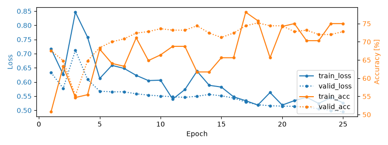
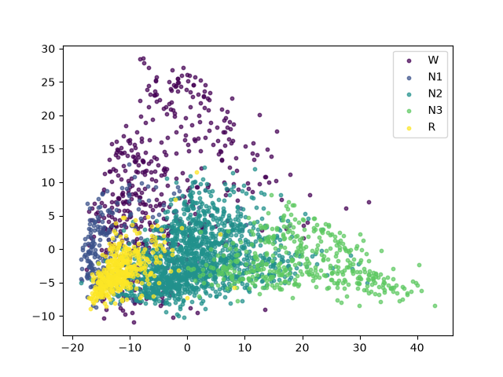

Note
Go to the end to download the full example code.
Self-supervised learning on EEG with relative positioning#
This example shows how to train a neural network with self-supervision on sleep EEG data. We follow the relative positioning approach of [1] on the openly accessible Sleep Physionet dataset [2] [3].
Here, we use relative positioning (RP) as our pretext task, and perform sleep staging as our downstream task. RP is a simple SSL task, in which a neural network is trained to predict whether two randomly sampled EEG windows are close or far apart in time. This method was shown to yield physiologically- and clinically-relevant features and to boost classification performance in low-labels data regimes [1].
# Authors: Hubert Banville <hubert.jbanville@gmail.com>
#
# License: BSD (3-clause)
random_state = 87
n_jobs = 1
Loading and preprocessing the dataset#
Loading the raw recordings#
First, we load a few recordings from the Sleep Physionet dataset. Running this example with more recordings should yield better representations and downstream classification performance.
from braindecode.datasets.sleep_physionet import SleepPhysionet
dataset = SleepPhysionet(subject_ids=[0, 1, 2], recording_ids=[1], crop_wake_mins=30)
Downloading data from 'https://physionet.org/physiobank/database/sleep-edfx/sleep-cassette//SC4021E0-PSG.edf' to file '/home/runner/mne_data/physionet-sleep-data/SC4021E0-PSG.edf'.
0%| | 0.00/51.1M [00:00<?, ?B/s]
0%| | 9.22k/51.1M [00:00<13:39, 62.4kB/s]
0%| | 33.8k/51.1M [00:00<08:24, 101kB/s]
0%| | 44.0k/51.1M [00:00<10:06, 84.2kB/s]
0%| | 66.6k/51.1M [00:00<08:35, 99.1kB/s]
0%| | 76.8k/51.1M [00:00<09:53, 86.0kB/s]
0%| | 91.1k/51.1M [00:01<09:31, 89.3kB/s]
0%| | 108k/51.1M [00:01<09:00, 94.5kB/s]
0%| | 140k/51.1M [00:01<06:46, 125kB/s]
0%|▏ | 173k/51.1M [00:01<06:14, 136kB/s]
0%|▏ | 189k/51.1M [00:01<05:59, 142kB/s]
0%|▏ | 206k/51.1M [00:01<07:51, 108kB/s]
0%|▏ | 222k/51.1M [00:02<09:23, 90.4kB/s]
0%|▏ | 239k/51.1M [00:02<10:36, 80.0kB/s]
0%|▏ | 255k/51.1M [00:02<10:54, 77.8kB/s]
1%|▏ | 271k/51.1M [00:03<13:34, 62.5kB/s]
1%|▏ | 288k/51.1M [00:03<12:26, 68.2kB/s]
1%|▏ | 304k/51.1M [00:03<10:41, 79.3kB/s]
1%|▎ | 337k/51.1M [00:03<07:58, 106kB/s]
1%|▎ | 370k/51.1M [00:03<06:49, 124kB/s]
1%|▎ | 402k/51.1M [00:03<06:04, 139kB/s]
1%|▎ | 419k/51.1M [00:04<05:54, 143kB/s]
1%|▎ | 435k/51.1M [00:04<06:14, 135kB/s]
1%|▎ | 468k/51.1M [00:04<06:49, 124kB/s]
1%|▎ | 484k/51.1M [00:04<07:05, 119kB/s]
1%|▍ | 501k/51.1M [00:04<07:53, 107kB/s]
1%|▍ | 517k/51.1M [00:04<07:24, 114kB/s]
1%|▍ | 534k/51.1M [00:05<07:07, 118kB/s]
1%|▍ | 566k/51.1M [00:05<06:20, 133kB/s]
1%|▍ | 591k/51.1M [00:05<06:17, 134kB/s]
1%|▍ | 605k/51.1M [00:05<07:41, 110kB/s]
1%|▍ | 617k/51.1M [00:05<08:37, 97.6kB/s]
1%|▍ | 632k/51.1M [00:06<09:23, 89.6kB/s]
1%|▍ | 648k/51.1M [00:06<09:02, 93.0kB/s]
1%|▌ | 665k/51.1M [00:06<08:00, 105kB/s]
1%|▌ | 697k/51.1M [00:06<06:28, 130kB/s]
1%|▌ | 730k/51.1M [00:06<05:51, 144kB/s]
1%|▌ | 746k/51.1M [00:06<05:49, 144kB/s]
2%|▌ | 779k/51.1M [00:07<05:17, 159kB/s]
2%|▌ | 796k/51.1M [00:07<05:33, 151kB/s]
2%|▋ | 828k/51.1M [00:07<05:05, 165kB/s]
2%|▋ | 853k/51.1M [00:07<04:57, 169kB/s]
2%|▋ | 878k/51.1M [00:07<06:04, 138kB/s]
2%|▋ | 894k/51.1M [00:07<06:39, 126kB/s]
2%|▋ | 910k/51.1M [00:08<06:45, 124kB/s]
2%|▋ | 927k/51.1M [00:08<07:11, 116kB/s]
2%|▋ | 943k/51.1M [00:08<07:52, 106kB/s]
2%|▋ | 959k/51.1M [00:08<07:23, 113kB/s]
2%|▊ | 984k/51.1M [00:08<06:15, 133kB/s]
2%|▋ | 1.01M/51.1M [00:08<06:27, 130kB/s]
2%|▊ | 1.04M/51.1M [00:09<06:52, 122kB/s]
2%|▊ | 1.06M/51.1M [00:09<07:51, 106kB/s]
2%|▊ | 1.07M/51.1M [00:09<09:03, 92.2kB/s]
2%|▊ | 1.09M/51.1M [00:09<09:56, 83.9kB/s]
2%|▊ | 1.12M/51.1M [00:09<08:26, 98.9kB/s]
2%|▊ | 1.13M/51.1M [00:10<08:34, 97.3kB/s]
2%|▊ | 1.14M/51.1M [00:10<08:11, 102kB/s]
2%|▊ | 1.16M/51.1M [00:10<08:29, 98.1kB/s]
2%|▊ | 1.17M/51.1M [00:10<08:45, 95.1kB/s]
2%|▊ | 1.19M/51.1M [00:10<09:44, 85.5kB/s]
2%|▊ | 1.21M/51.1M [00:11<09:46, 85.2kB/s]
2%|▉ | 1.22M/51.1M [00:11<10:03, 82.8kB/s]
2%|▉ | 1.24M/51.1M [00:11<09:02, 92.0kB/s]
2%|▉ | 1.25M/51.1M [00:11<09:59, 83.3kB/s]
3%|▉ | 1.28M/51.1M [00:11<08:15, 101kB/s]
3%|▉ | 1.29M/51.1M [00:12<11:41, 71.1kB/s]
3%|▉ | 1.30M/51.1M [00:12<12:40, 65.6kB/s]
3%|▉ | 1.32M/51.1M [00:12<12:45, 65.1kB/s]
3%|▉ | 1.34M/51.1M [00:12<11:45, 70.6kB/s]
3%|▉ | 1.35M/51.1M [00:12<10:29, 79.1kB/s]
3%|▉ | 1.37M/51.1M [00:13<09:55, 83.7kB/s]
3%|█ | 1.39M/51.1M [00:13<10:11, 81.4kB/s]
3%|█ | 1.41M/51.1M [00:13<09:25, 87.9kB/s]
3%|█ | 1.42M/51.1M [00:13<10:39, 77.7kB/s]
3%|█ | 1.43M/51.1M [00:13<10:07, 81.8kB/s]
3%|█ | 1.45M/51.1M [00:14<10:31, 78.7kB/s]
3%|█ | 1.47M/51.1M [00:14<10:41, 77.5kB/s]
3%|█ | 1.48M/51.1M [00:14<11:02, 74.9kB/s]
3%|█ | 1.50M/51.1M [00:14<10:28, 79.0kB/s]
3%|█ | 1.52M/51.1M [00:14<10:07, 81.8kB/s]
3%|█▏ | 1.54M/51.1M [00:15<07:43, 107kB/s]
3%|█▏ | 1.55M/51.1M [00:15<07:55, 104kB/s]
3%|█▏ | 1.58M/51.1M [00:15<07:51, 105kB/s]
3%|█▏ | 1.60M/51.1M [00:15<08:25, 98.0kB/s]
3%|█▏ | 1.61M/51.1M [00:16<13:03, 63.2kB/s]
3%|█▏ | 1.63M/51.1M [00:16<11:52, 69.5kB/s]
3%|█▏ | 1.65M/51.1M [00:16<12:37, 65.3kB/s]
3%|█▏ | 1.66M/51.1M [00:16<12:10, 67.8kB/s]
3%|█▏ | 1.68M/51.1M [00:17<13:01, 63.3kB/s]
3%|█▏ | 1.70M/51.1M [00:17<09:56, 82.9kB/s]
3%|█▏ | 1.72M/51.1M [00:17<11:37, 70.8kB/s]
3%|█▎ | 1.73M/51.1M [00:17<10:06, 81.5kB/s]
3%|█▎ | 1.75M/51.1M [00:17<08:54, 92.5kB/s]
3%|█▎ | 1.76M/51.1M [00:17<08:31, 96.5kB/s]
3%|█▎ | 1.78M/51.1M [00:18<08:31, 96.5kB/s]
4%|█▎ | 1.80M/51.1M [00:18<08:20, 98.7kB/s]
4%|█▎ | 1.81M/51.1M [00:18<09:11, 89.5kB/s]
4%|█▎ | 1.84M/51.1M [00:18<07:37, 108kB/s]
4%|█▎ | 1.85M/51.1M [00:18<09:53, 83.0kB/s]
4%|█▎ | 1.86M/51.1M [00:19<10:52, 75.5kB/s]
4%|█▎ | 1.88M/51.1M [00:19<10:53, 75.4kB/s]
4%|█▎ | 1.89M/51.1M [00:19<09:19, 88.0kB/s]
4%|█▍ | 1.91M/51.1M [00:19<08:52, 92.4kB/s]
4%|█▍ | 1.94M/51.1M [00:19<07:58, 103kB/s]
4%|█▍ | 1.98M/51.1M [00:20<06:22, 128kB/s]
4%|█▍ | 1.99M/51.1M [00:20<06:55, 118kB/s]
4%|█▌ | 2.02M/51.1M [00:20<06:01, 136kB/s]
4%|█▌ | 2.04M/51.1M [00:20<06:26, 127kB/s]
4%|█▌ | 2.06M/51.1M [00:20<06:11, 132kB/s]
4%|█▌ | 2.10M/51.1M [00:21<07:12, 113kB/s]
4%|█▌ | 2.11M/51.1M [00:21<08:11, 99.7kB/s]
4%|█▌ | 2.12M/51.1M [00:21<08:33, 95.5kB/s]
4%|█▌ | 2.14M/51.1M [00:21<07:49, 104kB/s]
4%|█▌ | 2.17M/51.1M [00:21<05:49, 140kB/s]
4%|█▌ | 2.18M/51.1M [00:21<05:46, 141kB/s]
4%|█▋ | 2.20M/51.1M [00:22<06:38, 123kB/s]
4%|█▋ | 2.22M/51.1M [00:22<07:11, 113kB/s]
4%|█▋ | 2.24M/51.1M [00:22<07:35, 107kB/s]
4%|█▋ | 2.26M/51.1M [00:22<07:21, 111kB/s]
4%|█▋ | 2.27M/51.1M [00:22<07:18, 111kB/s]
4%|█▋ | 2.29M/51.1M [00:22<07:37, 107kB/s]
5%|█▋ | 2.30M/51.1M [00:23<08:07, 100kB/s]
5%|█▋ | 2.32M/51.1M [00:23<07:49, 104kB/s]
5%|█▋ | 2.34M/51.1M [00:23<07:49, 104kB/s]
5%|█▊ | 2.37M/51.1M [00:23<06:37, 123kB/s]
5%|█▊ | 2.40M/51.1M [00:23<06:29, 125kB/s]
5%|█▊ | 2.43M/51.1M [00:23<05:32, 146kB/s]
5%|█▊ | 2.45M/51.1M [00:24<05:56, 136kB/s]
5%|█▊ | 2.47M/51.1M [00:24<06:49, 119kB/s]
5%|█▊ | 2.48M/51.1M [00:24<07:51, 103kB/s]
5%|█▊ | 2.50M/51.1M [00:24<09:21, 86.6kB/s]
5%|█▊ | 2.52M/51.1M [00:24<08:07, 99.8kB/s]
5%|█▊ | 2.54M/51.1M [00:25<08:44, 92.7kB/s]
5%|█▊ | 2.55M/51.1M [00:25<09:06, 88.9kB/s]
5%|█▊ | 2.57M/51.1M [00:25<09:25, 85.9kB/s]
5%|█▊ | 2.58M/51.1M [00:25<08:22, 96.6kB/s]
5%|█▉ | 2.60M/51.1M [00:25<09:15, 87.4kB/s]
5%|█▉ | 2.61M/51.1M [00:26<09:30, 85.0kB/s]
5%|█▉ | 2.63M/51.1M [00:26<10:14, 78.9kB/s]
5%|█▉ | 2.66M/51.1M [00:26<09:05, 88.8kB/s]
5%|█▉ | 2.66M/51.1M [00:26<09:49, 82.3kB/s]
5%|█▉ | 2.68M/51.1M [00:26<10:11, 79.3kB/s]
5%|█▉ | 2.70M/51.1M [00:27<12:00, 67.2kB/s]
5%|█▉ | 2.71M/51.1M [00:27<10:49, 74.6kB/s]
5%|█▉ | 2.73M/51.1M [00:27<11:36, 69.5kB/s]
5%|█▉ | 2.75M/51.1M [00:27<10:37, 75.9kB/s]
5%|█▉ | 2.76M/51.1M [00:27<10:10, 79.3kB/s]
5%|██ | 2.78M/51.1M [00:28<10:07, 79.6kB/s]
5%|██ | 2.79M/51.1M [00:28<09:22, 85.9kB/s]
6%|██ | 2.82M/51.1M [00:28<09:08, 88.1kB/s]
6%|██ | 2.83M/51.1M [00:28<10:01, 80.4kB/s]
6%|██ | 2.84M/51.1M [00:28<10:06, 79.7kB/s]
6%|██ | 2.86M/51.1M [00:29<09:22, 85.8kB/s]
6%|██ | 2.88M/51.1M [00:29<11:39, 69.0kB/s]
6%|██ | 2.89M/51.1M [00:29<10:11, 78.9kB/s]
6%|██ | 2.91M/51.1M [00:29<08:49, 91.2kB/s]
6%|██ | 2.93M/51.1M [00:29<08:06, 99.1kB/s]
6%|██▏ | 2.95M/51.1M [00:29<06:18, 127kB/s]
6%|██▏ | 2.97M/51.1M [00:30<06:11, 130kB/s]
6%|██▏ | 2.98M/51.1M [00:30<06:47, 118kB/s]
6%|██▏ | 2.99M/51.1M [00:30<06:49, 118kB/s]
6%|██▏ | 3.01M/51.1M [00:30<07:13, 111kB/s]
6%|██▏ | 3.02M/51.1M [00:30<07:44, 104kB/s]
6%|██▎ | 3.04M/51.1M [00:30<07:26, 108kB/s]
6%|██▎ | 3.06M/51.1M [00:30<06:53, 116kB/s]
6%|██▎ | 3.09M/51.1M [00:31<06:04, 132kB/s]
6%|██▎ | 3.11M/51.1M [00:31<06:17, 127kB/s]
6%|██▎ | 3.12M/51.1M [00:31<06:09, 130kB/s]
6%|██▎ | 3.14M/51.1M [00:31<06:58, 115kB/s]
6%|██▎ | 3.15M/51.1M [00:31<08:03, 99.3kB/s]
6%|██▎ | 3.17M/51.1M [00:31<07:51, 102kB/s]
6%|██▎ | 3.19M/51.1M [00:32<07:40, 104kB/s]
6%|██▍ | 3.21M/51.1M [00:32<06:15, 128kB/s]
6%|██▍ | 3.23M/51.1M [00:32<06:32, 122kB/s]
6%|██▍ | 3.25M/51.1M [00:32<06:06, 131kB/s]
6%|██▍ | 3.27M/51.1M [00:32<05:49, 137kB/s]
6%|██▍ | 3.29M/51.1M [00:32<05:46, 138kB/s]
6%|██▍ | 3.32M/51.1M [00:32<05:13, 153kB/s]
7%|██▍ | 3.35M/51.1M [00:33<04:56, 161kB/s]
7%|██▌ | 3.38M/51.1M [00:33<04:52, 164kB/s]
7%|██▌ | 3.41M/51.1M [00:33<04:25, 180kB/s]
7%|██▌ | 3.43M/51.1M [00:33<04:35, 173kB/s]
7%|██▌ | 3.45M/51.1M [00:33<05:08, 155kB/s]
7%|██▌ | 3.47M/51.1M [00:33<04:35, 173kB/s]
7%|██▌ | 3.49M/51.1M [00:33<04:49, 165kB/s]
7%|██▌ | 3.52M/51.1M [00:34<05:23, 147kB/s]
7%|██▌ | 3.53M/51.1M [00:34<05:34, 142kB/s]
7%|██▋ | 3.55M/51.1M [00:34<05:24, 147kB/s]
7%|██▋ | 3.56M/51.1M [00:34<05:23, 147kB/s]
7%|██▋ | 3.58M/51.1M [00:34<05:18, 149kB/s]
7%|██▋ | 3.61M/51.1M [00:34<04:48, 165kB/s]
7%|██▋ | 3.62M/51.1M [00:34<05:15, 151kB/s]
7%|██▋ | 3.65M/51.1M [00:35<06:13, 127kB/s]
7%|██▋ | 3.66M/51.1M [00:35<06:21, 125kB/s]
7%|██▋ | 3.68M/51.1M [00:35<06:35, 120kB/s]
7%|██▋ | 3.70M/51.1M [00:35<06:20, 125kB/s]
7%|██▊ | 3.71M/51.1M [00:35<07:03, 112kB/s]
7%|██▊ | 3.74M/51.1M [00:35<05:58, 132kB/s]
7%|██▊ | 3.75M/51.1M [00:35<05:40, 139kB/s]
7%|██▊ | 3.78M/51.1M [00:36<06:02, 131kB/s]
7%|██▊ | 3.81M/51.1M [00:36<06:19, 125kB/s]
8%|██▊ | 3.84M/51.1M [00:36<05:48, 136kB/s]
8%|██▊ | 3.87M/51.1M [00:36<05:04, 155kB/s]
8%|██▉ | 3.89M/51.1M [00:36<05:23, 146kB/s]
8%|██▉ | 3.92M/51.1M [00:37<05:02, 156kB/s]
8%|██▉ | 3.96M/51.1M [00:37<04:56, 159kB/s]
8%|██▉ | 3.99M/51.1M [00:37<04:51, 162kB/s]
8%|██▉ | 4.01M/51.1M [00:37<04:47, 164kB/s]
8%|██▉ | 4.03M/51.1M [00:37<04:59, 157kB/s]
8%|███ | 4.06M/51.1M [00:37<04:56, 159kB/s]
8%|███ | 4.07M/51.1M [00:38<05:08, 152kB/s]
8%|███ | 4.09M/51.1M [00:38<05:49, 135kB/s]
8%|███ | 4.11M/51.1M [00:38<06:28, 121kB/s]
8%|███ | 4.12M/51.1M [00:38<07:04, 111kB/s]
8%|███ | 4.14M/51.1M [00:38<07:35, 103kB/s]
8%|███ | 4.16M/51.1M [00:38<06:54, 113kB/s]
8%|███ | 4.17M/51.1M [00:39<08:42, 89.9kB/s]
8%|███ | 4.19M/51.1M [00:39<09:38, 81.2kB/s]
8%|███ | 4.20M/51.1M [00:39<09:14, 84.7kB/s]
8%|███ | 4.22M/51.1M [00:39<08:29, 92.2kB/s]
8%|███ | 4.24M/51.1M [00:39<08:51, 88.2kB/s]
8%|███▏ | 4.27M/51.1M [00:40<06:39, 117kB/s]
8%|███▏ | 4.29M/51.1M [00:40<05:53, 133kB/s]
8%|███▏ | 4.32M/51.1M [00:40<05:59, 130kB/s]
8%|███▏ | 4.33M/51.1M [00:40<05:43, 136kB/s]
9%|███▏ | 4.35M/51.1M [00:40<06:18, 124kB/s]
9%|███▏ | 4.37M/51.1M [00:40<07:26, 105kB/s]
9%|███▎ | 4.38M/51.1M [00:41<07:47, 100kB/s]
9%|███▏ | 4.40M/51.1M [00:41<07:56, 98.2kB/s]
9%|███▎ | 4.42M/51.1M [00:41<07:18, 107kB/s]
9%|███▎ | 4.44M/51.1M [00:41<07:27, 104kB/s]
9%|███▏ | 4.45M/51.1M [00:41<07:54, 98.4kB/s]
9%|███▎ | 4.48M/51.1M [00:41<05:46, 135kB/s]
9%|███▎ | 4.50M/51.1M [00:42<06:22, 122kB/s]
9%|███▎ | 4.53M/51.1M [00:42<05:26, 143kB/s]
9%|███▍ | 4.55M/51.1M [00:42<05:52, 132kB/s]
9%|███▍ | 4.56M/51.1M [00:42<06:24, 121kB/s]
9%|███▍ | 4.59M/51.1M [00:42<05:54, 132kB/s]
9%|███▍ | 4.60M/51.1M [00:42<05:57, 130kB/s]
9%|███▍ | 4.62M/51.1M [00:42<05:59, 129kB/s]
9%|███▍ | 4.63M/51.1M [00:43<06:07, 127kB/s]
9%|███▍ | 4.65M/51.1M [00:43<07:05, 109kB/s]
9%|███▎ | 4.66M/51.1M [00:43<09:21, 82.8kB/s]
9%|███▍ | 4.68M/51.1M [00:43<09:46, 79.2kB/s]
9%|███▍ | 4.70M/51.1M [00:43<09:23, 82.4kB/s]
9%|███▍ | 4.72M/51.1M [00:44<08:24, 92.0kB/s]
9%|███▍ | 4.73M/51.1M [00:44<10:10, 76.0kB/s]
9%|███▍ | 4.74M/51.1M [00:44<12:08, 63.7kB/s]
9%|███▍ | 4.76M/51.1M [00:44<10:43, 72.1kB/s]
9%|███▍ | 4.78M/51.1M [00:45<12:17, 62.9kB/s]
9%|███▍ | 4.79M/51.1M [00:45<12:19, 62.7kB/s]
9%|███▍ | 4.81M/51.1M [00:45<13:28, 57.3kB/s]
9%|███▍ | 4.83M/51.1M [00:45<11:52, 65.0kB/s]
9%|███▌ | 4.85M/51.1M [00:46<08:45, 88.0kB/s]
10%|███▌ | 4.88M/51.1M [00:46<08:22, 92.1kB/s]
10%|███▌ | 4.89M/51.1M [00:46<08:01, 96.0kB/s]
10%|███▌ | 4.91M/51.1M [00:46<08:02, 95.8kB/s]
10%|███▋ | 4.94M/51.1M [00:46<06:37, 116kB/s]
10%|███▋ | 4.96M/51.1M [00:47<06:40, 115kB/s]
10%|███▋ | 4.98M/51.1M [00:47<06:36, 117kB/s]
10%|███▌ | 4.99M/51.1M [00:47<09:09, 84.0kB/s]
10%|███▌ | 5.01M/51.1M [00:47<09:43, 79.0kB/s]
10%|███▋ | 5.02M/51.1M [00:48<10:17, 74.7kB/s]
10%|███▋ | 5.04M/51.1M [00:48<10:21, 74.2kB/s]
10%|███▋ | 5.06M/51.1M [00:48<09:35, 80.1kB/s]
10%|███▋ | 5.07M/51.1M [00:48<09:33, 80.3kB/s]
10%|███▋ | 5.09M/51.1M [00:48<08:42, 88.1kB/s]
10%|███▊ | 5.11M/51.1M [00:48<07:35, 101kB/s]
10%|███▋ | 5.12M/51.1M [00:49<07:53, 97.2kB/s]
10%|███▊ | 5.15M/51.1M [00:49<06:28, 119kB/s]
10%|███▊ | 5.19M/51.1M [00:49<05:43, 134kB/s]
10%|███▉ | 5.22M/51.1M [00:49<05:31, 138kB/s]
10%|███▉ | 5.25M/51.1M [00:49<05:44, 133kB/s]
10%|███▉ | 5.27M/51.1M [00:50<05:54, 129kB/s]
10%|███▉ | 5.30M/51.1M [00:50<05:35, 137kB/s]
10%|███▉ | 5.32M/51.1M [00:50<05:39, 135kB/s]
10%|███▉ | 5.33M/51.1M [00:50<06:04, 126kB/s]
10%|███▉ | 5.35M/51.1M [00:50<05:54, 129kB/s]
11%|███▉ | 5.37M/51.1M [00:50<05:39, 135kB/s]
11%|████ | 5.39M/51.1M [00:50<05:51, 130kB/s]
11%|████ | 5.40M/51.1M [00:51<06:27, 118kB/s]
11%|███▉ | 5.42M/51.1M [00:51<07:41, 99.1kB/s]
11%|███▉ | 5.43M/51.1M [00:51<08:36, 88.5kB/s]
11%|███▉ | 5.45M/51.1M [00:51<08:06, 94.0kB/s]
11%|███▉ | 5.47M/51.1M [00:51<08:19, 91.4kB/s]
11%|███▉ | 5.48M/51.1M [00:52<08:41, 87.6kB/s]
11%|████ | 5.51M/51.1M [00:52<06:58, 109kB/s]
11%|████ | 5.53M/51.1M [00:52<06:37, 115kB/s]
11%|████▏ | 5.56M/51.1M [00:52<05:47, 131kB/s]
11%|████▏ | 5.60M/51.1M [00:52<05:19, 143kB/s]
11%|████▏ | 5.64M/51.1M [00:53<04:36, 164kB/s]
11%|████▏ | 5.65M/51.1M [00:53<04:42, 161kB/s]
11%|████▏ | 5.68M/51.1M [00:53<05:07, 148kB/s]
11%|████▏ | 5.69M/51.1M [00:53<05:07, 148kB/s]
11%|████▎ | 5.73M/51.1M [00:53<04:54, 154kB/s]
11%|████▎ | 5.74M/51.1M [00:53<04:59, 152kB/s]
11%|████▎ | 5.78M/51.1M [00:53<04:41, 161kB/s]
11%|████▎ | 5.79M/51.1M [00:54<04:51, 156kB/s]
11%|████▎ | 5.83M/51.1M [00:54<04:40, 161kB/s]
11%|████▎ | 5.84M/51.1M [00:54<04:48, 157kB/s]
11%|████▎ | 5.86M/51.1M [00:54<04:50, 156kB/s]
11%|████▎ | 5.87M/51.1M [00:54<05:11, 145kB/s]
12%|████▍ | 5.90M/51.1M [00:54<04:46, 158kB/s]
12%|████▍ | 5.92M/51.1M [00:54<05:48, 130kB/s]
12%|████▍ | 5.93M/51.1M [00:55<06:35, 114kB/s]
12%|████▍ | 5.94M/51.1M [00:55<06:57, 108kB/s]
12%|████▍ | 5.96M/51.1M [00:55<06:32, 115kB/s]
12%|████▍ | 5.99M/51.1M [00:55<06:22, 118kB/s]
12%|████▍ | 6.03M/51.1M [00:55<05:18, 142kB/s]
12%|████▍ | 6.04M/51.1M [00:55<05:27, 138kB/s]
12%|████▌ | 6.06M/51.1M [00:56<06:37, 114kB/s]
12%|████▌ | 6.09M/51.1M [00:56<06:28, 116kB/s]
12%|████▌ | 6.10M/51.1M [00:56<06:55, 108kB/s]
12%|████▌ | 6.12M/51.1M [00:56<07:16, 103kB/s]
12%|████▌ | 6.14M/51.1M [00:56<07:08, 105kB/s]
12%|████▌ | 6.15M/51.1M [00:57<07:29, 100kB/s]
12%|████▌ | 6.19M/51.1M [00:57<05:18, 141kB/s]
12%|████▌ | 6.21M/51.1M [00:57<05:29, 136kB/s]
12%|████▋ | 6.24M/51.1M [00:57<05:18, 141kB/s]
12%|████▋ | 6.25M/51.1M [00:57<05:15, 142kB/s]
12%|████▋ | 6.27M/51.1M [00:57<04:51, 154kB/s]
12%|████▋ | 6.30M/51.1M [00:57<04:59, 150kB/s]
12%|████▋ | 6.33M/51.1M [00:58<04:47, 156kB/s]
12%|████▋ | 6.34M/51.1M [00:58<04:48, 155kB/s]
12%|████▋ | 6.36M/51.1M [00:58<04:54, 152kB/s]
12%|████▋ | 6.37M/51.1M [00:58<05:25, 138kB/s]
13%|████▊ | 6.40M/51.1M [00:58<05:44, 130kB/s]
13%|████▊ | 6.42M/51.1M [00:58<05:36, 133kB/s]
13%|████▊ | 6.43M/51.1M [00:58<05:43, 130kB/s]
13%|████▊ | 6.46M/51.1M [00:59<05:00, 149kB/s]
13%|████▊ | 6.47M/51.1M [00:59<05:58, 125kB/s]
13%|████▊ | 6.48M/51.1M [00:59<05:58, 124kB/s]
13%|████▊ | 6.50M/51.1M [00:59<06:46, 110kB/s]
13%|████▊ | 6.51M/51.1M [00:59<06:37, 112kB/s]
13%|████▊ | 6.53M/51.1M [00:59<07:01, 106kB/s]
13%|████▊ | 6.55M/51.1M [01:00<07:19, 102kB/s]
13%|████▋ | 6.56M/51.1M [01:00<07:44, 95.9kB/s]
13%|████▉ | 6.59M/51.1M [01:00<06:46, 110kB/s]
13%|████▊ | 6.60M/51.1M [01:00<08:15, 89.8kB/s]
13%|████▊ | 6.61M/51.1M [01:00<08:18, 89.3kB/s]
13%|████▊ | 6.63M/51.1M [01:00<07:41, 96.4kB/s]
13%|████▊ | 6.64M/51.1M [01:01<07:51, 94.4kB/s]
13%|████▊ | 6.66M/51.1M [01:01<08:05, 91.7kB/s]
13%|████▊ | 6.68M/51.1M [01:01<07:39, 96.8kB/s]
13%|████▉ | 6.69M/51.1M [01:01<06:56, 107kB/s]
13%|████▉ | 6.72M/51.1M [01:01<05:33, 133kB/s]
13%|█████ | 6.74M/51.1M [01:01<05:33, 133kB/s]
13%|█████ | 6.76M/51.1M [01:01<05:34, 133kB/s]
13%|█████ | 6.79M/51.1M [01:02<05:18, 139kB/s]
13%|█████ | 6.82M/51.1M [01:02<04:55, 150kB/s]
13%|█████ | 6.86M/51.1M [01:02<05:14, 141kB/s]
13%|█████ | 6.89M/51.1M [01:02<05:14, 141kB/s]
14%|█████▏ | 6.92M/51.1M [01:03<04:51, 152kB/s]
14%|█████▏ | 6.96M/51.1M [01:03<04:30, 163kB/s]
14%|█████▏ | 6.99M/51.1M [01:03<04:41, 157kB/s]
14%|█████▏ | 7.02M/51.1M [01:03<04:22, 168kB/s]
14%|█████▏ | 7.05M/51.1M [01:03<04:16, 172kB/s]
14%|█████▎ | 7.09M/51.1M [01:03<04:06, 179kB/s]
14%|█████▎ | 7.11M/51.1M [01:04<03:50, 191kB/s]
14%|█████▎ | 7.14M/51.1M [01:04<04:37, 158kB/s]
14%|█████▎ | 7.15M/51.1M [01:04<04:54, 149kB/s]
14%|█████▎ | 7.17M/51.1M [01:04<05:11, 141kB/s]
14%|█████▎ | 7.19M/51.1M [01:04<06:13, 118kB/s]
14%|█████▎ | 7.20M/51.1M [01:04<06:19, 116kB/s]
14%|█████▎ | 7.22M/51.1M [01:05<06:01, 122kB/s]
14%|█████▍ | 7.24M/51.1M [01:05<05:14, 140kB/s]
14%|█████▍ | 7.27M/51.1M [01:05<05:03, 145kB/s]
14%|█████▍ | 7.30M/51.1M [01:05<04:44, 154kB/s]
14%|█████▍ | 7.33M/51.1M [01:05<04:35, 159kB/s]
14%|█████▍ | 7.37M/51.1M [01:05<04:53, 149kB/s]
14%|█████▍ | 7.38M/51.1M [01:06<04:56, 148kB/s]
14%|█████▌ | 7.41M/51.1M [01:06<05:44, 127kB/s]
15%|█████▌ | 7.42M/51.1M [01:06<06:32, 111kB/s]
15%|█████▌ | 7.43M/51.1M [01:06<07:09, 102kB/s]
15%|█████▍ | 7.45M/51.1M [01:06<07:18, 99.6kB/s]
15%|█████▍ | 7.46M/51.1M [01:07<08:12, 88.7kB/s]
15%|█████▍ | 7.48M/51.1M [01:07<09:04, 80.2kB/s]
15%|█████▍ | 7.50M/51.1M [01:07<10:44, 67.7kB/s]
15%|█████▍ | 7.51M/51.1M [01:07<09:26, 77.0kB/s]
15%|█████▌ | 7.54M/51.1M [01:07<07:07, 102kB/s]
15%|█████▌ | 7.55M/51.1M [01:08<07:10, 101kB/s]
15%|█████▌ | 7.56M/51.1M [01:08<07:04, 103kB/s]
15%|█████▋ | 7.60M/51.1M [01:08<05:41, 127kB/s]
15%|█████▋ | 7.61M/51.1M [01:08<05:40, 128kB/s]
15%|█████▋ | 7.63M/51.1M [01:08<05:21, 135kB/s]
15%|█████▋ | 7.64M/51.1M [01:08<05:47, 125kB/s]
15%|█████▋ | 7.68M/51.1M [01:08<04:46, 152kB/s]
15%|█████▋ | 7.69M/51.1M [01:08<04:48, 151kB/s]
15%|█████▋ | 7.71M/51.1M [01:09<04:48, 151kB/s]
15%|█████▊ | 7.74M/51.1M [01:09<04:32, 159kB/s]
15%|█████▊ | 7.77M/51.1M [01:09<04:28, 161kB/s]
15%|█████▊ | 7.79M/51.1M [01:09<05:02, 143kB/s]
15%|█████▊ | 7.81M/51.1M [01:09<04:58, 145kB/s]
15%|█████▊ | 7.84M/51.1M [01:09<04:32, 159kB/s]
15%|█████▊ | 7.87M/51.1M [01:10<04:28, 161kB/s]
15%|█████▊ | 7.91M/51.1M [01:10<04:23, 164kB/s]
16%|█████▉ | 7.94M/51.1M [01:10<04:43, 153kB/s]
16%|█████▉ | 7.97M/51.1M [01:10<04:39, 154kB/s]
16%|█████▉ | 7.99M/51.1M [01:10<04:41, 153kB/s]
16%|█████▉ | 8.00M/51.1M [01:11<04:58, 144kB/s]
16%|█████▉ | 8.02M/51.1M [01:11<05:12, 138kB/s]
16%|█████▉ | 8.04M/51.1M [01:11<05:30, 130kB/s]
16%|█████▉ | 8.06M/51.1M [01:11<04:58, 144kB/s]
16%|██████ | 8.08M/51.1M [01:11<05:04, 141kB/s]
16%|██████ | 8.09M/51.1M [01:11<05:18, 135kB/s]
16%|██████ | 8.12M/51.1M [01:11<05:01, 143kB/s]
16%|██████ | 8.14M/51.1M [01:11<05:00, 143kB/s]
16%|██████ | 8.17M/51.1M [01:12<05:04, 141kB/s]
16%|██████ | 8.20M/51.1M [01:12<04:54, 146kB/s]
16%|██████ | 8.22M/51.1M [01:12<04:48, 149kB/s]
16%|██████▏ | 8.25M/51.1M [01:12<04:49, 148kB/s]
16%|██████▏ | 8.27M/51.1M [01:12<04:47, 149kB/s]
16%|██████▏ | 8.28M/51.1M [01:12<05:06, 140kB/s]
16%|██████▏ | 8.32M/51.1M [01:13<04:18, 166kB/s]
16%|██████▏ | 8.35M/51.1M [01:13<04:38, 154kB/s]
16%|██████▏ | 8.38M/51.1M [01:13<04:26, 160kB/s]
16%|██████▎ | 8.41M/51.1M [01:13<04:27, 160kB/s]
17%|██████▎ | 8.46M/51.1M [01:13<03:59, 178kB/s]
17%|██████▎ | 8.47M/51.1M [01:14<04:22, 162kB/s]
17%|██████▎ | 8.50M/51.1M [01:14<04:32, 156kB/s]
17%|██████▎ | 8.51M/51.1M [01:14<04:32, 156kB/s]
17%|██████▎ | 8.53M/51.1M [01:14<05:10, 137kB/s]
17%|██████▎ | 8.55M/51.1M [01:14<06:24, 111kB/s]
17%|██████▏ | 8.56M/51.1M [01:14<07:06, 99.9kB/s]
17%|██████▍ | 8.59M/51.1M [01:15<05:45, 123kB/s]
17%|██████▍ | 8.60M/51.1M [01:15<06:02, 117kB/s]
17%|██████▍ | 8.63M/51.1M [01:15<05:26, 130kB/s]
17%|██████▍ | 8.66M/51.1M [01:15<04:58, 142kB/s]
17%|██████▍ | 8.69M/51.1M [01:15<04:53, 145kB/s]
17%|██████▍ | 8.72M/51.1M [01:15<04:35, 154kB/s]
17%|██████▍ | 8.73M/51.1M [01:16<04:40, 151kB/s]
17%|██████▌ | 8.76M/51.1M [01:16<04:53, 144kB/s]
17%|██████▌ | 8.79M/51.1M [01:16<04:37, 153kB/s]
17%|██████▌ | 8.82M/51.1M [01:16<04:44, 149kB/s]
17%|██████▌ | 8.85M/51.1M [01:16<04:45, 148kB/s]
17%|██████▌ | 8.86M/51.1M [01:17<05:29, 128kB/s]
17%|██████▌ | 8.88M/51.1M [01:17<05:38, 125kB/s]
17%|██████▌ | 8.89M/51.1M [01:17<06:13, 113kB/s]
17%|██████▌ | 8.91M/51.1M [01:17<06:53, 102kB/s]
17%|██████▍ | 8.92M/51.1M [01:17<07:04, 99.5kB/s]
17%|██████▋ | 8.94M/51.1M [01:17<06:38, 106kB/s]
18%|██████▋ | 8.95M/51.1M [01:17<06:17, 112kB/s]
18%|██████▋ | 8.98M/51.1M [01:18<05:44, 122kB/s]
18%|██████▌ | 8.99M/51.1M [01:18<07:28, 94.1kB/s]
18%|██████▌ | 9.00M/51.1M [01:18<08:11, 85.8kB/s]
18%|██████▌ | 9.02M/51.1M [01:18<07:28, 93.9kB/s]
18%|██████▌ | 9.04M/51.1M [01:18<07:05, 99.0kB/s]
18%|██████▋ | 9.05M/51.1M [01:18<06:24, 109kB/s]
18%|██████▌ | 9.07M/51.1M [01:19<07:02, 99.6kB/s]
18%|██████▊ | 9.11M/51.1M [01:19<05:19, 131kB/s]
18%|██████▊ | 9.12M/51.1M [01:19<05:23, 130kB/s]
18%|██████▊ | 9.14M/51.1M [01:19<05:55, 118kB/s]
18%|██████▌ | 9.15M/51.1M [01:19<07:12, 97.1kB/s]
18%|██████▋ | 9.17M/51.1M [01:19<07:13, 96.9kB/s]
18%|██████▋ | 9.18M/51.1M [01:20<07:04, 98.8kB/s]
18%|██████▊ | 9.20M/51.1M [01:20<06:37, 106kB/s]
18%|██████▊ | 9.22M/51.1M [01:20<06:08, 114kB/s]
18%|██████▊ | 9.25M/51.1M [01:20<05:51, 119kB/s]
18%|██████▉ | 9.28M/51.1M [01:20<04:40, 149kB/s]
18%|██████▉ | 9.32M/51.1M [01:20<04:26, 157kB/s]
18%|██████▉ | 9.35M/51.1M [01:21<04:21, 160kB/s]
18%|██████▉ | 9.37M/51.1M [01:21<04:14, 164kB/s]
18%|██████▉ | 9.40M/51.1M [01:21<04:48, 145kB/s]
18%|██████▉ | 9.41M/51.1M [01:21<04:46, 146kB/s]
18%|███████ | 9.43M/51.1M [01:21<04:59, 139kB/s]
19%|███████ | 9.46M/51.1M [01:21<04:28, 155kB/s]
19%|███████ | 9.48M/51.1M [01:22<04:39, 149kB/s]
19%|███████ | 9.50M/51.1M [01:22<04:08, 167kB/s]
19%|███████ | 9.52M/51.1M [01:22<04:21, 159kB/s]
19%|███████ | 9.54M/51.1M [01:22<06:08, 113kB/s]
19%|██████▉ | 9.55M/51.1M [01:22<07:02, 98.4kB/s]
19%|██████▉ | 9.56M/51.1M [01:22<08:15, 83.9kB/s]
19%|██████▉ | 9.58M/51.1M [01:23<13:55, 49.7kB/s]
19%|██████▉ | 9.59M/51.1M [01:23<12:39, 54.7kB/s]
19%|██████▉ | 9.61M/51.1M [01:23<10:19, 67.0kB/s]
19%|██████▉ | 9.63M/51.1M [01:24<07:37, 90.8kB/s]
19%|██████▉ | 9.65M/51.1M [01:24<08:58, 77.1kB/s]
19%|██████▉ | 9.66M/51.1M [01:24<08:46, 78.8kB/s]
19%|██████▉ | 9.68M/51.1M [01:24<09:32, 72.4kB/s]
19%|███████ | 9.69M/51.1M [01:24<08:36, 80.3kB/s]
19%|███████ | 9.71M/51.1M [01:25<08:01, 86.1kB/s]
19%|███████ | 9.72M/51.1M [01:25<08:05, 85.4kB/s]
19%|███████ | 9.74M/51.1M [01:25<08:16, 83.4kB/s]
19%|███████ | 9.76M/51.1M [01:25<08:39, 79.7kB/s]
19%|███████ | 9.77M/51.1M [01:25<07:56, 86.7kB/s]
19%|███████▎ | 9.80M/51.1M [01:25<06:22, 108kB/s]
19%|███████ | 9.81M/51.1M [01:26<07:17, 94.4kB/s]
19%|███████ | 9.82M/51.1M [01:26<07:37, 90.4kB/s]
19%|███████ | 9.84M/51.1M [01:26<07:21, 93.5kB/s]
19%|███████▏ | 9.86M/51.1M [01:26<07:53, 87.2kB/s]
19%|███████▏ | 9.87M/51.1M [01:26<07:38, 90.1kB/s]
19%|███████▏ | 9.89M/51.1M [01:27<08:07, 84.6kB/s]
19%|███████▏ | 9.91M/51.1M [01:27<08:20, 82.4kB/s]
19%|███████▏ | 9.93M/51.1M [01:27<07:11, 95.6kB/s]
19%|███████▏ | 9.94M/51.1M [01:27<08:28, 81.1kB/s]
19%|███████▏ | 9.95M/51.1M [01:28<14:55, 46.0kB/s]
19%|███████▏ | 9.97M/51.1M [01:28<13:03, 52.6kB/s]
20%|███████▏ | 9.99M/51.1M [01:28<11:44, 58.4kB/s]
20%|███████▏ | 10.0M/51.1M [01:28<10:20, 66.3kB/s]
20%|███████▏ | 10.0M/51.1M [01:29<09:04, 75.5kB/s]
20%|███████▎ | 10.0M/51.1M [01:29<08:28, 80.9kB/s]
20%|███████▎ | 10.1M/51.1M [01:29<07:35, 90.2kB/s]
20%|███████▎ | 10.1M/51.1M [01:29<08:37, 79.4kB/s]
20%|███████▎ | 10.1M/51.1M [01:29<08:21, 81.9kB/s]
20%|███████▎ | 10.1M/51.1M [01:30<08:51, 77.2kB/s]
20%|███████▎ | 10.1M/51.1M [01:30<08:40, 78.8kB/s]
20%|███████▎ | 10.1M/51.1M [01:30<10:50, 63.1kB/s]
20%|███████▎ | 10.2M/51.1M [01:31<11:43, 58.3kB/s]
20%|███████▎ | 10.2M/51.1M [01:31<10:34, 64.6kB/s]
20%|███████▎ | 10.2M/51.1M [01:31<08:26, 80.8kB/s]
20%|███████▍ | 10.2M/51.1M [01:31<09:17, 73.5kB/s]
20%|███████▍ | 10.2M/51.1M [01:32<16:33, 41.2kB/s]
20%|███████▍ | 10.2M/51.1M [01:32<19:29, 35.0kB/s]
20%|███████▍ | 10.2M/51.1M [01:33<15:50, 43.0kB/s]
20%|███████▍ | 10.3M/51.1M [01:33<13:03, 52.2kB/s]
20%|███████▍ | 10.3M/51.1M [01:33<10:33, 64.5kB/s]
20%|███████▍ | 10.3M/51.1M [01:33<07:19, 92.8kB/s]
20%|███████▋ | 10.3M/51.1M [01:33<06:08, 111kB/s]
20%|███████▋ | 10.4M/51.1M [01:33<05:13, 130kB/s]
20%|███████▋ | 10.4M/51.1M [01:34<05:17, 128kB/s]
20%|███████▋ | 10.4M/51.1M [01:34<04:21, 156kB/s]
20%|███████▊ | 10.4M/51.1M [01:34<04:21, 156kB/s]
21%|███████▊ | 10.5M/51.1M [01:34<03:49, 177kB/s]
21%|███████▊ | 10.5M/51.1M [01:34<03:57, 171kB/s]
21%|███████▊ | 10.5M/51.1M [01:34<04:15, 159kB/s]
21%|███████▊ | 10.6M/51.1M [01:35<04:23, 154kB/s]
21%|███████▊ | 10.6M/51.1M [01:35<03:53, 173kB/s]
21%|███████▉ | 10.6M/51.1M [01:35<03:48, 177kB/s]
21%|███████▉ | 10.7M/51.1M [01:35<03:51, 175kB/s]
21%|███████▉ | 10.7M/51.1M [01:35<03:41, 183kB/s]
21%|███████▉ | 10.7M/51.1M [01:35<03:57, 170kB/s]
21%|███████▉ | 10.7M/51.1M [01:36<03:28, 193kB/s]
21%|████████ | 10.8M/51.1M [01:36<04:00, 168kB/s]
21%|████████ | 10.8M/51.1M [01:36<03:41, 182kB/s]
21%|████████ | 10.8M/51.1M [01:36<03:44, 179kB/s]
21%|████████ | 10.9M/51.1M [01:36<03:28, 193kB/s]
21%|████████ | 10.9M/51.1M [01:36<04:08, 162kB/s]
21%|████████▏ | 10.9M/51.1M [01:37<03:35, 187kB/s]
21%|████████▏ | 11.0M/51.1M [01:37<03:24, 196kB/s]
22%|████████▏ | 11.0M/51.1M [01:37<03:47, 177kB/s]
22%|████████▏ | 11.0M/51.1M [01:37<04:00, 167kB/s]
22%|████████▏ | 11.1M/51.1M [01:37<03:42, 180kB/s]
22%|████████▎ | 11.1M/51.1M [01:38<03:28, 192kB/s]
22%|████████▎ | 11.1M/51.1M [01:38<03:54, 171kB/s]
22%|████████▎ | 11.2M/51.1M [01:38<03:57, 168kB/s]
22%|████████▎ | 11.2M/51.1M [01:38<03:58, 168kB/s]
22%|████████▎ | 11.2M/51.1M [01:38<04:05, 163kB/s]
22%|████████▎ | 11.2M/51.1M [01:38<03:57, 168kB/s]
22%|████████▎ | 11.3M/51.1M [01:39<04:01, 165kB/s]
22%|████████▍ | 11.3M/51.1M [01:39<03:55, 170kB/s]
22%|████████▍ | 11.3M/51.1M [01:39<04:04, 163kB/s]
22%|████████▍ | 11.3M/51.1M [01:39<04:25, 150kB/s]
22%|████████▍ | 11.3M/51.1M [01:39<04:48, 138kB/s]
22%|████████▍ | 11.4M/51.1M [01:39<04:55, 135kB/s]
22%|████████▍ | 11.4M/51.1M [01:39<05:41, 116kB/s]
22%|████████▍ | 11.4M/51.1M [01:40<05:54, 112kB/s]
22%|████████▍ | 11.4M/51.1M [01:40<05:34, 119kB/s]
22%|████████▌ | 11.4M/51.1M [01:40<04:57, 134kB/s]
22%|████████▌ | 11.5M/51.1M [01:40<04:22, 151kB/s]
23%|████████▌ | 11.5M/51.1M [01:40<04:27, 148kB/s]
23%|████████▌ | 11.5M/51.1M [01:40<03:48, 173kB/s]
23%|████████▌ | 11.6M/51.1M [01:41<03:44, 176kB/s]
23%|████████▌ | 11.6M/51.1M [01:41<03:45, 175kB/s]
23%|████████▋ | 11.6M/51.1M [01:41<03:32, 186kB/s]
23%|████████▋ | 11.7M/51.1M [01:41<03:59, 165kB/s]
23%|████████▋ | 11.7M/51.1M [01:41<04:03, 162kB/s]
23%|████████▋ | 11.7M/51.1M [01:41<03:29, 188kB/s]
23%|████████▋ | 11.8M/51.1M [01:42<03:49, 172kB/s]
23%|████████▋ | 11.8M/51.1M [01:42<03:52, 170kB/s]
23%|████████▊ | 11.8M/51.1M [01:42<03:51, 170kB/s]
23%|████████▊ | 11.8M/51.1M [01:42<03:57, 165kB/s]
23%|████████▊ | 11.9M/51.1M [01:42<03:42, 176kB/s]
23%|████████▊ | 11.9M/51.1M [01:42<03:44, 175kB/s]
23%|████████▊ | 11.9M/51.1M [01:43<03:48, 172kB/s]
23%|████████▉ | 12.0M/51.1M [01:43<03:47, 172kB/s]
23%|████████▉ | 12.0M/51.1M [01:43<03:48, 171kB/s]
23%|████████▉ | 12.0M/51.1M [01:43<04:00, 163kB/s]
24%|████████▉ | 12.0M/51.1M [01:43<03:48, 171kB/s]
24%|████████▉ | 12.1M/51.1M [01:43<04:04, 160kB/s]
24%|████████▉ | 12.1M/51.1M [01:44<03:46, 173kB/s]
24%|████████▉ | 12.1M/51.1M [01:44<04:34, 142kB/s]
24%|█████████ | 12.1M/51.1M [01:44<03:42, 175kB/s]
24%|█████████ | 12.2M/51.1M [01:44<03:41, 176kB/s]
24%|█████████ | 12.2M/51.1M [01:44<03:44, 173kB/s]
24%|█████████ | 12.2M/51.1M [01:44<03:56, 165kB/s]
24%|█████████ | 12.2M/51.1M [01:45<03:42, 175kB/s]
24%|█████████▏ | 12.3M/51.1M [01:45<03:35, 180kB/s]
24%|█████████▏ | 12.3M/51.1M [01:45<03:47, 171kB/s]
24%|█████████▏ | 12.3M/51.1M [01:45<03:45, 172kB/s]
24%|█████████▏ | 12.4M/51.1M [01:45<03:45, 172kB/s]
24%|█████████▏ | 12.4M/51.1M [01:45<03:16, 197kB/s]
24%|█████████▏ | 12.4M/51.1M [01:46<03:57, 163kB/s]
24%|█████████▏ | 12.4M/51.1M [01:46<03:58, 162kB/s]
24%|█████████▎ | 12.5M/51.1M [01:46<03:20, 193kB/s]
24%|█████████▎ | 12.5M/51.1M [01:46<03:57, 163kB/s]
24%|█████████▎ | 12.5M/51.1M [01:46<04:23, 147kB/s]
25%|█████████▎ | 12.6M/51.1M [01:46<03:56, 163kB/s]
25%|█████████▎ | 12.6M/51.1M [01:47<04:01, 160kB/s]
25%|█████████▎ | 12.6M/51.1M [01:47<03:54, 164kB/s]
25%|█████████▍ | 12.6M/51.1M [01:47<04:01, 159kB/s]
25%|█████████▍ | 12.7M/51.1M [01:47<03:51, 166kB/s]
25%|█████████▍ | 12.7M/51.1M [01:47<04:32, 141kB/s]
25%|█████████▍ | 12.7M/51.1M [01:47<03:40, 174kB/s]
25%|█████████▍ | 12.7M/51.1M [01:48<03:50, 166kB/s]
25%|█████████▍ | 12.8M/51.1M [01:48<03:25, 187kB/s]
25%|█████████▌ | 12.8M/51.1M [01:48<03:59, 160kB/s]
25%|█████████▌ | 12.8M/51.1M [01:48<03:39, 174kB/s]
25%|█████████▌ | 12.9M/51.1M [01:48<03:48, 167kB/s]
25%|█████████▌ | 12.9M/51.1M [01:48<03:25, 186kB/s]
25%|█████████▌ | 12.9M/51.1M [01:49<03:42, 172kB/s]
25%|█████████▌ | 13.0M/51.1M [01:49<03:41, 172kB/s]
25%|█████████▋ | 13.0M/51.1M [01:49<03:44, 170kB/s]
25%|█████████▋ | 13.0M/51.1M [01:49<03:36, 176kB/s]
26%|█████████▋ | 13.1M/51.1M [01:49<03:31, 180kB/s]
26%|█████████▋ | 13.1M/51.1M [01:49<03:34, 178kB/s]
26%|█████████▋ | 13.1M/51.1M [01:50<03:32, 179kB/s]
26%|█████████▊ | 13.1M/51.1M [01:50<03:29, 181kB/s]
26%|█████████▊ | 13.2M/51.1M [01:50<03:47, 167kB/s]
26%|█████████▊ | 13.2M/51.1M [01:50<03:29, 181kB/s]
26%|█████████▊ | 13.2M/51.1M [01:50<03:40, 172kB/s]
26%|█████████▊ | 13.2M/51.1M [01:50<03:41, 171kB/s]
26%|█████████▊ | 13.3M/51.1M [01:51<03:41, 171kB/s]
26%|█████████▊ | 13.3M/51.1M [01:51<03:44, 169kB/s]
26%|█████████▉ | 13.3M/51.1M [01:51<04:24, 143kB/s]
26%|█████████▉ | 13.3M/51.1M [01:51<04:00, 157kB/s]
26%|█████████▉ | 13.4M/51.1M [01:51<04:11, 150kB/s]
26%|█████████▉ | 13.4M/51.1M [01:51<04:30, 140kB/s]
26%|█████████▉ | 13.4M/51.1M [01:51<04:36, 137kB/s]
26%|█████████▉ | 13.4M/51.1M [01:52<04:37, 136kB/s]
26%|█████████▉ | 13.4M/51.1M [01:52<04:20, 145kB/s]
26%|██████████ | 13.5M/51.1M [01:52<03:54, 161kB/s]
26%|██████████ | 13.5M/51.1M [01:52<03:58, 158kB/s]
26%|██████████ | 13.5M/51.1M [01:52<03:51, 163kB/s]
26%|██████████ | 13.5M/51.1M [01:52<03:55, 160kB/s]
27%|██████████ | 13.6M/51.1M [01:53<03:47, 165kB/s]
27%|██████████ | 13.6M/51.1M [01:53<03:35, 174kB/s]
27%|██████████▏ | 13.6M/51.1M [01:53<03:29, 179kB/s]
27%|██████████▏ | 13.7M/51.1M [01:53<03:42, 168kB/s]
27%|██████████▏ | 13.7M/51.1M [01:53<03:32, 177kB/s]
27%|██████████▏ | 13.7M/51.1M [01:53<04:14, 147kB/s]
27%|██████████▏ | 13.7M/51.1M [01:54<04:45, 131kB/s]
27%|██████████▏ | 13.7M/51.1M [01:54<04:47, 130kB/s]
27%|██████████▏ | 13.8M/51.1M [01:54<04:47, 130kB/s]
27%|██████████▎ | 13.8M/51.1M [01:54<04:13, 147kB/s]
27%|██████████▎ | 13.8M/51.1M [01:54<04:08, 150kB/s]
27%|██████████▎ | 13.8M/51.1M [01:54<04:07, 151kB/s]
27%|██████████▎ | 13.9M/51.1M [01:55<03:53, 159kB/s]
27%|██████████▎ | 13.9M/51.1M [01:55<03:52, 160kB/s]
27%|██████████▎ | 13.9M/51.1M [01:55<03:41, 168kB/s]
27%|██████████▎ | 13.9M/51.1M [01:55<04:01, 154kB/s]
27%|██████████▎ | 14.0M/51.1M [01:55<04:10, 148kB/s]
27%|██████████▍ | 14.0M/51.1M [01:55<05:05, 122kB/s]
27%|██████████▍ | 14.0M/51.1M [01:56<05:37, 110kB/s]
27%|██████████▍ | 14.0M/51.1M [01:56<05:45, 108kB/s]
27%|██████████▏ | 14.0M/51.1M [01:56<06:24, 96.6kB/s]
27%|██████████▏ | 14.0M/51.1M [01:56<07:05, 87.2kB/s]
27%|██████████▏ | 14.1M/51.1M [01:56<06:37, 93.3kB/s]
28%|██████████▏ | 14.1M/51.1M [01:56<06:36, 93.5kB/s]
28%|██████████▍ | 14.1M/51.1M [01:56<05:59, 103kB/s]
28%|██████████▍ | 14.1M/51.1M [01:57<05:43, 108kB/s]
28%|██████████▍ | 14.1M/51.1M [01:57<04:49, 128kB/s]
28%|██████████▌ | 14.1M/51.1M [01:57<04:53, 126kB/s]
28%|██████████▌ | 14.2M/51.1M [01:57<05:33, 111kB/s]
28%|██████████▌ | 14.2M/51.1M [01:57<04:49, 128kB/s]
28%|██████████▌ | 14.2M/51.1M [01:57<05:26, 113kB/s]
28%|██████████▌ | 14.2M/51.1M [01:58<05:08, 120kB/s]
28%|██████████▌ | 14.2M/51.1M [01:58<05:26, 113kB/s]
28%|██████████▌ | 14.3M/51.1M [01:58<04:28, 137kB/s]
28%|██████████▌ | 14.3M/51.1M [01:58<04:42, 130kB/s]
28%|██████████▌ | 14.3M/51.1M [01:58<04:39, 132kB/s]
28%|██████████▋ | 14.3M/51.1M [01:58<04:20, 141kB/s]
28%|██████████▋ | 14.3M/51.1M [01:58<04:02, 152kB/s]
28%|██████████▋ | 14.4M/51.1M [01:59<03:27, 177kB/s]
28%|██████████▋ | 14.4M/51.1M [01:59<03:27, 177kB/s]
28%|██████████▋ | 14.4M/51.1M [01:59<03:59, 153kB/s]
28%|██████████▋ | 14.5M/51.1M [01:59<04:14, 144kB/s]
28%|██████████▊ | 14.5M/51.1M [01:59<03:08, 194kB/s]
28%|██████████▊ | 14.5M/51.1M [01:59<03:15, 187kB/s]
28%|██████████▊ | 14.6M/51.1M [02:00<03:35, 170kB/s]
29%|██████████▊ | 14.6M/51.1M [02:00<03:27, 176kB/s]
29%|██████████▊ | 14.6M/51.1M [02:00<03:17, 185kB/s]
29%|██████████▉ | 14.6M/51.1M [02:00<03:21, 181kB/s]
29%|██████████▉ | 14.7M/51.1M [02:00<03:18, 184kB/s]
29%|██████████▉ | 14.7M/51.1M [02:00<03:20, 182kB/s]
29%|██████████▉ | 14.7M/51.1M [02:01<03:31, 173kB/s]
29%|██████████▉ | 14.8M/51.1M [02:01<03:33, 170kB/s]
29%|██████████▉ | 14.8M/51.1M [02:01<03:29, 174kB/s]
29%|███████████ | 14.8M/51.1M [02:01<03:27, 176kB/s]
29%|███████████ | 14.8M/51.1M [02:01<03:32, 171kB/s]
29%|███████████ | 14.9M/51.1M [02:01<03:34, 169kB/s]
29%|███████████ | 14.9M/51.1M [02:02<03:35, 168kB/s]
29%|███████████ | 14.9M/51.1M [02:02<03:36, 167kB/s]
29%|███████████ | 14.9M/51.1M [02:02<03:46, 160kB/s]
29%|███████████ | 15.0M/51.1M [02:02<03:33, 169kB/s]
29%|███████████▏ | 15.0M/51.1M [02:02<03:42, 162kB/s]
29%|███████████▏ | 15.0M/51.1M [02:02<03:13, 186kB/s]
29%|███████████▏ | 15.1M/51.1M [02:03<03:30, 172kB/s]
29%|███████████▏ | 15.1M/51.1M [02:03<03:31, 171kB/s]
30%|███████████▏ | 15.1M/51.1M [02:03<03:31, 171kB/s]
30%|███████████▏ | 15.1M/51.1M [02:03<03:47, 158kB/s]
30%|███████████▎ | 15.2M/51.1M [02:03<03:12, 186kB/s]
30%|███████████▎ | 15.2M/51.1M [02:03<03:30, 171kB/s]
30%|███████████▎ | 15.2M/51.1M [02:04<03:25, 175kB/s]
30%|███████████▎ | 15.2M/51.1M [02:04<03:36, 166kB/s]
30%|███████████▎ | 15.3M/51.1M [02:04<04:05, 146kB/s]
30%|███████████▎ | 15.3M/51.1M [02:04<03:46, 158kB/s]
30%|███████████▍ | 15.3M/51.1M [02:04<03:44, 159kB/s]
30%|███████████▍ | 15.3M/51.1M [02:04<04:10, 143kB/s]
30%|███████████▍ | 15.4M/51.1M [02:04<03:58, 150kB/s]
30%|███████████▍ | 15.4M/51.1M [02:05<03:23, 176kB/s]
30%|███████████▍ | 15.4M/51.1M [02:05<03:22, 176kB/s]
30%|███████████▍ | 15.4M/51.1M [02:05<03:25, 174kB/s]
30%|███████████▍ | 15.5M/51.1M [02:05<03:46, 158kB/s]
30%|███████████▍ | 15.5M/51.1M [02:05<03:53, 153kB/s]
30%|███████████▌ | 15.5M/51.1M [02:05<04:36, 129kB/s]
30%|███████████▌ | 15.5M/51.1M [02:05<05:24, 110kB/s]
30%|███████████▌ | 15.5M/51.1M [02:06<05:42, 104kB/s]
30%|███████████▌ | 15.5M/51.1M [02:06<04:58, 119kB/s]
30%|███████████▌ | 15.5M/51.1M [02:06<05:27, 109kB/s]
30%|███████████▌ | 15.6M/51.1M [02:06<05:06, 116kB/s]
30%|███████████▌ | 15.6M/51.1M [02:06<04:56, 120kB/s]
31%|███████████▌ | 15.6M/51.1M [02:06<04:48, 123kB/s]
31%|███████████▌ | 15.6M/51.1M [02:06<04:40, 126kB/s]
31%|███████████▌ | 15.6M/51.1M [02:07<05:21, 110kB/s]
31%|███████████▋ | 15.7M/51.1M [02:07<04:45, 124kB/s]
31%|███████████▋ | 15.7M/51.1M [02:07<04:55, 120kB/s]
31%|███████████▋ | 15.7M/51.1M [02:07<05:51, 101kB/s]
31%|███████████▎ | 15.7M/51.1M [02:07<05:56, 99.5kB/s]
31%|███████████▋ | 15.7M/51.1M [02:07<05:23, 110kB/s]
31%|███████████▋ | 15.8M/51.1M [02:08<04:22, 135kB/s]
31%|███████████▋ | 15.8M/51.1M [02:08<04:16, 138kB/s]
31%|███████████▋ | 15.8M/51.1M [02:08<03:37, 163kB/s]
31%|███████████▊ | 15.8M/51.1M [02:08<03:51, 152kB/s]
31%|███████████▊ | 15.8M/51.1M [02:08<03:49, 154kB/s]
31%|███████████▊ | 15.9M/51.1M [02:08<03:35, 164kB/s]
31%|███████████▊ | 15.9M/51.1M [02:08<03:33, 165kB/s]
31%|███████████▊ | 15.9M/51.1M [02:09<03:36, 163kB/s]
31%|███████████▊ | 16.0M/51.1M [02:09<03:19, 176kB/s]
31%|███████████▉ | 16.0M/51.1M [02:09<03:46, 155kB/s]
31%|███████████▉ | 16.0M/51.1M [02:09<03:47, 154kB/s]
31%|███████████▉ | 16.1M/51.1M [02:09<03:16, 179kB/s]
31%|███████████▉ | 16.1M/51.1M [02:09<03:20, 175kB/s]
31%|███████████▉ | 16.1M/51.1M [02:10<03:52, 151kB/s]
32%|███████████▉ | 16.1M/51.1M [02:10<03:48, 153kB/s]
32%|███████████▉ | 16.1M/51.1M [02:10<03:48, 153kB/s]
32%|████████████ | 16.2M/51.1M [02:10<03:41, 158kB/s]
32%|████████████ | 16.2M/51.1M [02:10<03:31, 165kB/s]
32%|████████████ | 16.2M/51.1M [02:10<03:39, 159kB/s]
32%|████████████ | 16.2M/51.1M [02:10<03:58, 147kB/s]
32%|████████████ | 16.2M/51.1M [02:11<04:11, 139kB/s]
32%|████████████ | 16.3M/51.1M [02:11<04:19, 135kB/s]
32%|████████████ | 16.3M/51.1M [02:11<04:29, 129kB/s]
32%|████████████ | 16.3M/51.1M [02:11<03:36, 161kB/s]
32%|████████████▏ | 16.3M/51.1M [02:11<03:53, 149kB/s]
32%|████████████▏ | 16.4M/51.1M [02:11<03:38, 159kB/s]
32%|████████████▏ | 16.4M/51.1M [02:12<03:33, 163kB/s]
32%|████████████▏ | 16.5M/51.1M [02:12<03:12, 180kB/s]
32%|████████████▏ | 16.5M/51.1M [02:12<03:15, 178kB/s]
32%|████████████▎ | 16.5M/51.1M [02:12<03:32, 163kB/s]
32%|████████████▎ | 16.5M/51.1M [02:12<03:37, 159kB/s]
32%|████████████▎ | 16.6M/51.1M [02:13<03:21, 172kB/s]
32%|████████████▎ | 16.6M/51.1M [02:13<03:12, 179kB/s]
32%|████████████▎ | 16.6M/51.1M [02:13<03:27, 166kB/s]
33%|████████████▎ | 16.6M/51.1M [02:13<03:27, 166kB/s]
33%|████████████▎ | 16.7M/51.1M [02:13<03:34, 161kB/s]
33%|████████████▍ | 16.7M/51.1M [02:13<03:51, 149kB/s]
33%|████████████▍ | 16.7M/51.1M [02:13<03:32, 162kB/s]
33%|████████████▍ | 16.7M/51.1M [02:14<03:51, 149kB/s]
33%|████████████▍ | 16.8M/51.1M [02:14<04:25, 130kB/s]
33%|████████████▍ | 16.8M/51.1M [02:14<03:50, 149kB/s]
33%|████████████▍ | 16.8M/51.1M [02:14<03:59, 143kB/s]
33%|████████████▌ | 16.8M/51.1M [02:14<03:20, 171kB/s]
33%|████████████▌ | 16.9M/51.1M [02:15<03:47, 151kB/s]
33%|████████████▌ | 16.9M/51.1M [02:15<03:42, 154kB/s]
33%|████████████▌ | 16.9M/51.1M [02:15<03:59, 143kB/s]
33%|████████████▌ | 16.9M/51.1M [02:15<04:03, 140kB/s]
33%|████████████▌ | 17.0M/51.1M [02:15<04:29, 127kB/s]
33%|████████████▌ | 17.0M/51.1M [02:15<04:36, 124kB/s]
33%|████████████▎ | 17.0M/51.1M [02:16<06:15, 91.0kB/s]
33%|████████████▎ | 17.0M/51.1M [02:16<06:53, 82.6kB/s]
33%|████████████▎ | 17.0M/51.1M [02:16<06:17, 90.5kB/s]
33%|████████████▋ | 17.0M/51.1M [02:16<05:33, 102kB/s]
33%|████████████▋ | 17.0M/51.1M [02:16<05:34, 102kB/s]
33%|████████████▋ | 17.1M/51.1M [02:17<04:36, 123kB/s]
33%|████████████▋ | 17.1M/51.1M [02:17<04:41, 121kB/s]
33%|████████████▋ | 17.1M/51.1M [02:17<04:30, 126kB/s]
34%|████████████▋ | 17.1M/51.1M [02:17<03:46, 150kB/s]
34%|████████████▊ | 17.2M/51.1M [02:17<03:51, 147kB/s]
34%|████████████▊ | 17.2M/51.1M [02:17<03:42, 152kB/s]
34%|████████████▊ | 17.2M/51.1M [02:17<03:34, 158kB/s]
34%|████████████▊ | 17.3M/51.1M [02:18<03:23, 166kB/s]
34%|████████████▊ | 17.3M/51.1M [02:18<03:30, 161kB/s]
34%|████████████▊ | 17.3M/51.1M [02:18<03:27, 163kB/s]
34%|████████████▉ | 17.4M/51.1M [02:18<03:19, 170kB/s]
34%|████████████▉ | 17.4M/51.1M [02:18<03:23, 166kB/s]
34%|████████████▉ | 17.4M/51.1M [02:18<03:10, 177kB/s]
34%|████████████▉ | 17.4M/51.1M [02:19<03:41, 152kB/s]
34%|████████████▉ | 17.5M/51.1M [02:19<03:29, 161kB/s]
34%|████████████▉ | 17.5M/51.1M [02:19<03:28, 161kB/s]
34%|█████████████ | 17.5M/51.1M [02:19<03:23, 165kB/s]
34%|█████████████ | 17.5M/51.1M [02:19<03:08, 178kB/s]
34%|█████████████ | 17.6M/51.1M [02:19<03:45, 149kB/s]
34%|█████████████ | 17.6M/51.1M [02:20<03:26, 163kB/s]
34%|█████████████ | 17.6M/51.1M [02:20<03:27, 162kB/s]
34%|█████████████ | 17.6M/51.1M [02:20<03:41, 151kB/s]
35%|█████████████ | 17.7M/51.1M [02:20<03:31, 158kB/s]
35%|█████████████▏ | 17.7M/51.1M [02:20<03:51, 144kB/s]
35%|█████████████▏ | 17.7M/51.1M [02:20<04:15, 131kB/s]
35%|█████████████▏ | 17.7M/51.1M [02:21<04:27, 125kB/s]
35%|█████████████▏ | 17.7M/51.1M [02:21<05:11, 107kB/s]
35%|█████████████▏ | 17.7M/51.1M [02:21<05:05, 109kB/s]
35%|█████████████▏ | 17.8M/51.1M [02:21<04:21, 128kB/s]
35%|█████████████▏ | 17.8M/51.1M [02:21<04:26, 125kB/s]
35%|█████████████▏ | 17.8M/51.1M [02:21<04:37, 120kB/s]
35%|█████████████▏ | 17.8M/51.1M [02:21<04:40, 119kB/s]
35%|█████████████▏ | 17.8M/51.1M [02:21<04:36, 121kB/s]
35%|█████████████▎ | 17.8M/51.1M [02:22<04:29, 123kB/s]
35%|█████████████▎ | 17.9M/51.1M [02:22<04:28, 124kB/s]
35%|█████████████▎ | 17.9M/51.1M [02:22<04:19, 128kB/s]
35%|█████████████▎ | 17.9M/51.1M [02:22<04:00, 138kB/s]
35%|█████████████▎ | 17.9M/51.1M [02:22<03:59, 139kB/s]
35%|█████████████▎ | 17.9M/51.1M [02:22<04:13, 131kB/s]
35%|█████████████▎ | 17.9M/51.1M [02:22<04:13, 131kB/s]
35%|█████████████▎ | 18.0M/51.1M [02:23<03:38, 152kB/s]
35%|█████████████▍ | 18.0M/51.1M [02:23<03:41, 149kB/s]
35%|█████████████▍ | 18.1M/51.1M [02:23<03:48, 145kB/s]
35%|█████████████▍ | 18.1M/51.1M [02:23<04:04, 135kB/s]
35%|█████████████▍ | 18.1M/51.1M [02:23<04:20, 127kB/s]
35%|█████████████▍ | 18.1M/51.1M [02:24<04:57, 111kB/s]
35%|█████████████▍ | 18.1M/51.1M [02:24<05:11, 106kB/s]
35%|█████████████▍ | 18.1M/51.1M [02:24<04:43, 117kB/s]
36%|█████████████▍ | 18.2M/51.1M [02:24<04:16, 129kB/s]
36%|█████████████▌ | 18.2M/51.1M [02:24<03:54, 141kB/s]
36%|█████████████▌ | 18.2M/51.1M [02:24<03:53, 141kB/s]
36%|█████████████▌ | 18.2M/51.1M [02:25<04:21, 126kB/s]
36%|█████████████▌ | 18.2M/51.1M [02:25<04:44, 116kB/s]
36%|█████████████▌ | 18.3M/51.1M [02:25<05:06, 107kB/s]
36%|█████████████▌ | 18.3M/51.1M [02:25<04:50, 113kB/s]
36%|█████████████▌ | 18.3M/51.1M [02:25<05:03, 108kB/s]
36%|█████████████▌ | 18.3M/51.1M [02:25<05:07, 107kB/s]
36%|█████████████▋ | 18.3M/51.1M [02:26<04:05, 134kB/s]
36%|█████████████▋ | 18.4M/51.1M [02:26<03:47, 144kB/s]
36%|█████████████▋ | 18.4M/51.1M [02:26<04:07, 132kB/s]
36%|█████████████▋ | 18.4M/51.1M [02:26<03:10, 171kB/s]
36%|█████████████▋ | 18.5M/51.1M [02:26<03:19, 164kB/s]
36%|█████████████▋ | 18.5M/51.1M [02:27<03:33, 153kB/s]
36%|█████████████▊ | 18.5M/51.1M [02:27<03:38, 150kB/s]
36%|█████████████▊ | 18.6M/51.1M [02:27<03:13, 169kB/s]
36%|█████████████▊ | 18.6M/51.1M [02:27<03:05, 175kB/s]
36%|█████████████▊ | 18.6M/51.1M [02:27<03:06, 174kB/s]
36%|█████████████▊ | 18.6M/51.1M [02:27<03:06, 174kB/s]
36%|█████████████▊ | 18.6M/51.1M [02:27<03:29, 155kB/s]
37%|█████████████▊ | 18.7M/51.1M [02:28<03:31, 153kB/s]
37%|█████████████▉ | 18.7M/51.1M [02:28<03:16, 165kB/s]
37%|█████████████▉ | 18.7M/51.1M [02:28<03:25, 158kB/s]
37%|█████████████▉ | 18.8M/51.1M [02:28<03:33, 152kB/s]
37%|█████████████▉ | 18.8M/51.1M [02:28<03:11, 169kB/s]
37%|█████████████▉ | 18.8M/51.1M [02:29<02:55, 184kB/s]
37%|██████████████ | 18.9M/51.1M [02:29<03:14, 166kB/s]
37%|██████████████ | 18.9M/51.1M [02:29<03:12, 168kB/s]
37%|██████████████ | 18.9M/51.1M [02:29<03:16, 164kB/s]
37%|██████████████ | 19.0M/51.1M [02:29<02:47, 192kB/s]
37%|██████████████ | 19.0M/51.1M [02:29<03:12, 167kB/s]
37%|██████████████▏ | 19.0M/51.1M [02:30<03:19, 161kB/s]
37%|██████████████▏ | 19.0M/51.1M [02:30<03:10, 168kB/s]
37%|██████████████▏ | 19.1M/51.1M [02:30<03:20, 160kB/s]
37%|██████████████▏ | 19.1M/51.1M [02:30<02:44, 194kB/s]
37%|██████████████▏ | 19.1M/51.1M [02:30<03:01, 177kB/s]
37%|██████████████▏ | 19.1M/51.1M [02:30<03:00, 177kB/s]
37%|██████████████▏ | 19.2M/51.1M [02:31<03:19, 160kB/s]
38%|██████████████▎ | 19.2M/51.1M [02:31<03:09, 169kB/s]
38%|██████████████▎ | 19.2M/51.1M [02:31<03:12, 165kB/s]
38%|██████████████▎ | 19.3M/51.1M [02:31<03:05, 172kB/s]
38%|██████████████▎ | 19.3M/51.1M [02:31<03:02, 174kB/s]
38%|██████████████▎ | 19.3M/51.1M [02:31<03:07, 170kB/s]
38%|██████████████▎ | 19.3M/51.1M [02:32<02:57, 180kB/s]
38%|██████████████▍ | 19.4M/51.1M [02:32<02:57, 179kB/s]
38%|██████████████▍ | 19.4M/51.1M [02:32<02:45, 192kB/s]
38%|██████████████▍ | 19.4M/51.1M [02:32<03:03, 173kB/s]
38%|██████████████▍ | 19.4M/51.1M [02:32<03:15, 162kB/s]
38%|██████████████▍ | 19.5M/51.1M [02:32<02:54, 181kB/s]
38%|██████████████▍ | 19.5M/51.1M [02:32<02:59, 177kB/s]
38%|██████████████▌ | 19.5M/51.1M [02:33<02:56, 179kB/s]
38%|██████████████▌ | 19.6M/51.1M [02:33<03:00, 175kB/s]
38%|██████████████▌ | 19.6M/51.1M [02:33<02:59, 176kB/s]
38%|██████████████▌ | 19.6M/51.1M [02:33<02:58, 177kB/s]
38%|██████████████▌ | 19.7M/51.1M [02:33<03:00, 175kB/s]
39%|██████████████▋ | 19.7M/51.1M [02:34<02:59, 176kB/s]
39%|██████████████▋ | 19.7M/51.1M [02:34<03:03, 171kB/s]
39%|██████████████▋ | 19.8M/51.1M [02:34<03:01, 173kB/s]
39%|██████████████▋ | 19.8M/51.1M [02:34<03:03, 171kB/s]
39%|██████████████▋ | 19.8M/51.1M [02:34<03:06, 168kB/s]
39%|██████████████▋ | 19.8M/51.1M [02:34<03:03, 171kB/s]
39%|██████████████▋ | 19.9M/51.1M [02:34<03:04, 169kB/s]
39%|██████████████▊ | 19.9M/51.1M [02:35<03:03, 170kB/s]
39%|██████████████▊ | 19.9M/51.1M [02:35<03:15, 160kB/s]
39%|██████████████▊ | 19.9M/51.1M [02:35<02:57, 176kB/s]
39%|██████████████▊ | 20.0M/51.1M [02:35<02:53, 180kB/s]
39%|██████████████▊ | 20.0M/51.1M [02:35<02:57, 176kB/s]
39%|██████████████▉ | 20.0M/51.1M [02:35<02:54, 178kB/s]
39%|██████████████▉ | 20.0M/51.1M [02:36<02:55, 177kB/s]
39%|██████████████▉ | 20.1M/51.1M [02:36<03:04, 168kB/s]
39%|██████████████▉ | 20.1M/51.1M [02:36<03:08, 165kB/s]
39%|██████████████▉ | 20.1M/51.1M [02:36<03:12, 162kB/s]
39%|██████████████▉ | 20.1M/51.1M [02:36<03:23, 153kB/s]
39%|██████████████▉ | 20.2M/51.1M [02:36<03:16, 157kB/s]
39%|███████████████ | 20.2M/51.1M [02:36<03:07, 165kB/s]
40%|███████████████ | 20.2M/51.1M [02:37<03:05, 167kB/s]
40%|███████████████ | 20.3M/51.1M [02:37<02:59, 172kB/s]
40%|███████████████ | 20.3M/51.1M [02:37<03:00, 171kB/s]
40%|███████████████ | 20.3M/51.1M [02:37<03:02, 169kB/s]
40%|███████████████ | 20.3M/51.1M [02:37<02:49, 182kB/s]
40%|███████████████▏ | 20.4M/51.1M [02:38<03:00, 171kB/s]
40%|███████████████▏ | 20.4M/51.1M [02:38<03:04, 166kB/s]
40%|███████████████▏ | 20.4M/51.1M [02:38<02:55, 175kB/s]
40%|███████████████▏ | 20.5M/51.1M [02:38<03:03, 167kB/s]
40%|███████████████▏ | 20.5M/51.1M [02:38<03:07, 163kB/s]
40%|███████████████▎ | 20.5M/51.1M [02:39<03:18, 154kB/s]
40%|███████████████▎ | 20.6M/51.1M [02:39<03:25, 149kB/s]
40%|███████████████▎ | 20.6M/51.1M [02:39<03:30, 145kB/s]
40%|███████████████▎ | 20.6M/51.1M [02:39<03:18, 154kB/s]
40%|███████████████▎ | 20.6M/51.1M [02:39<02:54, 175kB/s]
40%|███████████████▎ | 20.7M/51.1M [02:39<03:07, 163kB/s]
40%|███████████████▍ | 20.7M/51.1M [02:40<03:05, 164kB/s]
41%|███████████████▍ | 20.7M/51.1M [02:40<03:06, 163kB/s]
41%|███████████████▍ | 20.7M/51.1M [02:40<02:59, 169kB/s]
41%|███████████████▍ | 20.8M/51.1M [02:40<03:07, 162kB/s]
41%|███████████████▍ | 20.8M/51.1M [02:40<03:08, 161kB/s]
41%|███████████████▍ | 20.8M/51.1M [02:40<03:32, 143kB/s]
41%|███████████████▍ | 20.8M/51.1M [02:40<03:29, 145kB/s]
41%|███████████████▍ | 20.8M/51.1M [02:41<03:13, 157kB/s]
41%|███████████████▌ | 20.9M/51.1M [02:41<03:18, 152kB/s]
41%|███████████████▌ | 20.9M/51.1M [02:41<02:42, 186kB/s]
41%|███████████████▌ | 20.9M/51.1M [02:41<02:51, 176kB/s]
41%|███████████████▌ | 20.9M/51.1M [02:41<03:09, 159kB/s]
41%|███████████████▌ | 21.0M/51.1M [02:41<03:02, 165kB/s]
41%|███████████████▌ | 21.0M/51.1M [02:41<03:00, 167kB/s]
41%|███████████████▋ | 21.0M/51.1M [02:42<02:55, 172kB/s]
41%|███████████████▋ | 21.1M/51.1M [02:42<02:55, 172kB/s]
41%|███████████████▋ | 21.1M/51.1M [02:42<02:54, 172kB/s]
41%|███████████████▋ | 21.1M/51.1M [02:42<03:08, 160kB/s]
41%|███████████████▋ | 21.1M/51.1M [02:42<02:37, 190kB/s]
41%|███████████████▋ | 21.2M/51.1M [02:42<03:13, 155kB/s]
41%|███████████████▋ | 21.2M/51.1M [02:43<02:51, 175kB/s]
42%|███████████████▊ | 21.2M/51.1M [02:43<02:47, 178kB/s]
42%|███████████████▊ | 21.3M/51.1M [02:43<02:37, 190kB/s]
42%|███████████████▊ | 21.3M/51.1M [02:43<02:37, 190kB/s]
42%|███████████████▊ | 21.3M/51.1M [02:43<02:55, 170kB/s]
42%|███████████████▊ | 21.3M/51.1M [02:43<02:55, 170kB/s]
42%|███████████████▊ | 21.4M/51.1M [02:43<02:52, 172kB/s]
42%|███████████████▉ | 21.4M/51.1M [02:44<02:40, 186kB/s]
42%|███████████████▉ | 21.4M/51.1M [02:44<02:40, 185kB/s]
42%|███████████████▉ | 21.4M/51.1M [02:44<02:58, 166kB/s]
42%|███████████████▉ | 21.5M/51.1M [02:44<02:58, 166kB/s]
42%|███████████████▉ | 21.5M/51.1M [02:44<02:32, 195kB/s]
42%|███████████████▉ | 21.5M/51.1M [02:44<02:31, 195kB/s]
42%|████████████████ | 21.5M/51.1M [02:44<02:56, 168kB/s]
42%|████████████████ | 21.6M/51.1M [02:45<02:56, 168kB/s]
42%|████████████████ | 21.6M/51.1M [02:45<03:27, 143kB/s]
42%|████████████████ | 21.6M/51.1M [02:45<03:30, 140kB/s]
42%|████████████████ | 21.6M/51.1M [02:45<03:13, 152kB/s]
42%|████████████████ | 21.7M/51.1M [02:45<02:52, 171kB/s]
42%|████████████████ | 21.7M/51.1M [02:45<03:04, 160kB/s]
42%|████████████████▏ | 21.7M/51.1M [02:46<03:00, 163kB/s]
43%|████████████████▏ | 21.8M/51.1M [02:46<03:07, 157kB/s]
43%|████████████████▏ | 21.8M/51.1M [02:46<03:32, 138kB/s]
43%|████████████████▏ | 21.8M/51.1M [02:46<03:33, 137kB/s]
43%|████████████████▏ | 21.8M/51.1M [02:46<04:04, 120kB/s]
43%|████████████████▏ | 21.8M/51.1M [02:46<04:14, 115kB/s]
43%|████████████████▏ | 21.8M/51.1M [02:47<04:09, 117kB/s]
43%|████████████████▏ | 21.8M/51.1M [02:47<04:03, 120kB/s]
43%|████████████████▎ | 21.9M/51.1M [02:47<03:25, 143kB/s]
43%|████████████████▎ | 21.9M/51.1M [02:47<03:06, 157kB/s]
43%|████████████████▎ | 21.9M/51.1M [02:47<03:09, 154kB/s]
43%|████████████████▎ | 22.0M/51.1M [02:47<03:29, 139kB/s]
43%|████████████████▎ | 22.0M/51.1M [02:48<03:29, 139kB/s]
43%|████████████████▎ | 22.0M/51.1M [02:48<03:31, 138kB/s]
43%|████████████████▎ | 22.0M/51.1M [02:48<04:14, 114kB/s]
43%|████████████████▎ | 22.0M/51.1M [02:48<04:45, 102kB/s]
43%|████████████████▎ | 22.0M/51.1M [02:48<04:38, 104kB/s]
43%|████████████████▍ | 22.1M/51.1M [02:48<04:40, 104kB/s]
43%|███████████████▉ | 22.1M/51.1M [02:49<05:12, 93.1kB/s]
43%|███████████████▉ | 22.1M/51.1M [02:49<05:10, 93.5kB/s]
43%|███████████████▉ | 22.1M/51.1M [02:49<05:18, 91.1kB/s]
43%|███████████████▉ | 22.1M/51.1M [02:49<05:04, 95.2kB/s]
43%|████████████████▍ | 22.1M/51.1M [02:49<04:40, 103kB/s]
43%|████████████████▍ | 22.1M/51.1M [02:49<04:27, 108kB/s]
43%|████████████████▍ | 22.2M/51.1M [02:49<04:06, 118kB/s]
43%|████████████████▍ | 22.2M/51.1M [02:50<03:54, 123kB/s]
43%|████████████████▍ | 22.2M/51.1M [02:50<04:00, 120kB/s]
43%|████████████████▌ | 22.2M/51.1M [02:50<03:20, 144kB/s]
43%|████████████████▌ | 22.2M/51.1M [02:50<03:23, 142kB/s]
44%|████████████████▌ | 22.3M/51.1M [02:50<03:22, 142kB/s]
44%|████████████████▌ | 22.3M/51.1M [02:50<03:07, 154kB/s]
44%|████████████████▌ | 22.3M/51.1M [02:50<02:56, 163kB/s]
44%|████████████████▌ | 22.4M/51.1M [02:51<02:52, 167kB/s]
44%|████████████████▌ | 22.4M/51.1M [02:51<02:51, 168kB/s]
44%|████████████████▋ | 22.4M/51.1M [02:51<02:52, 166kB/s]
44%|████████████████▋ | 22.4M/51.1M [02:51<02:33, 187kB/s]
44%|████████████████▋ | 22.5M/51.1M [02:51<02:24, 198kB/s]
44%|████████████████▋ | 22.5M/51.1M [02:51<02:44, 174kB/s]
44%|████████████████▋ | 22.5M/51.1M [02:52<02:39, 180kB/s]
44%|████████████████▊ | 22.6M/51.1M [02:52<02:38, 180kB/s]
44%|████████████████▊ | 22.6M/51.1M [02:52<02:40, 177kB/s]
44%|████████████████▊ | 22.6M/51.1M [02:52<02:41, 176kB/s]
44%|████████████████▊ | 22.6M/51.1M [02:52<02:29, 190kB/s]
44%|████████████████▊ | 22.7M/51.1M [02:52<02:50, 167kB/s]
44%|████████████████▊ | 22.7M/51.1M [02:53<02:52, 165kB/s]
44%|████████████████▉ | 22.7M/51.1M [02:53<02:35, 183kB/s]
45%|████████████████▉ | 22.8M/51.1M [02:53<02:53, 164kB/s]
45%|████████████████▉ | 22.8M/51.1M [02:53<02:46, 170kB/s]
45%|████████████████▉ | 22.8M/51.1M [02:53<02:47, 169kB/s]
45%|████████████████▉ | 22.9M/51.1M [02:54<02:28, 190kB/s]
45%|█████████████████ | 22.9M/51.1M [02:54<02:40, 176kB/s]
45%|█████████████████ | 22.9M/51.1M [02:54<02:43, 173kB/s]
45%|█████████████████ | 23.0M/51.1M [02:54<02:39, 177kB/s]
45%|█████████████████ | 23.0M/51.1M [02:54<02:28, 189kB/s]
45%|█████████████████ | 23.0M/51.1M [02:54<02:42, 173kB/s]
45%|█████████████████ | 23.0M/51.1M [02:55<02:50, 165kB/s]
45%|█████████████████▏ | 23.1M/51.1M [02:55<03:08, 149kB/s]
45%|█████████████████▏ | 23.1M/51.1M [02:55<03:27, 136kB/s]
45%|█████████████████▏ | 23.1M/51.1M [02:55<03:20, 140kB/s]
45%|█████████████████▏ | 23.1M/51.1M [02:55<02:49, 165kB/s]
45%|█████████████████▏ | 23.2M/51.1M [02:55<02:55, 159kB/s]
45%|█████████████████▏ | 23.2M/51.1M [02:55<02:45, 169kB/s]
45%|█████████████████▏ | 23.2M/51.1M [02:56<02:47, 167kB/s]
45%|█████████████████▎ | 23.2M/51.1M [02:56<02:33, 181kB/s]
46%|█████████████████▎ | 23.3M/51.1M [02:56<02:31, 184kB/s]
46%|█████████████████▎ | 23.3M/51.1M [02:56<02:33, 181kB/s]
46%|█████████████████▎ | 23.3M/51.1M [02:56<02:36, 178kB/s]
46%|█████████████████▎ | 23.4M/51.1M [02:56<02:25, 191kB/s]
46%|█████████████████▍ | 23.4M/51.1M [02:57<02:41, 172kB/s]
46%|█████████████████▍ | 23.4M/51.1M [02:57<02:41, 172kB/s]
46%|█████████████████▍ | 23.5M/51.1M [02:57<02:37, 175kB/s]
46%|█████████████████▍ | 23.5M/51.1M [02:57<02:26, 189kB/s]
46%|█████████████████▍ | 23.5M/51.1M [02:57<02:40, 172kB/s]
46%|█████████████████▍ | 23.6M/51.1M [02:58<02:40, 172kB/s]
46%|█████████████████▌ | 23.6M/51.1M [02:58<02:37, 175kB/s]
46%|█████████████████▌ | 23.6M/51.1M [02:58<02:37, 175kB/s]
46%|█████████████████▌ | 23.6M/51.1M [02:58<02:37, 175kB/s]
46%|█████████████████▌ | 23.7M/51.1M [02:58<02:46, 165kB/s]
46%|█████████████████▌ | 23.7M/51.1M [02:58<02:49, 162kB/s]
46%|█████████████████▌ | 23.7M/51.1M [02:59<02:58, 153kB/s]
46%|█████████████████▋ | 23.7M/51.1M [02:59<03:04, 149kB/s]
46%|█████████████████▋ | 23.8M/51.1M [02:59<02:47, 164kB/s]
46%|█████████████████▋ | 23.8M/51.1M [02:59<03:14, 141kB/s]
47%|█████████████████▋ | 23.8M/51.1M [02:59<02:47, 163kB/s]
47%|█████████████████▋ | 23.9M/51.1M [02:59<02:34, 177kB/s]
47%|█████████████████▋ | 23.9M/51.1M [03:00<02:46, 164kB/s]
47%|█████████████████▊ | 23.9M/51.1M [03:00<02:52, 158kB/s]
47%|█████████████████▊ | 23.9M/51.1M [03:00<02:37, 173kB/s]
47%|█████████████████▊ | 24.0M/51.1M [03:00<02:36, 174kB/s]
47%|█████████████████▊ | 24.0M/51.1M [03:00<02:36, 173kB/s]
47%|█████████████████▊ | 24.0M/51.1M [03:00<02:32, 178kB/s]
47%|█████████████████▉ | 24.1M/51.1M [03:01<02:34, 175kB/s]
47%|█████████████████▉ | 24.1M/51.1M [03:01<02:30, 180kB/s]
47%|█████████████████▉ | 24.1M/51.1M [03:01<02:36, 173kB/s]
47%|█████████████████▉ | 24.2M/51.1M [03:01<02:42, 166kB/s]
47%|█████████████████▉ | 24.2M/51.1M [03:01<02:30, 179kB/s]
47%|█████████████████▉ | 24.2M/51.1M [03:02<02:42, 165kB/s]
47%|██████████████████ | 24.3M/51.1M [03:02<03:17, 136kB/s]
47%|█████████████████▌ | 24.3M/51.1M [03:03<06:03, 74.0kB/s]
47%|█████████████████▌ | 24.3M/51.1M [03:03<06:30, 68.7kB/s]
48%|█████████████████▌ | 24.3M/51.1M [03:03<06:34, 68.0kB/s]
48%|█████████████████▌ | 24.3M/51.1M [03:03<06:46, 66.0kB/s]
48%|█████████████████▌ | 24.3M/51.1M [03:04<05:49, 76.7kB/s]
48%|█████████████████▌ | 24.4M/51.1M [03:04<06:18, 70.8kB/s]
48%|█████████████████▋ | 24.4M/51.1M [03:04<06:01, 74.0kB/s]
48%|█████████████████▋ | 24.4M/51.1M [03:04<06:05, 73.2kB/s]
48%|█████████████████▋ | 24.4M/51.1M [03:04<06:48, 65.5kB/s]
48%|█████████████████▋ | 24.4M/51.1M [03:05<09:15, 48.1kB/s]
48%|█████████████████▋ | 24.4M/51.1M [03:05<07:44, 57.4kB/s]
48%|█████████████████▋ | 24.5M/51.1M [03:05<06:15, 71.1kB/s]
48%|█████████████████▋ | 24.5M/51.1M [03:05<04:28, 99.3kB/s]
48%|██████████████████▏ | 24.5M/51.1M [03:06<03:44, 119kB/s]
48%|██████████████████▏ | 24.5M/51.1M [03:06<03:19, 133kB/s]
48%|██████████████████▎ | 24.6M/51.1M [03:06<03:10, 139kB/s]
48%|██████████████████▎ | 24.6M/51.1M [03:06<02:41, 165kB/s]
48%|██████████████████▎ | 24.6M/51.1M [03:06<02:27, 180kB/s]
48%|██████████████████▎ | 24.7M/51.1M [03:06<02:38, 167kB/s]
48%|██████████████████▎ | 24.7M/51.1M [03:07<02:39, 166kB/s]
48%|██████████████████▎ | 24.7M/51.1M [03:07<02:27, 180kB/s]
48%|██████████████████▍ | 24.7M/51.1M [03:07<02:33, 172kB/s]
48%|██████████████████▍ | 24.8M/51.1M [03:07<02:19, 188kB/s]
49%|██████████████████▍ | 24.8M/51.1M [03:07<02:23, 183kB/s]
49%|██████████████████▍ | 24.8M/51.1M [03:07<02:24, 182kB/s]
49%|██████████████████▍ | 24.9M/51.1M [03:08<02:32, 173kB/s]
49%|██████████████████▌ | 24.9M/51.1M [03:08<02:40, 164kB/s]
49%|██████████████████▌ | 24.9M/51.1M [03:08<02:32, 172kB/s]
49%|██████████████████▌ | 25.0M/51.1M [03:08<02:33, 170kB/s]
49%|██████████████████▌ | 25.0M/51.1M [03:08<02:37, 166kB/s]
49%|██████████████████▌ | 25.0M/51.1M [03:09<02:54, 149kB/s]
49%|██████████████████▌ | 25.0M/51.1M [03:09<03:07, 139kB/s]
49%|██████████████████▌ | 25.1M/51.1M [03:09<03:34, 121kB/s]
49%|██████████████████▋ | 25.1M/51.1M [03:09<03:27, 126kB/s]
49%|██████████████████▋ | 25.1M/51.1M [03:09<03:58, 109kB/s]
49%|██████████████████▋ | 25.1M/51.1M [03:09<03:54, 111kB/s]
49%|██████████████████▋ | 25.1M/51.1M [03:09<03:10, 137kB/s]
49%|██████████████████▋ | 25.2M/51.1M [03:10<03:12, 135kB/s]
49%|██████████████████▋ | 25.2M/51.1M [03:10<02:54, 149kB/s]
49%|██████████████████▋ | 25.2M/51.1M [03:10<02:50, 152kB/s]
49%|██████████████████▊ | 25.3M/51.1M [03:10<02:26, 176kB/s]
49%|██████████████████▊ | 25.3M/51.1M [03:10<02:35, 166kB/s]
50%|██████████████████▊ | 25.3M/51.1M [03:11<02:33, 168kB/s]
50%|██████████████████▊ | 25.4M/51.1M [03:11<02:28, 173kB/s]
50%|██████████████████▊ | 25.4M/51.1M [03:11<02:28, 173kB/s]
50%|██████████████████▉ | 25.4M/51.1M [03:11<02:07, 202kB/s]
50%|██████████████████▉ | 25.4M/51.1M [03:11<02:22, 181kB/s]
50%|██████████████████▉ | 25.5M/51.1M [03:11<02:20, 182kB/s]
50%|██████████████████▉ | 25.5M/51.1M [03:12<02:35, 165kB/s]
50%|██████████████████▉ | 25.5M/51.1M [03:12<02:19, 184kB/s]
50%|██████████████████▉ | 25.5M/51.1M [03:12<02:18, 185kB/s]
50%|██████████████████▉ | 25.6M/51.1M [03:12<02:37, 162kB/s]
50%|███████████████████ | 25.6M/51.1M [03:12<02:35, 164kB/s]
50%|███████████████████ | 25.6M/51.1M [03:12<02:27, 173kB/s]
50%|███████████████████ | 25.7M/51.1M [03:12<02:18, 185kB/s]
50%|███████████████████ | 25.7M/51.1M [03:13<02:30, 169kB/s]
50%|███████████████████ | 25.7M/51.1M [03:13<02:30, 169kB/s]
50%|███████████████████▏ | 25.7M/51.1M [03:13<02:29, 170kB/s]
50%|███████████████████▏ | 25.8M/51.1M [03:13<02:30, 169kB/s]
50%|███████████████████▏ | 25.8M/51.1M [03:13<02:27, 172kB/s]
51%|███████████████████▏ | 25.8M/51.1M [03:14<02:27, 172kB/s]
51%|███████████████████▏ | 25.9M/51.1M [03:14<02:23, 176kB/s]
51%|███████████████████▏ | 25.9M/51.1M [03:14<02:31, 167kB/s]
51%|███████████████████▎ | 25.9M/51.1M [03:14<02:25, 174kB/s]
51%|███████████████████▎ | 25.9M/51.1M [03:14<02:30, 167kB/s]
51%|███████████████████▎ | 26.0M/51.1M [03:14<02:29, 168kB/s]
51%|███████████████████▎ | 26.0M/51.1M [03:14<02:46, 151kB/s]
51%|███████████████████▎ | 26.0M/51.1M [03:15<02:46, 151kB/s]
51%|███████████████████▎ | 26.0M/51.1M [03:15<02:32, 164kB/s]
51%|███████████████████▎ | 26.1M/51.1M [03:15<02:31, 166kB/s]
51%|███████████████████▍ | 26.1M/51.1M [03:15<02:26, 171kB/s]
51%|███████████████████▍ | 26.1M/51.1M [03:15<02:27, 170kB/s]
51%|███████████████████▍ | 26.2M/51.1M [03:15<02:24, 173kB/s]
51%|███████████████████▍ | 26.2M/51.1M [03:16<02:24, 173kB/s]
51%|███████████████████▍ | 26.2M/51.1M [03:16<02:22, 175kB/s]
51%|███████████████████▍ | 26.2M/51.1M [03:16<02:21, 176kB/s]
51%|███████████████████▌ | 26.3M/51.1M [03:16<02:21, 175kB/s]
51%|███████████████████▌ | 26.3M/51.1M [03:16<02:16, 182kB/s]
51%|███████████████████▌ | 26.3M/51.1M [03:16<02:24, 172kB/s]
52%|███████████████████▌ | 26.4M/51.1M [03:17<02:20, 176kB/s]
52%|███████████████████▌ | 26.4M/51.1M [03:17<02:22, 174kB/s]
52%|███████████████████▋ | 26.4M/51.1M [03:17<02:09, 190kB/s]
52%|███████████████████▋ | 26.5M/51.1M [03:17<02:25, 170kB/s]
52%|███████████████████▋ | 26.5M/51.1M [03:17<02:22, 173kB/s]
52%|███████████████████▋ | 26.5M/51.1M [03:18<02:24, 171kB/s]
52%|███████████████████▋ | 26.6M/51.1M [03:18<02:11, 187kB/s]
52%|███████████████████▊ | 26.6M/51.1M [03:18<02:16, 180kB/s]
52%|███████████████████▊ | 26.6M/51.1M [03:18<02:26, 167kB/s]
52%|███████████████████▊ | 26.6M/51.1M [03:18<02:31, 162kB/s]
52%|███████████████████▊ | 26.7M/51.1M [03:18<02:18, 176kB/s]
52%|███████████████████▊ | 26.7M/51.1M [03:19<02:14, 181kB/s]
52%|███████████████████▊ | 26.7M/51.1M [03:19<02:17, 178kB/s]
52%|███████████████████▉ | 26.8M/51.1M [03:19<02:15, 180kB/s]
52%|███████████████████▉ | 26.8M/51.1M [03:19<02:17, 177kB/s]
52%|███████████████████▉ | 26.8M/51.1M [03:19<02:16, 178kB/s]
53%|███████████████████▉ | 26.9M/51.1M [03:20<02:17, 176kB/s]
53%|███████████████████▉ | 26.9M/51.1M [03:20<02:16, 178kB/s]
53%|████████████████████ | 26.9M/51.1M [03:20<02:16, 178kB/s]
53%|████████████████████ | 27.0M/51.1M [03:20<02:06, 192kB/s]
53%|████████████████████ | 27.0M/51.1M [03:20<02:24, 167kB/s]
53%|████████████████████ | 27.0M/51.1M [03:20<02:32, 158kB/s]
53%|████████████████████ | 27.0M/51.1M [03:21<03:04, 131kB/s]
53%|███████████████████▌ | 27.1M/51.1M [03:21<04:38, 86.5kB/s]
53%|███████████████████▌ | 27.1M/51.1M [03:21<04:35, 87.3kB/s]
53%|███████████████████▌ | 27.1M/51.1M [03:22<04:30, 89.0kB/s]
53%|███████████████████▌ | 27.1M/51.1M [03:22<04:51, 82.6kB/s]
53%|███████████████████▌ | 27.1M/51.1M [03:22<04:29, 89.1kB/s]
53%|████████████████████▏ | 27.2M/51.1M [03:22<03:26, 116kB/s]
53%|████████████████████▏ | 27.2M/51.1M [03:22<03:23, 118kB/s]
53%|████████████████████▏ | 27.2M/51.1M [03:22<03:20, 120kB/s]
53%|████████████████████▏ | 27.2M/51.1M [03:22<03:37, 110kB/s]
53%|███████████████████▋ | 27.2M/51.1M [03:23<04:05, 97.2kB/s]
53%|███████████████████▋ | 27.2M/51.1M [03:23<04:30, 88.3kB/s]
53%|███████████████████▋ | 27.3M/51.1M [03:23<05:01, 79.3kB/s]
53%|███████████████████▋ | 27.3M/51.1M [03:23<04:43, 84.3kB/s]
53%|███████████████████▋ | 27.3M/51.1M [03:23<04:25, 89.8kB/s]
53%|███████████████████▊ | 27.3M/51.1M [03:24<04:21, 91.3kB/s]
53%|████████████████████▎ | 27.3M/51.1M [03:24<03:52, 102kB/s]
53%|███████████████████▊ | 27.3M/51.1M [03:24<04:53, 81.2kB/s]
53%|███████████████████▊ | 27.4M/51.1M [03:24<04:14, 93.4kB/s]
54%|███████████████████▊ | 27.4M/51.1M [03:24<04:43, 83.9kB/s]
54%|███████████████████▊ | 27.4M/51.1M [03:25<04:14, 93.3kB/s]
54%|███████████████████▊ | 27.4M/51.1M [03:25<04:08, 95.4kB/s]
54%|████████████████████▍ | 27.4M/51.1M [03:25<03:28, 113kB/s]
54%|████████████████████▍ | 27.5M/51.1M [03:25<02:59, 132kB/s]
54%|████████████████████▍ | 27.5M/51.1M [03:25<02:54, 136kB/s]
54%|████████████████████▍ | 27.5M/51.1M [03:25<03:02, 130kB/s]
54%|████████████████████▍ | 27.5M/51.1M [03:26<02:31, 155kB/s]
54%|████████████████████▍ | 27.6M/51.1M [03:26<02:33, 154kB/s]
54%|████████████████████▍ | 27.6M/51.1M [03:26<02:32, 155kB/s]
54%|████████████████████▌ | 27.6M/51.1M [03:26<02:26, 161kB/s]
54%|████████████████████▌ | 27.6M/51.1M [03:26<02:22, 165kB/s]
54%|████████████████████▌ | 27.7M/51.1M [03:26<02:22, 165kB/s]
54%|████████████████████▌ | 27.7M/51.1M [03:26<02:33, 153kB/s]
54%|████████████████████▌ | 27.7M/51.1M [03:27<02:16, 172kB/s]
54%|████████████████████▌ | 27.7M/51.1M [03:27<02:20, 166kB/s]
54%|████████████████████▌ | 27.8M/51.1M [03:27<02:22, 164kB/s]
54%|████████████████████▋ | 27.8M/51.1M [03:27<02:56, 132kB/s]
54%|████████████████████▋ | 27.8M/51.1M [03:27<03:21, 116kB/s]
54%|████████████████████▋ | 27.8M/51.1M [03:27<03:48, 102kB/s]
54%|████████████████████▋ | 27.8M/51.1M [03:28<03:52, 100kB/s]
54%|████████████████████▋ | 27.8M/51.1M [03:28<02:59, 130kB/s]
55%|████████████████████▋ | 27.9M/51.1M [03:28<02:38, 146kB/s]
55%|████████████████████▋ | 27.9M/51.1M [03:28<02:25, 160kB/s]
55%|████████████████████▊ | 27.9M/51.1M [03:28<02:23, 162kB/s]
55%|████████████████████▊ | 28.0M/51.1M [03:28<02:16, 169kB/s]
55%|████████████████████▊ | 28.0M/51.1M [03:29<02:03, 188kB/s]
55%|████████████████████▊ | 28.0M/51.1M [03:29<02:18, 167kB/s]
55%|████████████████████▊ | 28.1M/51.1M [03:29<02:16, 169kB/s]
55%|████████████████████▊ | 28.1M/51.1M [03:29<02:16, 169kB/s]
55%|████████████████████▉ | 28.1M/51.1M [03:29<02:16, 169kB/s]
55%|████████████████████▉ | 28.1M/51.1M [03:29<02:04, 184kB/s]
55%|████████████████████▉ | 28.2M/51.1M [03:30<02:00, 191kB/s]
55%|████████████████████▉ | 28.2M/51.1M [03:30<02:27, 155kB/s]
55%|████████████████████▉ | 28.2M/51.1M [03:30<02:30, 153kB/s]
55%|████████████████████▉ | 28.2M/51.1M [03:30<02:41, 142kB/s]
55%|████████████████████▉ | 28.2M/51.1M [03:30<02:42, 141kB/s]
55%|████████████████████▉ | 28.3M/51.1M [03:30<02:46, 137kB/s]
55%|█████████████████████ | 28.3M/51.1M [03:30<02:20, 162kB/s]
55%|█████████████████████ | 28.3M/51.1M [03:30<02:43, 140kB/s]
55%|█████████████████████ | 28.3M/51.1M [03:31<03:27, 110kB/s]
55%|█████████████████████ | 28.3M/51.1M [03:31<03:47, 100kB/s]
55%|████████████████████▍ | 28.3M/51.1M [03:31<04:44, 80.1kB/s]
55%|████████████████████▌ | 28.4M/51.1M [03:31<04:10, 90.8kB/s]
55%|█████████████████████ | 28.4M/51.1M [03:31<03:36, 105kB/s]
56%|█████████████████████ | 28.4M/51.1M [03:32<02:41, 141kB/s]
56%|█████████████████████ | 28.4M/51.1M [03:32<02:46, 136kB/s]
56%|█████████████████████▏ | 28.4M/51.1M [03:32<03:01, 125kB/s]
56%|████████████████████▌ | 28.5M/51.1M [03:32<04:05, 92.5kB/s]
56%|████████████████████▌ | 28.5M/51.1M [03:32<03:59, 94.8kB/s]
56%|████████████████████▌ | 28.5M/51.1M [03:32<04:10, 90.4kB/s]
56%|█████████████████████▏ | 28.5M/51.1M [03:33<03:04, 123kB/s]
56%|█████████████████████▏ | 28.5M/51.1M [03:33<03:07, 120kB/s]
56%|█████████████████████▏ | 28.6M/51.1M [03:33<03:26, 110kB/s]
56%|████████████████████▋ | 28.6M/51.1M [03:33<03:51, 97.4kB/s]
56%|█████████████████████▏ | 28.6M/51.1M [03:33<03:32, 106kB/s]
56%|█████████████████████▏ | 28.6M/51.1M [03:33<03:34, 105kB/s]
56%|█████████████████████▎ | 28.6M/51.1M [03:34<03:24, 110kB/s]
56%|█████████████████████▎ | 28.6M/51.1M [03:34<03:20, 112kB/s]
56%|█████████████████████▎ | 28.6M/51.1M [03:34<03:38, 103kB/s]
56%|████████████████████▋ | 28.7M/51.1M [03:34<04:13, 88.8kB/s]
56%|████████████████████▋ | 28.7M/51.1M [03:34<05:25, 69.0kB/s]
56%|████████████████████▊ | 28.7M/51.1M [03:35<05:03, 74.0kB/s]
56%|████████████████████▊ | 28.7M/51.1M [03:35<05:43, 65.3kB/s]
56%|████████████████████▊ | 28.7M/51.1M [03:35<05:56, 63.0kB/s]
56%|████████████████████▊ | 28.7M/51.1M [03:35<05:21, 69.6kB/s]
56%|████████████████████▊ | 28.8M/51.1M [03:36<05:07, 72.9kB/s]
56%|████████████████████▊ | 28.8M/51.1M [03:36<05:18, 70.3kB/s]
56%|████████████████████▊ | 28.8M/51.1M [03:36<05:10, 72.0kB/s]
56%|████████████████████▊ | 28.8M/51.1M [03:36<05:44, 64.8kB/s]
56%|████████████████████▊ | 28.8M/51.1M [03:37<06:00, 61.9kB/s]
56%|████████████████████▊ | 28.8M/51.1M [03:37<05:55, 62.7kB/s]
56%|████████████████████▉ | 28.9M/51.1M [03:37<05:32, 67.1kB/s]
56%|████████████████████▉ | 28.9M/51.1M [03:37<05:11, 71.4kB/s]
56%|████████████████████▉ | 28.9M/51.1M [03:38<04:59, 74.4kB/s]
57%|████████████████████▉ | 28.9M/51.1M [03:38<04:19, 85.7kB/s]
57%|████████████████████▉ | 28.9M/51.1M [03:38<04:37, 80.2kB/s]
57%|████████████████████▉ | 28.9M/51.1M [03:38<04:23, 84.4kB/s]
57%|████████████████████▉ | 29.0M/51.1M [03:38<03:50, 96.2kB/s]
57%|████████████████████▉ | 29.0M/51.1M [03:38<04:14, 87.3kB/s]
57%|████████████████████▉ | 29.0M/51.1M [03:39<04:32, 81.4kB/s]
57%|████████████████████▉ | 29.0M/51.1M [03:39<05:11, 71.0kB/s]
57%|████████████████████▉ | 29.0M/51.1M [03:39<04:46, 77.2kB/s]
57%|█████████████████████ | 29.0M/51.1M [03:39<04:07, 89.2kB/s]
57%|█████████████████████▌ | 29.1M/51.1M [03:39<03:38, 101kB/s]
57%|█████████████████████▌ | 29.1M/51.1M [03:39<03:17, 112kB/s]
57%|█████████████████████▌ | 29.1M/51.1M [03:40<02:42, 136kB/s]
57%|█████████████████████▋ | 29.1M/51.1M [03:40<02:37, 140kB/s]
57%|█████████████████████▋ | 29.1M/51.1M [03:40<02:37, 140kB/s]
57%|█████████████████████▋ | 29.1M/51.1M [03:40<02:46, 132kB/s]
57%|█████████████████████▋ | 29.2M/51.1M [03:40<02:46, 132kB/s]
57%|█████████████████████▋ | 29.2M/51.1M [03:40<02:42, 135kB/s]
57%|█████████████████████▋ | 29.2M/51.1M [03:40<02:40, 137kB/s]
57%|█████████████████████▋ | 29.2M/51.1M [03:41<02:42, 135kB/s]
57%|█████████████████████▋ | 29.3M/51.1M [03:41<02:15, 162kB/s]
57%|█████████████████████▊ | 29.3M/51.1M [03:41<02:23, 152kB/s]
57%|█████████████████████▊ | 29.3M/51.1M [03:41<02:23, 153kB/s]
57%|█████████████████████▊ | 29.3M/51.1M [03:41<02:30, 145kB/s]
57%|█████████████████████▊ | 29.4M/51.1M [03:41<02:14, 162kB/s]
57%|█████████████████████▊ | 29.4M/51.1M [03:41<02:17, 158kB/s]
57%|█████████████████████▊ | 29.4M/51.1M [03:42<02:19, 156kB/s]
58%|█████████████████████▊ | 29.4M/51.1M [03:42<02:29, 145kB/s]
58%|█████████████████████▊ | 29.4M/51.1M [03:42<02:27, 147kB/s]
58%|█████████████████████▉ | 29.5M/51.1M [03:42<02:40, 135kB/s]
58%|█████████████████████▉ | 29.5M/51.1M [03:42<03:07, 116kB/s]
58%|█████████████████████▉ | 29.5M/51.1M [03:42<03:10, 114kB/s]
58%|█████████████████████▉ | 29.5M/51.1M [03:43<03:08, 115kB/s]
58%|█████████████████████▉ | 29.5M/51.1M [03:43<02:45, 130kB/s]
58%|█████████████████████▉ | 29.5M/51.1M [03:43<02:50, 127kB/s]
58%|█████████████████████▉ | 29.6M/51.1M [03:43<03:07, 115kB/s]
58%|█████████████████████▉ | 29.6M/51.1M [03:43<03:08, 115kB/s]
58%|█████████████████████▉ | 29.6M/51.1M [03:43<02:54, 124kB/s]
58%|█████████████████████▉ | 29.6M/51.1M [03:43<02:58, 121kB/s]
58%|██████████████████████ | 29.6M/51.1M [03:43<02:18, 155kB/s]
58%|██████████████████████ | 29.7M/51.1M [03:44<02:04, 173kB/s]
58%|██████████████████████ | 29.7M/51.1M [03:44<02:02, 175kB/s]
58%|██████████████████████ | 29.7M/51.1M [03:44<02:12, 162kB/s]
58%|██████████████████████ | 29.7M/51.1M [03:44<02:24, 149kB/s]
58%|██████████████████████ | 29.7M/51.1M [03:44<02:37, 136kB/s]
58%|██████████████████████ | 29.7M/51.1M [03:44<02:56, 121kB/s]
58%|██████████████████████ | 29.8M/51.1M [03:44<03:25, 104kB/s]
58%|█████████████████████▌ | 29.8M/51.1M [03:45<03:55, 90.7kB/s]
58%|██████████████████████▏ | 29.8M/51.1M [03:45<03:30, 101kB/s]
58%|██████████████████████▏ | 29.8M/51.1M [03:45<03:29, 102kB/s]
58%|█████████████████████▌ | 29.8M/51.1M [03:45<03:52, 91.6kB/s]
58%|█████████████████████▌ | 29.8M/51.1M [03:45<03:50, 92.4kB/s]
58%|██████████████████████▏ | 29.8M/51.1M [03:45<03:30, 101kB/s]
58%|██████████████████████▏ | 29.9M/51.1M [03:46<03:03, 116kB/s]
58%|██████████████████████▏ | 29.9M/51.1M [03:46<03:00, 118kB/s]
58%|██████████████████████▏ | 29.9M/51.1M [03:46<02:57, 120kB/s]
59%|█████████████████████▋ | 29.9M/51.1M [03:46<03:36, 98.1kB/s]
59%|█████████████████████▋ | 29.9M/51.1M [03:46<03:48, 92.9kB/s]
59%|██████████████████████▎ | 30.0M/51.1M [03:46<03:24, 104kB/s]
59%|██████████████████████▎ | 30.0M/51.1M [03:47<02:43, 129kB/s]
59%|██████████████████████▎ | 30.0M/51.1M [03:47<02:41, 131kB/s]
59%|██████████████████████▎ | 30.0M/51.1M [03:47<02:20, 151kB/s]
59%|██████████████████████▎ | 30.1M/51.1M [03:47<02:34, 136kB/s]
59%|██████████████████████▎ | 30.1M/51.1M [03:47<02:14, 156kB/s]
59%|██████████████████████▎ | 30.1M/51.1M [03:47<02:37, 133kB/s]
59%|██████████████████████▎ | 30.1M/51.1M [03:48<03:05, 113kB/s]
59%|█████████████████████▊ | 30.1M/51.1M [03:48<03:35, 97.8kB/s]
59%|█████████████████████▊ | 30.1M/51.1M [03:48<04:14, 82.6kB/s]
59%|█████████████████████▊ | 30.2M/51.1M [03:48<04:54, 71.3kB/s]
59%|█████████████████████▊ | 30.2M/51.1M [03:48<04:34, 76.5kB/s]
59%|█████████████████████▊ | 30.2M/51.1M [03:49<04:04, 85.6kB/s]
59%|█████████████████████▊ | 30.2M/51.1M [03:49<03:30, 99.4kB/s]
59%|█████████████████████▊ | 30.2M/51.1M [03:49<03:57, 88.3kB/s]
59%|█████████████████████▊ | 30.2M/51.1M [03:49<04:31, 77.0kB/s]
59%|█████████████████████▉ | 30.3M/51.1M [03:49<04:24, 78.9kB/s]
59%|█████████████████████▉ | 30.3M/51.1M [03:50<04:25, 78.5kB/s]
59%|█████████████████████▉ | 30.3M/51.1M [03:50<04:19, 80.4kB/s]
59%|█████████████████████▉ | 30.3M/51.1M [03:50<04:49, 72.1kB/s]
59%|█████████████████████▉ | 30.3M/51.1M [03:50<04:17, 80.8kB/s]
59%|█████████████████████▉ | 30.3M/51.1M [03:50<03:58, 87.1kB/s]
59%|█████████████████████▉ | 30.4M/51.1M [03:51<04:25, 78.3kB/s]
59%|█████████████████████▉ | 30.4M/51.1M [03:51<04:12, 82.3kB/s]
59%|█████████████████████▉ | 30.4M/51.1M [03:51<04:15, 81.2kB/s]
59%|█████████████████████▉ | 30.4M/51.1M [03:51<04:02, 85.6kB/s]
59%|██████████████████████ | 30.4M/51.1M [03:51<03:49, 90.3kB/s]
60%|██████████████████████ | 30.4M/51.1M [03:52<04:04, 84.7kB/s]
60%|██████████████████████▋ | 30.5M/51.1M [03:52<02:32, 135kB/s]
60%|██████████████████████▋ | 30.5M/51.1M [03:52<02:33, 134kB/s]
60%|██████████████████████▋ | 30.5M/51.1M [03:52<02:46, 124kB/s]
60%|██████████████████████▋ | 30.5M/51.1M [03:52<02:49, 121kB/s]
60%|██████████████████████▋ | 30.5M/51.1M [03:52<03:26, 100kB/s]
60%|██████████████████████ | 30.5M/51.1M [03:53<03:46, 90.8kB/s]
60%|██████████████████████▋ | 30.6M/51.1M [03:53<03:06, 111kB/s]
60%|██████████████████████▋ | 30.6M/51.1M [03:53<03:13, 106kB/s]
60%|██████████████████████▏ | 30.6M/51.1M [03:53<03:37, 94.3kB/s]
60%|██████████████████████▏ | 30.6M/51.1M [03:53<04:15, 80.2kB/s]
60%|██████████████████████▏ | 30.6M/51.1M [03:54<04:21, 78.3kB/s]
60%|██████████████████████▏ | 30.7M/51.1M [03:54<04:47, 71.3kB/s]
60%|██████████████████████▏ | 30.7M/51.1M [03:54<04:20, 78.6kB/s]
60%|██████████████████████▏ | 30.7M/51.1M [03:54<04:10, 81.8kB/s]
60%|██████████████████████▏ | 30.7M/51.1M [03:54<03:50, 88.5kB/s]
60%|██████████████████████▏ | 30.7M/51.1M [03:55<04:13, 80.6kB/s]
60%|██████████████████████▏ | 30.7M/51.1M [03:55<03:43, 91.3kB/s]
60%|██████████████████████▊ | 30.8M/51.1M [03:55<03:10, 107kB/s]
60%|██████████████████████▊ | 30.8M/51.1M [03:55<03:09, 107kB/s]
60%|██████████████████████▎ | 30.8M/51.1M [03:55<03:25, 99.2kB/s]
60%|██████████████████████▉ | 30.8M/51.1M [03:55<02:33, 133kB/s]
60%|██████████████████████▉ | 30.9M/51.1M [03:56<02:14, 151kB/s]
60%|██████████████████████▉ | 30.9M/51.1M [03:56<01:55, 176kB/s]
60%|██████████████████████▉ | 30.9M/51.1M [03:56<02:07, 158kB/s]
61%|███████████████████████ | 31.0M/51.1M [03:56<02:02, 164kB/s]
61%|███████████████████████ | 31.0M/51.1M [03:56<02:02, 165kB/s]
61%|███████████████████████ | 31.0M/51.1M [03:56<01:48, 185kB/s]
61%|███████████████████████ | 31.1M/51.1M [03:57<01:59, 169kB/s]
61%|███████████████████████ | 31.1M/51.1M [03:57<01:59, 167kB/s]
61%|███████████████████████ | 31.1M/51.1M [03:57<01:54, 175kB/s]
61%|███████████████████████▏ | 31.1M/51.1M [03:57<02:09, 155kB/s]
61%|███████████████████████▏ | 31.2M/51.1M [03:57<02:00, 166kB/s]
61%|███████████████████████▏ | 31.2M/51.1M [03:58<03:12, 104kB/s]
61%|██████████████████████▌ | 31.2M/51.1M [03:58<03:21, 99.1kB/s]
61%|██████████████████████▌ | 31.2M/51.1M [03:58<03:40, 90.6kB/s]
61%|██████████████████████▌ | 31.2M/51.1M [03:58<03:30, 94.6kB/s]
61%|██████████████████████▌ | 31.2M/51.1M [03:58<03:44, 88.8kB/s]
61%|███████████████████████▏ | 31.3M/51.1M [03:59<03:18, 100kB/s]
61%|██████████████████████▌ | 31.3M/51.1M [03:59<04:18, 76.9kB/s]
61%|██████████████████████▋ | 31.3M/51.1M [03:59<04:38, 71.2kB/s]
61%|██████████████████████▋ | 31.3M/51.1M [03:59<04:41, 70.5kB/s]
61%|██████████████████████▋ | 31.3M/51.1M [04:00<03:28, 95.1kB/s]
61%|██████████████████████▋ | 31.4M/51.1M [04:00<03:43, 88.6kB/s]
61%|██████████████████████▋ | 31.4M/51.1M [04:00<03:20, 98.5kB/s]
61%|███████████████████████▎ | 31.4M/51.1M [04:00<03:02, 108kB/s]
61%|██████████████████████▋ | 31.4M/51.1M [04:00<03:25, 96.2kB/s]
61%|██████████████████████▋ | 31.4M/51.1M [04:00<03:53, 84.4kB/s]
61%|██████████████████████▋ | 31.4M/51.1M [04:01<03:56, 83.3kB/s]
61%|██████████████████████▊ | 31.5M/51.1M [04:01<03:38, 90.0kB/s]
62%|██████████████████████▊ | 31.5M/51.1M [04:01<03:37, 90.3kB/s]
62%|██████████████████████▊ | 31.5M/51.1M [04:01<03:38, 90.2kB/s]
62%|██████████████████████▊ | 31.5M/51.1M [04:01<03:38, 90.1kB/s]
62%|██████████████████████▊ | 31.5M/51.1M [04:02<03:37, 90.2kB/s]
62%|██████████████████████▊ | 31.5M/51.1M [04:02<03:37, 90.3kB/s]
62%|██████████████████████▊ | 31.6M/51.1M [04:02<03:16, 99.6kB/s]
62%|██████████████████████▊ | 31.6M/51.1M [04:02<03:35, 90.7kB/s]
62%|██████████████████████▊ | 31.6M/51.1M [04:02<03:22, 96.8kB/s]
62%|███████████████████████▍ | 31.6M/51.1M [04:02<02:37, 124kB/s]
62%|███████████████████████▍ | 31.6M/51.1M [04:03<02:38, 123kB/s]
62%|███████████████████████▌ | 31.7M/51.1M [04:03<02:24, 135kB/s]
62%|███████████████████████▌ | 31.7M/51.1M [04:03<02:10, 149kB/s]
62%|███████████████████████▌ | 31.7M/51.1M [04:03<02:25, 133kB/s]
62%|███████████████████████▌ | 31.7M/51.1M [04:03<03:12, 101kB/s]
62%|██████████████████████▉ | 31.7M/51.1M [04:03<03:51, 83.7kB/s]
62%|██████████████████████▉ | 31.7M/51.1M [04:04<03:49, 84.6kB/s]
62%|██████████████████████▉ | 31.8M/51.1M [04:04<03:19, 96.9kB/s]
62%|███████████████████████▌ | 31.8M/51.1M [04:04<02:57, 109kB/s]
62%|███████████████████████▋ | 31.8M/51.1M [04:04<02:02, 157kB/s]
62%|███████████████████████▋ | 31.8M/51.1M [04:04<02:31, 128kB/s]
62%|███████████████████████▋ | 31.9M/51.1M [04:04<02:32, 126kB/s]
62%|███████████████████████▋ | 31.9M/51.1M [04:05<02:42, 118kB/s]
62%|███████████████████████▋ | 31.9M/51.1M [04:05<02:57, 109kB/s]
62%|███████████████████████▋ | 31.9M/51.1M [04:05<02:54, 110kB/s]
62%|███████████████████████▋ | 31.9M/51.1M [04:05<02:45, 116kB/s]
62%|███████████████████████▋ | 32.0M/51.1M [04:05<03:06, 103kB/s]
63%|███████████████████████▏ | 32.0M/51.1M [04:06<03:31, 90.6kB/s]
63%|███████████████████████▏ | 32.0M/51.1M [04:06<03:17, 97.0kB/s]
63%|███████████████████████▊ | 32.0M/51.1M [04:06<02:33, 124kB/s]
63%|███████████████████████▊ | 32.0M/51.1M [04:06<02:37, 121kB/s]
63%|███████████████████████▊ | 32.1M/51.1M [04:06<01:51, 170kB/s]
63%|███████████████████████▊ | 32.1M/51.1M [04:06<01:52, 170kB/s]
63%|███████████████████████▊ | 32.1M/51.1M [04:07<02:04, 152kB/s]
63%|███████████████████████▉ | 32.2M/51.1M [04:07<01:59, 159kB/s]
63%|███████████████████████▉ | 32.2M/51.1M [04:07<01:49, 174kB/s]
63%|███████████████████████▉ | 32.2M/51.1M [04:07<01:52, 169kB/s]
63%|███████████████████████▉ | 32.3M/51.1M [04:07<01:49, 173kB/s]
63%|███████████████████████▉ | 32.3M/51.1M [04:07<01:51, 170kB/s]
63%|███████████████████████▉ | 32.3M/51.1M [04:08<01:54, 165kB/s]
63%|████████████████████████ | 32.3M/51.1M [04:08<02:12, 142kB/s]
63%|████████████████████████ | 32.3M/51.1M [04:08<02:17, 137kB/s]
63%|████████████████████████ | 32.4M/51.1M [04:08<03:02, 103kB/s]
63%|███████████████████████▍ | 32.4M/51.1M [04:08<03:21, 93.3kB/s]
63%|███████████████████████▍ | 32.4M/51.1M [04:09<03:37, 86.2kB/s]
63%|███████████████████████▍ | 32.4M/51.1M [04:09<04:33, 68.4kB/s]
63%|███████████████████████▍ | 32.4M/51.1M [04:09<04:51, 64.2kB/s]
63%|███████████████████████▍ | 32.4M/51.1M [04:10<04:41, 66.4kB/s]
63%|███████████████████████▍ | 32.4M/51.1M [04:10<05:02, 61.8kB/s]
63%|███████████████████████▍ | 32.5M/51.1M [04:10<03:59, 77.9kB/s]
64%|███████████████████████▍ | 32.5M/51.1M [04:10<04:14, 73.3kB/s]
64%|███████████████████████▌ | 32.5M/51.1M [04:10<03:37, 85.7kB/s]
64%|███████████████████████▌ | 32.5M/51.1M [04:10<03:16, 94.9kB/s]
64%|███████████████████████▌ | 32.5M/51.1M [04:11<03:09, 98.3kB/s]
64%|████████████████████████▏ | 32.6M/51.1M [04:11<02:21, 131kB/s]
64%|████████████████████████▏ | 32.6M/51.1M [04:11<02:18, 134kB/s]
64%|████████████████████████▏ | 32.6M/51.1M [04:11<02:03, 150kB/s]
64%|████████████████████████▎ | 32.6M/51.1M [04:11<01:58, 156kB/s]
64%|████████████████████████▎ | 32.7M/51.1M [04:11<01:56, 158kB/s]
64%|████████████████████████▎ | 32.7M/51.1M [04:12<01:57, 157kB/s]
64%|████████████████████████▎ | 32.7M/51.1M [04:12<01:51, 165kB/s]
64%|████████████████████████▎ | 32.8M/51.1M [04:12<01:51, 165kB/s]
64%|████████████████████████▍ | 32.8M/51.1M [04:12<01:49, 167kB/s]
64%|████████████████████████▍ | 32.8M/51.1M [04:12<01:49, 168kB/s]
64%|████████████████████████▍ | 32.8M/51.1M [04:12<01:55, 159kB/s]
64%|████████████████████████▍ | 32.9M/51.1M [04:13<01:49, 166kB/s]
64%|████████████████████████▍ | 32.9M/51.1M [04:13<01:49, 166kB/s]
64%|████████████████████████▍ | 32.9M/51.1M [04:13<01:48, 168kB/s]
64%|████████████████████████▍ | 33.0M/51.1M [04:13<01:45, 173kB/s]
64%|████████████████████████▌ | 33.0M/51.1M [04:13<01:52, 162kB/s]
65%|████████████████████████▌ | 33.0M/51.1M [04:13<01:49, 165kB/s]
65%|████████████████████████▌ | 33.0M/51.1M [04:14<01:49, 165kB/s]
65%|████████████████████████▌ | 33.1M/51.1M [04:14<01:48, 167kB/s]
65%|████████████████████████▌ | 33.1M/51.1M [04:14<01:49, 166kB/s]
65%|████████████████████████▌ | 33.1M/51.1M [04:14<01:48, 167kB/s]
65%|████████████████████████▌ | 33.1M/51.1M [04:14<01:39, 181kB/s]
65%|████████████████████████▋ | 33.1M/51.1M [04:14<01:40, 179kB/s]
65%|████████████████████████▋ | 33.2M/51.1M [04:14<01:47, 167kB/s]
65%|████████████████████████▋ | 33.2M/51.1M [04:14<01:56, 155kB/s]
65%|████████████████████████▋ | 33.2M/51.1M [04:15<01:55, 155kB/s]
65%|████████████████████████▋ | 33.2M/51.1M [04:15<01:51, 160kB/s]
65%|████████████████████████▋ | 33.3M/51.1M [04:15<01:51, 161kB/s]
65%|████████████████████████▋ | 33.3M/51.1M [04:15<01:59, 149kB/s]
65%|████████████████████████▊ | 33.3M/51.1M [04:15<01:45, 169kB/s]
65%|████████████████████████▊ | 33.3M/51.1M [04:15<01:48, 165kB/s]
65%|████████████████████████▊ | 33.4M/51.1M [04:16<01:46, 168kB/s]
65%|████████████████████████▊ | 33.4M/51.1M [04:16<01:46, 166kB/s]
65%|████████████████████████▊ | 33.4M/51.1M [04:16<01:47, 166kB/s]
65%|████████████████████████▊ | 33.5M/51.1M [04:16<01:49, 161kB/s]
65%|████████████████████████▉ | 33.5M/51.1M [04:16<01:44, 168kB/s]
66%|████████████████████████▉ | 33.5M/51.1M [04:17<01:45, 167kB/s]
66%|████████████████████████▉ | 33.6M/51.1M [04:17<01:44, 169kB/s]
66%|████████████████████████▉ | 33.6M/51.1M [04:17<01:49, 160kB/s]
66%|████████████████████████▉ | 33.6M/51.1M [04:17<01:43, 169kB/s]
66%|█████████████████████████ | 33.7M/51.1M [04:17<01:44, 168kB/s]
66%|█████████████████████████ | 33.7M/51.1M [04:18<01:43, 169kB/s]
66%|█████████████████████████ | 33.7M/51.1M [04:18<01:42, 170kB/s]
66%|█████████████████████████ | 33.7M/51.1M [04:18<01:50, 158kB/s]
66%|█████████████████████████ | 33.8M/51.1M [04:18<01:43, 168kB/s]
66%|█████████████████████████ | 33.8M/51.1M [04:18<01:35, 182kB/s]
66%|█████████████████████████ | 33.8M/51.1M [04:18<01:45, 165kB/s]
66%|█████████████████████████▏ | 33.8M/51.1M [04:18<01:44, 166kB/s]
66%|█████████████████████████▏ | 33.9M/51.1M [04:19<01:55, 150kB/s]
66%|█████████████████████████▏ | 33.9M/51.1M [04:19<01:42, 169kB/s]
66%|█████████████████████████▏ | 33.9M/51.1M [04:19<01:36, 179kB/s]
66%|█████████████████████████▏ | 33.9M/51.1M [04:19<01:43, 166kB/s]
66%|█████████████████████████▏ | 34.0M/51.1M [04:19<01:47, 160kB/s]
66%|█████████████████████████▏ | 34.0M/51.1M [04:19<02:15, 127kB/s]
66%|████████████████████████▌ | 34.0M/51.1M [04:20<02:53, 98.6kB/s]
67%|█████████████████████████▎ | 34.0M/51.1M [04:20<02:50, 100kB/s]
67%|████████████████████████▌ | 34.0M/51.1M [04:20<03:38, 78.4kB/s]
67%|████████████████████████▌ | 34.0M/51.1M [04:20<03:53, 73.2kB/s]
67%|████████████████████████▋ | 34.1M/51.1M [04:21<03:45, 75.8kB/s]
67%|████████████████████████▋ | 34.1M/51.1M [04:21<03:19, 85.6kB/s]
67%|█████████████████████████▎ | 34.1M/51.1M [04:21<02:45, 103kB/s]
67%|█████████████████████████▎ | 34.1M/51.1M [04:21<02:10, 130kB/s]
67%|█████████████████████████▎ | 34.2M/51.1M [04:21<02:08, 133kB/s]
67%|█████████████████████████▍ | 34.2M/51.1M [04:21<01:55, 147kB/s]
67%|█████████████████████████▍ | 34.2M/51.1M [04:22<01:50, 153kB/s]
67%|█████████████████████████▍ | 34.3M/51.1M [04:22<01:46, 159kB/s]
67%|█████████████████████████▍ | 34.3M/51.1M [04:22<01:52, 151kB/s]
67%|█████████████████████████▍ | 34.3M/51.1M [04:22<01:42, 165kB/s]
67%|█████████████████████████▌ | 34.3M/51.1M [04:22<01:42, 164kB/s]
67%|█████████████████████████▌ | 34.4M/51.1M [04:22<01:40, 167kB/s]
67%|█████████████████████████▌ | 34.4M/51.1M [04:23<01:28, 189kB/s]
67%|█████████████████████████▌ | 34.4M/51.1M [04:23<01:54, 147kB/s]
67%|█████████████████████████▌ | 34.4M/51.1M [04:23<01:40, 166kB/s]
67%|█████████████████████████▌ | 34.5M/51.1M [04:23<01:41, 165kB/s]
67%|█████████████████████████▋ | 34.5M/51.1M [04:23<01:39, 168kB/s]
67%|█████████████████████████▋ | 34.5M/51.1M [04:23<01:37, 171kB/s]
68%|█████████████████████████▋ | 34.5M/51.1M [04:24<01:40, 165kB/s]
68%|█████████████████████████▋ | 34.6M/51.1M [04:24<01:40, 165kB/s]
68%|█████████████████████████▋ | 34.6M/51.1M [04:24<01:44, 159kB/s]
68%|█████████████████████████▋ | 34.6M/51.1M [04:24<01:38, 168kB/s]
68%|█████████████████████████▋ | 34.6M/51.1M [04:24<01:43, 159kB/s]
68%|█████████████████████████▊ | 34.7M/51.1M [04:24<01:37, 169kB/s]
68%|█████████████████████████▊ | 34.7M/51.1M [04:25<01:39, 164kB/s]
68%|█████████████████████████▊ | 34.7M/51.1M [04:25<01:37, 169kB/s]
68%|█████████████████████████▊ | 34.8M/51.1M [04:25<01:36, 170kB/s]
68%|█████████████████████████▊ | 34.8M/51.1M [04:25<01:42, 160kB/s]
68%|█████████████████████████▊ | 34.8M/51.1M [04:25<01:53, 144kB/s]
68%|█████████████████████████▉ | 34.8M/51.1M [04:25<02:02, 133kB/s]
68%|█████████████████████████▉ | 34.9M/51.1M [04:26<02:01, 134kB/s]
68%|█████████████████████████▉ | 34.9M/51.1M [04:26<02:10, 125kB/s]
68%|█████████████████████████▉ | 34.9M/51.1M [04:26<02:25, 112kB/s]
68%|█████████████████████████▉ | 34.9M/51.1M [04:26<02:41, 101kB/s]
68%|█████████████████████████▉ | 34.9M/51.1M [04:26<02:29, 108kB/s]
68%|█████████████████████████▎ | 34.9M/51.1M [04:27<02:50, 95.1kB/s]
68%|█████████████████████████▉ | 35.0M/51.1M [04:27<02:15, 120kB/s]
68%|█████████████████████████▉ | 35.0M/51.1M [04:27<02:16, 119kB/s]
68%|█████████████████████████▉ | 35.0M/51.1M [04:27<02:17, 118kB/s]
68%|██████████████████████████ | 35.0M/51.1M [04:27<02:25, 111kB/s]
68%|██████████████████████████ | 35.0M/51.1M [04:27<02:20, 115kB/s]
69%|█████████████████████████▎ | 35.0M/51.1M [04:27<02:46, 96.5kB/s]
69%|██████████████████████████ | 35.1M/51.1M [04:28<02:21, 113kB/s]
69%|█████████████████████████▎ | 35.1M/51.1M [04:28<02:57, 90.7kB/s]
69%|█████████████████████████▍ | 35.1M/51.1M [04:28<02:59, 89.6kB/s]
69%|█████████████████████████▍ | 35.1M/51.1M [04:28<02:51, 93.3kB/s]
69%|█████████████████████████▍ | 35.1M/51.1M [04:28<03:02, 87.6kB/s]
69%|█████████████████████████▍ | 35.1M/51.1M [04:28<02:43, 98.1kB/s]
69%|██████████████████████████ | 35.2M/51.1M [04:29<02:24, 111kB/s]
69%|██████████████████████████▏ | 35.2M/51.1M [04:29<02:23, 111kB/s]
69%|██████████████████████████▏ | 35.2M/51.1M [04:29<01:56, 137kB/s]
69%|██████████████████████████▏ | 35.2M/51.1M [04:29<02:10, 122kB/s]
69%|██████████████████████████▏ | 35.3M/51.1M [04:29<01:48, 147kB/s]
69%|██████████████████████████▏ | 35.3M/51.1M [04:29<01:47, 147kB/s]
69%|██████████████████████████▏ | 35.3M/51.1M [04:29<01:46, 148kB/s]
69%|██████████████████████████▏ | 35.3M/51.1M [04:30<01:41, 155kB/s]
69%|██████████████████████████▎ | 35.3M/51.1M [04:30<01:52, 140kB/s]
69%|██████████████████████████▎ | 35.4M/51.1M [04:30<01:44, 151kB/s]
69%|██████████████████████████▎ | 35.4M/51.1M [04:30<01:42, 153kB/s]
69%|██████████████████████████▎ | 35.4M/51.1M [04:30<01:43, 152kB/s]
69%|██████████████████████████▎ | 35.4M/51.1M [04:30<01:47, 146kB/s]
69%|██████████████████████████▎ | 35.5M/51.1M [04:31<01:38, 159kB/s]
69%|██████████████████████████▎ | 35.5M/51.1M [04:31<01:45, 148kB/s]
69%|██████████████████████████▎ | 35.5M/51.1M [04:31<01:52, 139kB/s]
69%|██████████████████████████▍ | 35.5M/51.1M [04:31<01:53, 138kB/s]
69%|██████████████████████████▍ | 35.5M/51.1M [04:31<02:02, 128kB/s]
69%|██████████████████████████▍ | 35.5M/51.1M [04:31<02:24, 108kB/s]
70%|██████████████████████████▍ | 35.6M/51.1M [04:31<01:35, 164kB/s]
70%|██████████████████████████▍ | 35.6M/51.1M [04:32<01:38, 157kB/s]
70%|██████████████████████████▍ | 35.6M/51.1M [04:32<01:45, 147kB/s]
70%|██████████████████████████▍ | 35.6M/51.1M [04:32<01:48, 143kB/s]
70%|██████████████████████████▌ | 35.7M/51.1M [04:32<01:49, 141kB/s]
70%|██████████████████████████▌ | 35.7M/51.1M [04:32<01:49, 142kB/s]
70%|██████████████████████████▌ | 35.7M/51.1M [04:32<01:42, 151kB/s]
70%|██████████████████████████▌ | 35.7M/51.1M [04:32<01:43, 149kB/s]
70%|██████████████████████████▌ | 35.7M/51.1M [04:33<01:47, 144kB/s]
70%|██████████████████████████▌ | 35.8M/51.1M [04:33<01:53, 135kB/s]
70%|██████████████████████████▌ | 35.8M/51.1M [04:33<01:56, 132kB/s]
70%|██████████████████████████▌ | 35.8M/51.1M [04:33<01:52, 137kB/s]
70%|██████████████████████████▌ | 35.8M/51.1M [04:33<01:50, 139kB/s]
70%|██████████████████████████▋ | 35.8M/51.1M [04:33<01:40, 152kB/s]
70%|██████████████████████████▋ | 35.9M/51.1M [04:33<01:45, 145kB/s]
70%|██████████████████████████▋ | 35.9M/51.1M [04:34<01:56, 131kB/s]
70%|█████████████████████████▉ | 35.9M/51.1M [04:34<02:32, 99.9kB/s]
70%|█████████████████████████▉ | 35.9M/51.1M [04:34<02:34, 98.5kB/s]
70%|██████████████████████████▋ | 35.9M/51.1M [04:34<02:31, 100kB/s]
70%|█████████████████████████▉ | 35.9M/51.1M [04:34<02:46, 91.4kB/s]
70%|██████████████████████████▋ | 36.0M/51.1M [04:34<02:27, 103kB/s]
70%|██████████████████████████▋ | 36.0M/51.1M [04:35<01:55, 132kB/s]
70%|██████████████████████████▊ | 36.0M/51.1M [04:35<01:56, 130kB/s]
70%|██████████████████████████▊ | 36.0M/51.1M [04:35<01:43, 146kB/s]
71%|██████████████████████████▊ | 36.1M/51.1M [04:35<01:38, 152kB/s]
71%|██████████████████████████▊ | 36.1M/51.1M [04:35<01:48, 139kB/s]
71%|██████████████████████████▊ | 36.1M/51.1M [04:35<01:38, 152kB/s]
71%|██████████████████████████▊ | 36.1M/51.1M [04:36<01:51, 135kB/s]
71%|██████████████████████████▊ | 36.1M/51.1M [04:36<01:53, 132kB/s]
71%|██████████████████████████▊ | 36.2M/51.1M [04:36<01:54, 130kB/s]
71%|██████████████████████████▊ | 36.2M/51.1M [04:36<02:08, 117kB/s]
71%|██████████████████████████▉ | 36.2M/51.1M [04:36<01:46, 141kB/s]
71%|██████████████████████████▉ | 36.2M/51.1M [04:36<01:41, 147kB/s]
71%|██████████████████████████▉ | 36.3M/51.1M [04:36<01:45, 141kB/s]
71%|██████████████████████████▉ | 36.3M/51.1M [04:37<01:44, 142kB/s]
71%|██████████████████████████▉ | 36.3M/51.1M [04:37<01:46, 140kB/s]
71%|██████████████████████████▉ | 36.3M/51.1M [04:37<01:52, 132kB/s]
71%|██████████████████████████▉ | 36.3M/51.1M [04:37<02:01, 122kB/s]
71%|███████████████████████████ | 36.3M/51.1M [04:37<02:07, 116kB/s]
71%|███████████████████████████ | 36.4M/51.1M [04:37<02:12, 111kB/s]
71%|██████████████████████████▎ | 36.4M/51.1M [04:38<02:43, 90.5kB/s]
71%|███████████████████████████ | 36.4M/51.1M [04:38<02:14, 110kB/s]
71%|███████████████████████████ | 36.4M/51.1M [04:38<02:26, 101kB/s]
71%|██████████████████████████▎ | 36.4M/51.1M [04:38<02:42, 90.6kB/s]
71%|██████████████████████████▎ | 36.4M/51.1M [04:38<02:38, 92.9kB/s]
71%|██████████████████████████▍ | 36.5M/51.1M [04:39<02:42, 90.1kB/s]
71%|███████████████████████████ | 36.5M/51.1M [04:39<02:22, 103kB/s]
71%|███████████████████████████ | 36.5M/51.1M [04:39<02:18, 106kB/s]
71%|███████████████████████████▏ | 36.5M/51.1M [04:39<02:18, 105kB/s]
71%|██████████████████████████▍ | 36.5M/51.1M [04:39<02:27, 99.1kB/s]
71%|██████████████████████████▍ | 36.5M/51.1M [04:39<02:44, 89.0kB/s]
71%|██████████████████████████▍ | 36.6M/51.1M [04:40<02:54, 83.7kB/s]
72%|██████████████████████████▍ | 36.6M/51.1M [04:40<02:53, 84.1kB/s]
72%|██████████████████████████▍ | 36.6M/51.1M [04:40<02:49, 85.9kB/s]
72%|██████████████████████████▍ | 36.6M/51.1M [04:40<02:44, 88.3kB/s]
72%|██████████████████████████▍ | 36.6M/51.1M [04:40<02:27, 98.6kB/s]
72%|███████████████████████████▏ | 36.6M/51.1M [04:40<02:09, 112kB/s]
72%|███████████████████████████▏ | 36.7M/51.1M [04:41<01:46, 136kB/s]
72%|███████████████████████████▎ | 36.7M/51.1M [04:41<01:43, 139kB/s]
72%|███████████████████████████▎ | 36.7M/51.1M [04:41<01:53, 127kB/s]
72%|███████████████████████████▎ | 36.7M/51.1M [04:41<02:02, 118kB/s]
72%|███████████████████████████▎ | 36.7M/51.1M [04:41<02:21, 102kB/s]
72%|██████████████████████████▌ | 36.7M/51.1M [04:41<02:26, 98.6kB/s]
72%|███████████████████████████▎ | 36.8M/51.1M [04:41<02:11, 109kB/s]
72%|███████████████████████████▎ | 36.8M/51.1M [04:41<02:05, 114kB/s]
72%|███████████████████████████▎ | 36.8M/51.1M [04:42<01:46, 135kB/s]
72%|███████████████████████████▎ | 36.8M/51.1M [04:42<01:58, 120kB/s]
72%|███████████████████████████▎ | 36.8M/51.1M [04:42<02:18, 104kB/s]
72%|██████████████████████████▋ | 36.8M/51.1M [04:42<02:35, 92.0kB/s]
72%|██████████████████████████▋ | 36.9M/51.1M [04:42<02:51, 83.3kB/s]
72%|██████████████████████████▋ | 36.9M/51.1M [04:43<03:08, 75.9kB/s]
72%|██████████████████████████▋ | 36.9M/51.1M [04:43<03:30, 67.8kB/s]
72%|██████████████████████████▋ | 36.9M/51.1M [04:44<05:29, 43.2kB/s]
72%|██████████████████████████▋ | 36.9M/51.1M [04:44<05:31, 42.9kB/s]
72%|██████████████████████████▋ | 36.9M/51.1M [04:44<05:17, 44.7kB/s]
72%|██████████████████████████▋ | 37.0M/51.1M [04:45<04:57, 47.7kB/s]
72%|██████████████████████████▋ | 37.0M/51.1M [04:45<05:35, 42.2kB/s]
72%|██████████████████████████▊ | 37.0M/51.1M [04:46<05:47, 40.7kB/s]
72%|██████████████████████████▊ | 37.0M/51.1M [04:46<06:28, 36.4kB/s]
72%|██████████████████████████▊ | 37.0M/51.1M [04:46<05:27, 43.2kB/s]
72%|██████████████████████████▊ | 37.0M/51.1M [04:47<05:40, 41.4kB/s]
72%|██████████████████████████▊ | 37.1M/51.1M [04:47<04:30, 52.2kB/s]
73%|██████████████████████████▊ | 37.1M/51.1M [04:47<02:41, 87.2kB/s]
73%|██████████████████████████▊ | 37.1M/51.1M [04:47<02:40, 87.7kB/s]
73%|███████████████████████████▌ | 37.1M/51.1M [04:47<02:02, 115kB/s]
73%|███████████████████████████▌ | 37.2M/51.1M [04:48<01:53, 123kB/s]
73%|███████████████████████████▋ | 37.2M/51.1M [04:48<01:30, 154kB/s]
73%|███████████████████████████▋ | 37.2M/51.1M [04:48<01:25, 162kB/s]
73%|███████████████████████████▋ | 37.3M/51.1M [04:48<01:23, 165kB/s]
73%|███████████████████████████▋ | 37.3M/51.1M [04:48<01:30, 153kB/s]
73%|███████████████████████████▋ | 37.3M/51.1M [04:48<01:22, 168kB/s]
73%|███████████████████████████▊ | 37.4M/51.1M [04:49<01:16, 181kB/s]
73%|███████████████████████████▊ | 37.4M/51.1M [04:49<01:22, 166kB/s]
73%|███████████████████████████▊ | 37.4M/51.1M [04:49<01:19, 172kB/s]
73%|███████████████████████████▊ | 37.4M/51.1M [04:49<01:20, 171kB/s]
73%|███████████████████████████▊ | 37.5M/51.1M [04:49<01:14, 184kB/s]
73%|███████████████████████████▊ | 37.5M/51.1M [04:49<01:19, 171kB/s]
73%|███████████████████████████▉ | 37.5M/51.1M [04:50<01:27, 155kB/s]
73%|███████████████████████████▉ | 37.6M/51.1M [04:50<01:16, 178kB/s]
74%|███████████████████████████▉ | 37.6M/51.1M [04:50<01:11, 190kB/s]
74%|███████████████████████████▉ | 37.6M/51.1M [04:50<01:19, 169kB/s]
74%|███████████████████████████▉ | 37.7M/51.1M [04:50<01:19, 169kB/s]
74%|████████████████████████████ | 37.7M/51.1M [04:51<01:12, 185kB/s]
74%|████████████████████████████ | 37.7M/51.1M [04:51<01:19, 168kB/s]
74%|████████████████████████████ | 37.8M/51.1M [04:51<01:18, 171kB/s]
74%|████████████████████████████ | 37.8M/51.1M [04:51<01:18, 170kB/s]
74%|████████████████████████████ | 37.8M/51.1M [04:51<01:16, 174kB/s]
74%|████████████████████████████ | 37.8M/51.1M [04:51<01:17, 172kB/s]
74%|████████████████████████████▏ | 37.9M/51.1M [04:52<01:12, 184kB/s]
74%|████████████████████████████▏ | 37.9M/51.1M [04:52<01:26, 153kB/s]
74%|████████████████████████████▏ | 37.9M/51.1M [04:52<01:28, 149kB/s]
74%|████████████████████████████▏ | 38.0M/51.1M [04:52<01:42, 129kB/s]
74%|████████████████████████████▏ | 38.0M/51.1M [04:52<01:45, 124kB/s]
74%|████████████████████████████▏ | 38.0M/51.1M [04:53<01:55, 114kB/s]
74%|████████████████████████████▏ | 38.0M/51.1M [04:53<01:51, 118kB/s]
74%|████████████████████████████▎ | 38.0M/51.1M [04:53<02:00, 108kB/s]
74%|████████████████████████████▎ | 38.0M/51.1M [04:53<02:08, 102kB/s]
74%|████████████████████████████▎ | 38.1M/51.1M [04:53<01:45, 124kB/s]
74%|████████████████████████████▎ | 38.1M/51.1M [04:53<01:21, 160kB/s]
75%|████████████████████████████▎ | 38.1M/51.1M [04:54<01:32, 141kB/s]
75%|████████████████████████████▎ | 38.2M/51.1M [04:54<01:26, 151kB/s]
75%|████████████████████████████▎ | 38.2M/51.1M [04:54<01:27, 147kB/s]
75%|████████████████████████████▍ | 38.2M/51.1M [04:54<01:18, 166kB/s]
75%|████████████████████████████▍ | 38.2M/51.1M [04:54<01:21, 158kB/s]
75%|████████████████████████████▍ | 38.3M/51.1M [04:55<01:15, 171kB/s]
75%|████████████████████████████▍ | 38.3M/51.1M [04:55<01:13, 174kB/s]
75%|████████████████████████████▍ | 38.3M/51.1M [04:55<01:16, 167kB/s]
75%|████████████████████████████▌ | 38.4M/51.1M [04:55<01:13, 174kB/s]
75%|████████████████████████████▌ | 38.4M/51.1M [04:55<01:15, 169kB/s]
75%|████████████████████████████▌ | 38.4M/51.1M [04:55<01:17, 163kB/s]
75%|████████████████████████████▌ | 38.4M/51.1M [04:55<01:14, 170kB/s]
75%|████████████████████████████▌ | 38.5M/51.1M [04:56<01:15, 168kB/s]
75%|████████████████████████████▌ | 38.5M/51.1M [04:56<01:12, 174kB/s]
75%|████████████████████████████▋ | 38.5M/51.1M [04:56<01:14, 169kB/s]
75%|████████████████████████████▋ | 38.6M/51.1M [04:56<01:11, 176kB/s]
75%|████████████████████████████▋ | 38.6M/51.1M [04:56<01:14, 169kB/s]
76%|████████████████████████████▋ | 38.6M/51.1M [04:57<01:06, 188kB/s]
76%|████████████████████████████▋ | 38.7M/51.1M [04:57<01:12, 172kB/s]
76%|████████████████████████████▋ | 38.7M/51.1M [04:57<01:11, 174kB/s]
76%|████████████████████████████▊ | 38.7M/51.1M [04:57<01:12, 171kB/s]
76%|████████████████████████████▊ | 38.8M/51.1M [04:57<01:12, 171kB/s]
76%|████████████████████████████▊ | 38.8M/51.1M [04:57<01:08, 180kB/s]
76%|████████████████████████████▊ | 38.8M/51.1M [04:58<01:15, 163kB/s]
76%|████████████████████████████▊ | 38.9M/51.1M [04:58<01:09, 177kB/s]
76%|████████████████████████████▉ | 38.9M/51.1M [04:58<01:12, 170kB/s]
76%|████████████████████████████▉ | 38.9M/51.1M [04:58<01:04, 188kB/s]
76%|████████████████████████████▉ | 39.0M/51.1M [04:58<01:11, 171kB/s]
76%|████████████████████████████▉ | 39.0M/51.1M [04:59<01:10, 173kB/s]
76%|████████████████████████████▉ | 39.0M/51.1M [04:59<01:09, 175kB/s]
76%|█████████████████████████████ | 39.0M/51.1M [04:59<01:06, 181kB/s]
76%|█████████████████████████████ | 39.1M/51.1M [04:59<01:09, 174kB/s]
76%|█████████████████████████████ | 39.1M/51.1M [04:59<01:09, 173kB/s]
77%|█████████████████████████████ | 39.1M/51.1M [04:59<01:08, 176kB/s]
77%|█████████████████████████████ | 39.2M/51.1M [05:00<01:08, 174kB/s]
77%|█████████████████████████████ | 39.2M/51.1M [05:00<01:07, 176kB/s]
77%|█████████████████████████████▏ | 39.2M/51.1M [05:00<01:07, 177kB/s]
77%|█████████████████████████████▏ | 39.2M/51.1M [05:00<01:09, 171kB/s]
77%|█████████████████████████████▏ | 39.3M/51.1M [05:00<01:08, 172kB/s]
77%|█████████████████████████████▏ | 39.3M/51.1M [05:00<01:02, 188kB/s]
77%|█████████████████████████████▏ | 39.3M/51.1M [05:01<01:09, 169kB/s]
77%|█████████████████████████████▎ | 39.4M/51.1M [05:01<01:09, 170kB/s]
77%|█████████████████████████████▎ | 39.4M/51.1M [05:01<01:09, 169kB/s]
77%|█████████████████████████████▎ | 39.5M/51.1M [05:01<01:07, 174kB/s]
77%|█████████████████████████████▎ | 39.5M/51.1M [05:01<01:08, 171kB/s]
77%|█████████████████████████████▎ | 39.5M/51.1M [05:01<01:09, 167kB/s]
77%|█████████████████████████████▎ | 39.5M/51.1M [05:02<01:19, 147kB/s]
77%|█████████████████████████████▎ | 39.5M/51.1M [05:02<01:15, 155kB/s]
77%|█████████████████████████████▍ | 39.5M/51.1M [05:02<01:18, 149kB/s]
77%|█████████████████████████████▍ | 39.6M/51.1M [05:02<01:21, 142kB/s]
77%|█████████████████████████████▍ | 39.6M/51.1M [05:02<01:10, 164kB/s]
77%|█████████████████████████████▍ | 39.6M/51.1M [05:02<01:14, 155kB/s]
77%|█████████████████████████████▍ | 39.6M/51.1M [05:02<01:14, 154kB/s]
78%|█████████████████████████████▍ | 39.6M/51.1M [05:03<01:14, 154kB/s]
78%|█████████████████████████████▍ | 39.7M/51.1M [05:03<01:10, 163kB/s]
78%|█████████████████████████████▌ | 39.7M/51.1M [05:03<01:04, 176kB/s]
78%|█████████████████████████████▌ | 39.7M/51.1M [05:03<01:06, 173kB/s]
78%|█████████████████████████████▌ | 39.8M/51.1M [05:03<01:03, 178kB/s]
78%|█████████████████████████████▌ | 39.8M/51.1M [05:03<01:04, 176kB/s]
78%|█████████████████████████████▌ | 39.8M/51.1M [05:04<01:05, 173kB/s]
78%|█████████████████████████████▌ | 39.8M/51.1M [05:04<01:01, 185kB/s]
78%|█████████████████████████████▌ | 39.9M/51.1M [05:04<01:03, 177kB/s]
78%|█████████████████████████████▋ | 39.9M/51.1M [05:04<01:02, 179kB/s]
78%|█████████████████████████████▋ | 39.9M/51.1M [05:04<01:13, 153kB/s]
78%|█████████████████████████████▋ | 39.9M/51.1M [05:04<01:15, 149kB/s]
78%|█████████████████████████████▋ | 39.9M/51.1M [05:04<01:23, 134kB/s]
78%|█████████████████████████████▋ | 39.9M/51.1M [05:04<01:30, 124kB/s]
78%|█████████████████████████████▋ | 40.0M/51.1M [05:05<01:33, 119kB/s]
78%|█████████████████████████████▋ | 40.0M/51.1M [05:05<01:32, 121kB/s]
78%|█████████████████████████████▋ | 40.0M/51.1M [05:05<01:39, 112kB/s]
78%|█████████████████████████████▋ | 40.0M/51.1M [05:05<01:42, 109kB/s]
78%|█████████████████████████████▋ | 40.0M/51.1M [05:05<01:37, 114kB/s]
78%|█████████████████████████████▋ | 40.0M/51.1M [05:05<01:31, 122kB/s]
78%|█████████████████████████████▊ | 40.1M/51.1M [05:05<01:36, 115kB/s]
78%|█████████████████████████████▊ | 40.1M/51.1M [05:05<01:27, 127kB/s]
78%|█████████████████████████████▊ | 40.1M/51.1M [05:06<01:34, 117kB/s]
78%|█████████████████████████████▊ | 40.1M/51.1M [05:06<01:13, 150kB/s]
78%|█████████████████████████████▊ | 40.1M/51.1M [05:06<01:15, 145kB/s]
78%|█████████████████████████████▊ | 40.1M/51.1M [05:06<01:19, 139kB/s]
79%|█████████████████████████████▊ | 40.2M/51.1M [05:06<01:25, 129kB/s]
79%|█████████████████████████████▊ | 40.2M/51.1M [05:06<01:29, 123kB/s]
79%|█████████████████████████████▊ | 40.2M/51.1M [05:06<01:30, 121kB/s]
79%|█████████████████████████████▊ | 40.2M/51.1M [05:07<01:38, 111kB/s]
79%|█████████████████████████████▉ | 40.2M/51.1M [05:07<01:32, 118kB/s]
79%|█████████████████████████████▉ | 40.2M/51.1M [05:07<01:40, 109kB/s]
79%|█████████████████████████████▉ | 40.2M/51.1M [05:07<01:36, 113kB/s]
79%|█████████████████████████████▉ | 40.3M/51.1M [05:07<01:21, 134kB/s]
79%|█████████████████████████████▉ | 40.3M/51.1M [05:07<01:24, 129kB/s]
79%|█████████████████████████████▉ | 40.3M/51.1M [05:07<01:26, 125kB/s]
79%|█████████████████████████████▉ | 40.3M/51.1M [05:07<01:32, 117kB/s]
79%|█████████████████████████████▉ | 40.3M/51.1M [05:08<01:27, 124kB/s]
79%|█████████████████████████████▉ | 40.3M/51.1M [05:08<01:28, 121kB/s]
79%|█████████████████████████████▉ | 40.4M/51.1M [05:08<01:26, 124kB/s]
79%|██████████████████████████████ | 40.4M/51.1M [05:08<01:28, 122kB/s]
79%|██████████████████████████████ | 40.4M/51.1M [05:08<01:21, 131kB/s]
79%|██████████████████████████████ | 40.4M/51.1M [05:08<01:23, 128kB/s]
79%|██████████████████████████████ | 40.4M/51.1M [05:08<01:25, 125kB/s]
79%|██████████████████████████████ | 40.5M/51.1M [05:09<01:23, 129kB/s]
79%|██████████████████████████████ | 40.5M/51.1M [05:09<01:25, 125kB/s]
79%|██████████████████████████████ | 40.5M/51.1M [05:09<01:23, 127kB/s]
79%|██████████████████████████████ | 40.5M/51.1M [05:09<01:24, 126kB/s]
79%|██████████████████████████████ | 40.5M/51.1M [05:09<01:11, 149kB/s]
79%|██████████████████████████████▏ | 40.6M/51.1M [05:09<01:20, 132kB/s]
79%|██████████████████████████████▏ | 40.6M/51.1M [05:09<01:21, 129kB/s]
79%|██████████████████████████████▏ | 40.6M/51.1M [05:10<01:37, 108kB/s]
79%|██████████████████████████████▏ | 40.6M/51.1M [05:10<01:35, 110kB/s]
79%|██████████████████████████████▏ | 40.6M/51.1M [05:10<01:33, 113kB/s]
79%|██████████████████████████████▏ | 40.6M/51.1M [05:10<01:27, 120kB/s]
79%|██████████████████████████████▏ | 40.6M/51.1M [05:10<01:28, 119kB/s]
79%|██████████████████████████████▏ | 40.7M/51.1M [05:10<01:25, 123kB/s]
80%|██████████████████████████████▏ | 40.7M/51.1M [05:10<01:21, 128kB/s]
80%|██████████████████████████████▏ | 40.7M/51.1M [05:10<01:12, 144kB/s]
80%|██████████████████████████████▎ | 40.7M/51.1M [05:11<01:09, 150kB/s]
80%|██████████████████████████████▎ | 40.8M/51.1M [05:11<01:14, 139kB/s]
80%|██████████████████████████████▎ | 40.8M/51.1M [05:11<01:01, 168kB/s]
80%|██████████████████████████████▎ | 40.8M/51.1M [05:11<00:54, 188kB/s]
80%|██████████████████████████████▎ | 40.8M/51.1M [05:11<00:55, 187kB/s]
80%|██████████████████████████████▎ | 40.9M/51.1M [05:11<00:54, 188kB/s]
80%|██████████████████████████████▍ | 40.9M/51.1M [05:12<01:06, 155kB/s]
80%|██████████████████████████████▍ | 40.9M/51.1M [05:12<01:05, 158kB/s]
80%|██████████████████████████████▍ | 40.9M/51.1M [05:12<01:03, 161kB/s]
80%|██████████████████████████████▍ | 41.0M/51.1M [05:12<00:59, 173kB/s]
80%|██████████████████████████████▍ | 41.0M/51.1M [05:12<01:02, 162kB/s]
80%|██████████████████████████████▍ | 41.0M/51.1M [05:12<01:03, 159kB/s]
80%|██████████████████████████████▍ | 41.1M/51.1M [05:13<01:00, 168kB/s]
80%|██████████████████████████████▌ | 41.1M/51.1M [05:13<01:02, 162kB/s]
80%|██████████████████████████████▌ | 41.1M/51.1M [05:13<00:59, 168kB/s]
80%|██████████████████████████████▌ | 41.1M/51.1M [05:13<01:00, 165kB/s]
80%|██████████████████████████████▌ | 41.2M/51.1M [05:13<00:57, 174kB/s]
81%|██████████████████████████████▌ | 41.2M/51.1M [05:13<00:58, 171kB/s]
81%|██████████████████████████████▋ | 41.2M/51.1M [05:14<00:57, 172kB/s]
81%|██████████████████████████████▋ | 41.2M/51.1M [05:14<01:01, 162kB/s]
81%|██████████████████████████████▋ | 41.3M/51.1M [05:14<00:57, 171kB/s]
81%|██████████████████████████████▋ | 41.3M/51.1M [05:14<00:58, 167kB/s]
81%|██████████████████████████████▋ | 41.3M/51.1M [05:14<01:00, 161kB/s]
81%|██████████████████████████████▋ | 41.4M/51.1M [05:14<00:57, 170kB/s]
81%|██████████████████████████████▋ | 41.4M/51.1M [05:15<01:10, 138kB/s]
81%|██████████████████████████████▋ | 41.4M/51.1M [05:15<01:11, 137kB/s]
81%|██████████████████████████████▊ | 41.4M/51.1M [05:15<01:21, 119kB/s]
81%|██████████████████████████████▊ | 41.4M/51.1M [05:15<01:26, 112kB/s]
81%|█████████████████████████████▉ | 41.4M/51.1M [05:15<01:42, 94.9kB/s]
81%|██████████████████████████████▊ | 41.5M/51.1M [05:15<01:24, 115kB/s]
81%|█████████████████████████████▉ | 41.5M/51.1M [05:16<01:40, 96.1kB/s]
81%|██████████████████████████████ | 41.5M/51.1M [05:16<02:22, 68.1kB/s]
81%|██████████████████████████████ | 41.5M/51.1M [05:16<02:04, 77.8kB/s]
81%|██████████████████████████████ | 41.5M/51.1M [05:16<02:26, 65.7kB/s]
81%|██████████████████████████████ | 41.5M/51.1M [05:17<02:18, 69.3kB/s]
81%|██████████████████████████████ | 41.5M/51.1M [05:17<02:05, 76.4kB/s]
81%|██████████████████████████████ | 41.6M/51.1M [05:17<01:59, 79.9kB/s]
81%|██████████████████████████████ | 41.6M/51.1M [05:17<02:06, 75.6kB/s]
81%|██████████████████████████████ | 41.6M/51.1M [05:17<01:52, 84.7kB/s]
81%|██████████████████████████████▉ | 41.6M/51.1M [05:17<01:26, 111kB/s]
81%|██████████████████████████████▉ | 41.6M/51.1M [05:18<01:21, 117kB/s]
81%|██████████████████████████████▉ | 41.7M/51.1M [05:18<01:21, 117kB/s]
82%|██████████████████████████████▉ | 41.7M/51.1M [05:18<01:13, 128kB/s]
82%|██████████████████████████████▉ | 41.7M/51.1M [05:18<01:08, 139kB/s]
82%|███████████████████████████████ | 41.7M/51.1M [05:18<01:05, 144kB/s]
82%|███████████████████████████████ | 41.8M/51.1M [05:18<01:10, 133kB/s]
82%|███████████████████████████████ | 41.8M/51.1M [05:19<01:23, 112kB/s]
82%|███████████████████████████████ | 41.8M/51.1M [05:19<01:24, 110kB/s]
82%|███████████████████████████████ | 41.8M/51.1M [05:19<01:20, 115kB/s]
82%|███████████████████████████████ | 41.8M/51.1M [05:19<01:09, 133kB/s]
82%|███████████████████████████████ | 41.9M/51.1M [05:19<01:02, 149kB/s]
82%|███████████████████████████████▏ | 41.9M/51.1M [05:19<01:06, 140kB/s]
82%|███████████████████████████████▏ | 41.9M/51.1M [05:20<01:18, 117kB/s]
82%|███████████████████████████████▏ | 41.9M/51.1M [05:20<01:31, 101kB/s]
82%|██████████████████████████████▎ | 41.9M/51.1M [05:20<01:43, 89.4kB/s]
82%|██████████████████████████████▎ | 42.0M/51.1M [05:20<01:38, 93.4kB/s]
82%|██████████████████████████████▎ | 42.0M/51.1M [05:20<01:34, 97.6kB/s]
82%|███████████████████████████████▏ | 42.0M/51.1M [05:21<01:26, 106kB/s]
82%|███████████████████████████████▏ | 42.0M/51.1M [05:21<01:24, 108kB/s]
82%|██████████████████████████████▍ | 42.0M/51.1M [05:21<01:34, 96.7kB/s]
82%|██████████████████████████████▍ | 42.0M/51.1M [05:21<01:45, 86.2kB/s]
82%|██████████████████████████████▍ | 42.1M/51.1M [05:21<01:56, 78.0kB/s]
82%|██████████████████████████████▍ | 42.1M/51.1M [05:22<01:46, 85.6kB/s]
82%|██████████████████████████████▍ | 42.1M/51.1M [05:22<01:39, 91.1kB/s]
82%|██████████████████████████████▍ | 42.1M/51.1M [05:22<01:42, 88.6kB/s]
82%|██████████████████████████████▍ | 42.1M/51.1M [05:22<01:41, 89.0kB/s]
82%|██████████████████████████████▍ | 42.1M/51.1M [05:22<01:30, 99.2kB/s]
82%|███████████████████████████████▎ | 42.1M/51.1M [05:22<01:23, 108kB/s]
82%|███████████████████████████████▎ | 42.2M/51.1M [05:22<01:06, 136kB/s]
82%|███████████████████████████████▎ | 42.2M/51.1M [05:23<01:06, 134kB/s]
83%|███████████████████████████████▎ | 42.2M/51.1M [05:23<01:14, 120kB/s]
83%|███████████████████████████████▎ | 42.2M/51.1M [05:23<01:29, 100kB/s]
83%|██████████████████████████████▌ | 42.2M/51.1M [05:23<01:35, 93.5kB/s]
83%|██████████████████████████████▌ | 42.2M/51.1M [05:23<01:31, 96.9kB/s]
83%|███████████████████████████████▍ | 42.3M/51.1M [05:23<01:23, 106kB/s]
83%|███████████████████████████████▍ | 42.3M/51.1M [05:24<01:00, 145kB/s]
83%|███████████████████████████████▍ | 42.3M/51.1M [05:24<01:11, 123kB/s]
83%|███████████████████████████████▍ | 42.3M/51.1M [05:24<01:14, 118kB/s]
83%|███████████████████████████████▍ | 42.4M/51.1M [05:24<01:12, 121kB/s]
83%|███████████████████████████████▍ | 42.4M/51.1M [05:24<01:02, 139kB/s]
83%|███████████████████████████████▌ | 42.4M/51.1M [05:24<01:02, 140kB/s]
83%|███████████████████████████████▌ | 42.4M/51.1M [05:25<01:05, 134kB/s]
83%|███████████████████████████████▌ | 42.4M/51.1M [05:25<01:20, 108kB/s]
83%|██████████████████████████████▋ | 42.5M/51.1M [05:25<01:34, 92.0kB/s]
83%|██████████████████████████████▋ | 42.5M/51.1M [05:25<02:00, 71.7kB/s]
83%|██████████████████████████████▋ | 42.5M/51.1M [05:26<02:00, 72.0kB/s]
83%|██████████████████████████████▊ | 42.5M/51.1M [05:26<02:02, 70.4kB/s]
83%|██████████████████████████████▊ | 42.5M/51.1M [05:26<02:01, 70.9kB/s]
83%|██████████████████████████████▊ | 42.5M/51.1M [05:26<01:49, 78.4kB/s]
83%|██████████████████████████████▊ | 42.6M/51.1M [05:27<01:50, 77.5kB/s]
83%|██████████████████████████████▊ | 42.6M/51.1M [05:27<02:00, 71.4kB/s]
83%|██████████████████████████████▊ | 42.6M/51.1M [05:27<01:46, 80.2kB/s]
83%|██████████████████████████████▊ | 42.6M/51.1M [05:27<01:53, 75.3kB/s]
83%|██████████████████████████████▊ | 42.6M/51.1M [05:27<01:49, 78.1kB/s]
83%|██████████████████████████████▊ | 42.6M/51.1M [05:27<01:51, 76.1kB/s]
83%|██████████████████████████████▊ | 42.7M/51.1M [05:28<01:33, 90.7kB/s]
83%|██████████████████████████████▊ | 42.7M/51.1M [05:28<01:25, 99.3kB/s]
83%|███████████████████████████████▋ | 42.7M/51.1M [05:28<01:12, 116kB/s]
84%|███████████████████████████████▋ | 42.7M/51.1M [05:28<01:18, 107kB/s]
84%|██████████████████████████████▉ | 42.7M/51.1M [05:28<01:31, 92.4kB/s]
84%|██████████████████████████████▉ | 42.7M/51.1M [05:28<01:40, 84.0kB/s]
84%|██████████████████████████████▉ | 42.8M/51.1M [05:29<01:51, 75.5kB/s]
84%|██████████████████████████████▉ | 42.8M/51.1M [05:29<01:47, 78.1kB/s]
84%|██████████████████████████████▉ | 42.8M/51.1M [05:29<01:51, 74.7kB/s]
84%|██████████████████████████████▉ | 42.8M/51.1M [05:29<01:35, 87.2kB/s]
84%|███████████████████████████████▊ | 42.8M/51.1M [05:29<01:12, 115kB/s]
84%|███████████████████████████████▊ | 42.8M/51.1M [05:29<01:10, 118kB/s]
84%|███████████████████████████████▊ | 42.9M/51.1M [05:30<01:14, 111kB/s]
84%|███████████████████████████████▊ | 42.9M/51.1M [05:30<01:15, 109kB/s]
84%|███████████████████████████████ | 42.9M/51.1M [05:30<01:32, 88.7kB/s]
84%|███████████████████████████████ | 42.9M/51.1M [05:30<01:36, 85.1kB/s]
84%|███████████████████████████████ | 42.9M/51.1M [05:31<01:37, 84.0kB/s]
84%|███████████████████████████████ | 43.0M/51.1M [05:31<01:58, 68.9kB/s]
84%|███████████████████████████████ | 43.0M/51.1M [05:31<01:25, 95.1kB/s]
84%|███████████████████████████████▉ | 43.0M/51.1M [05:31<01:18, 104kB/s]
84%|███████████████████████████████▉ | 43.0M/51.1M [05:32<01:12, 111kB/s]
84%|███████████████████████████████▉ | 43.1M/51.1M [05:32<01:01, 132kB/s]
84%|████████████████████████████████ | 43.1M/51.1M [05:32<00:59, 136kB/s]
84%|████████████████████████████████ | 43.1M/51.1M [05:32<00:58, 137kB/s]
84%|████████████████████████████████ | 43.1M/51.1M [05:32<00:51, 155kB/s]
84%|████████████████████████████████ | 43.1M/51.1M [05:32<00:54, 147kB/s]
84%|████████████████████████████████ | 43.2M/51.1M [05:32<00:49, 161kB/s]
84%|████████████████████████████████ | 43.2M/51.1M [05:33<00:48, 162kB/s]
85%|████████████████████████████████▏ | 43.3M/51.1M [05:33<00:43, 180kB/s]
85%|████████████████████████████████▏ | 43.3M/51.1M [05:33<00:48, 163kB/s]
85%|████████████████████████████████▏ | 43.3M/51.1M [05:33<00:47, 166kB/s]
85%|████████████████████████████████▏ | 43.3M/51.1M [05:33<00:46, 166kB/s]
85%|████████████████████████████████▏ | 43.4M/51.1M [05:33<00:50, 154kB/s]
85%|████████████████████████████████▏ | 43.4M/51.1M [05:34<00:45, 170kB/s]
85%|████████████████████████████████▎ | 43.4M/51.1M [05:34<00:46, 166kB/s]
85%|████████████████████████████████▎ | 43.4M/51.1M [05:34<00:45, 168kB/s]
85%|████████████████████████████████▎ | 43.5M/51.1M [05:34<00:42, 181kB/s]
85%|████████████████████████████████▎ | 43.5M/51.1M [05:34<00:47, 162kB/s]
85%|████████████████████████████████▎ | 43.5M/51.1M [05:35<00:47, 159kB/s]
85%|████████████████████████████████▎ | 43.6M/51.1M [05:35<00:45, 167kB/s]
85%|████████████████████████████████▍ | 43.6M/51.1M [05:35<00:41, 179kB/s]
85%|████████████████████████████████▍ | 43.6M/51.1M [05:35<00:44, 167kB/s]
85%|████████████████████████████████▍ | 43.7M/51.1M [05:35<00:48, 156kB/s]
85%|████████████████████████████████▍ | 43.7M/51.1M [05:35<00:48, 155kB/s]
85%|████████████████████████████████▍ | 43.7M/51.1M [05:36<00:46, 159kB/s]
85%|████████████████████████████████▍ | 43.7M/51.1M [05:36<00:46, 159kB/s]
86%|████████████████████████████████▌ | 43.8M/51.1M [05:36<00:44, 165kB/s]
86%|████████████████████████████████▌ | 43.8M/51.1M [05:36<00:44, 164kB/s]
86%|████████████████████████████████▌ | 43.8M/51.1M [05:36<00:48, 151kB/s]
86%|████████████████████████████████▌ | 43.8M/51.1M [05:36<00:46, 159kB/s]
86%|████████████████████████████████▌ | 43.9M/51.1M [05:37<00:48, 150kB/s]
86%|████████████████████████████████▌ | 43.9M/51.1M [05:37<00:44, 165kB/s]
86%|████████████████████████████████▌ | 43.9M/51.1M [05:37<00:47, 153kB/s]
86%|████████████████████████████████▋ | 43.9M/51.1M [05:37<00:45, 159kB/s]
86%|████████████████████████████████▋ | 44.0M/51.1M [05:37<00:45, 159kB/s]
86%|████████████████████████████████▋ | 44.0M/51.1M [05:37<00:40, 177kB/s]
86%|████████████████████████████████▋ | 44.0M/51.1M [05:37<00:40, 178kB/s]
86%|████████████████████████████████▋ | 44.0M/51.1M [05:38<00:42, 166kB/s]
86%|████████████████████████████████▋ | 44.1M/51.1M [05:38<00:44, 160kB/s]
86%|████████████████████████████████▋ | 44.1M/51.1M [05:38<00:45, 155kB/s]
86%|████████████████████████████████▊ | 44.1M/51.1M [05:38<00:46, 152kB/s]
86%|████████████████████████████████▊ | 44.1M/51.1M [05:38<00:46, 152kB/s]
86%|████████████████████████████████▊ | 44.1M/51.1M [05:38<00:48, 144kB/s]
86%|████████████████████████████████▊ | 44.2M/51.1M [05:38<00:47, 149kB/s]
86%|████████████████████████████████▊ | 44.2M/51.1M [05:39<00:46, 151kB/s]
86%|████████████████████████████████▊ | 44.2M/51.1M [05:39<00:39, 177kB/s]
87%|████████████████████████████████▉ | 44.3M/51.1M [05:39<00:45, 150kB/s]
87%|████████████████████████████████▉ | 44.3M/51.1M [05:39<00:40, 167kB/s]
87%|████████████████████████████████▉ | 44.3M/51.1M [05:39<00:41, 165kB/s]
87%|████████████████████████████████▉ | 44.4M/51.1M [05:40<00:39, 170kB/s]
87%|████████████████████████████████▉ | 44.4M/51.1M [05:40<00:37, 179kB/s]
87%|█████████████████████████████████ | 44.4M/51.1M [05:40<00:39, 170kB/s]
87%|█████████████████████████████████ | 44.5M/51.1M [05:40<00:38, 175kB/s]
87%|█████████████████████████████████ | 44.5M/51.1M [05:40<00:38, 173kB/s]
87%|█████████████████████████████████ | 44.5M/51.1M [05:41<00:34, 189kB/s]
87%|█████████████████████████████████ | 44.6M/51.1M [05:41<00:39, 169kB/s]
87%|█████████████████████████████████▏ | 44.6M/51.1M [05:41<00:40, 163kB/s]
87%|█████████████████████████████████▏ | 44.6M/51.1M [05:41<00:34, 187kB/s]
87%|█████████████████████████████████▏ | 44.7M/51.1M [05:41<00:35, 182kB/s]
87%|█████████████████████████████████▏ | 44.7M/51.1M [05:41<00:39, 164kB/s]
87%|█████████████████████████████████▏ | 44.7M/51.1M [05:42<00:41, 157kB/s]
87%|█████████████████████████████████▏ | 44.7M/51.1M [05:42<00:38, 168kB/s]
88%|█████████████████████████████████▎ | 44.8M/51.1M [05:42<00:36, 174kB/s]
88%|█████████████████████████████████▎ | 44.8M/51.1M [05:42<00:36, 174kB/s]
88%|█████████████████████████████████▎ | 44.8M/51.1M [05:42<00:36, 174kB/s]
88%|█████████████████████████████████▎ | 44.9M/51.1M [05:43<00:35, 177kB/s]
88%|█████████████████████████████████▎ | 44.9M/51.1M [05:43<00:39, 159kB/s]
88%|█████████████████████████████████▍ | 44.9M/51.1M [05:43<00:36, 170kB/s]
88%|█████████████████████████████████▍ | 45.0M/51.1M [05:43<00:41, 150kB/s]
88%|█████████████████████████████████▍ | 45.0M/51.1M [05:43<00:45, 135kB/s]
88%|█████████████████████████████████▍ | 45.0M/51.1M [05:43<00:51, 119kB/s]
88%|█████████████████████████████████▍ | 45.0M/51.1M [05:44<00:57, 107kB/s]
88%|█████████████████████████████████▍ | 45.0M/51.1M [05:44<00:49, 124kB/s]
88%|█████████████████████████████████▍ | 45.0M/51.1M [05:44<00:49, 122kB/s]
88%|█████████████████████████████████▍ | 45.1M/51.1M [05:44<00:47, 129kB/s]
88%|█████████████████████████████████▍ | 45.1M/51.1M [05:44<00:44, 136kB/s]
88%|█████████████████████████████████▌ | 45.1M/51.1M [05:44<00:42, 141kB/s]
88%|█████████████████████████████████▌ | 45.1M/51.1M [05:45<00:38, 158kB/s]
88%|█████████████████████████████████▌ | 45.2M/51.1M [05:45<00:33, 177kB/s]
88%|█████████████████████████████████▌ | 45.2M/51.1M [05:45<00:33, 178kB/s]
88%|█████████████████████████████████▌ | 45.2M/51.1M [05:45<00:38, 153kB/s]
88%|█████████████████████████████████▌ | 45.2M/51.1M [05:45<00:36, 164kB/s]
88%|█████████████████████████████████▋ | 45.3M/51.1M [05:45<00:34, 171kB/s]
89%|█████████████████████████████████▋ | 45.3M/51.1M [05:45<00:33, 177kB/s]
89%|█████████████████████████████████▋ | 45.3M/51.1M [05:46<00:34, 171kB/s]
89%|█████████████████████████████████▋ | 45.3M/51.1M [05:46<00:37, 154kB/s]
89%|█████████████████████████████████▋ | 45.3M/51.1M [05:46<00:44, 129kB/s]
89%|█████████████████████████████████▋ | 45.4M/51.1M [05:46<00:50, 116kB/s]
89%|█████████████████████████████████▋ | 45.4M/51.1M [05:46<00:51, 113kB/s]
89%|█████████████████████████████████▋ | 45.4M/51.1M [05:46<00:47, 122kB/s]
89%|█████████████████████████████████▋ | 45.4M/51.1M [05:47<00:40, 141kB/s]
89%|█████████████████████████████████▊ | 45.5M/51.1M [05:47<00:37, 151kB/s]
89%|█████████████████████████████████▊ | 45.5M/51.1M [05:47<00:37, 150kB/s]
89%|█████████████████████████████████▊ | 45.5M/51.1M [05:47<00:35, 160kB/s]
89%|█████████████████████████████████▊ | 45.6M/51.1M [05:47<00:34, 161kB/s]
89%|█████████████████████████████████▊ | 45.6M/51.1M [05:47<00:37, 150kB/s]
89%|█████████████████████████████████▉ | 45.6M/51.1M [05:48<00:33, 165kB/s]
89%|█████████████████████████████████▉ | 45.6M/51.1M [05:48<00:29, 190kB/s]
89%|█████████████████████████████████▉ | 45.7M/51.1M [05:48<00:34, 158kB/s]
89%|█████████████████████████████████▉ | 45.7M/51.1M [05:48<00:33, 161kB/s]
89%|█████████████████████████████████▉ | 45.7M/51.1M [05:48<00:32, 168kB/s]
89%|█████████████████████████████████▉ | 45.8M/51.1M [05:48<00:31, 169kB/s]
90%|██████████████████████████████████ | 45.8M/51.1M [05:49<00:30, 174kB/s]
90%|██████████████████████████████████ | 45.8M/51.1M [05:49<00:30, 173kB/s]
90%|██████████████████████████████████ | 45.9M/51.1M [05:49<00:30, 175kB/s]
90%|██████████████████████████████████ | 45.9M/51.1M [05:49<00:30, 176kB/s]
90%|██████████████████████████████████ | 45.9M/51.1M [05:49<00:29, 175kB/s]
90%|██████████████████████████████████▏ | 45.9M/51.1M [05:50<00:28, 183kB/s]
90%|██████████████████████████████████▏ | 46.0M/51.1M [05:50<00:30, 172kB/s]
90%|██████████████████████████████████▏ | 46.0M/51.1M [05:50<00:31, 165kB/s]
90%|██████████████████████████████████▏ | 46.0M/51.1M [05:50<00:30, 166kB/s]
90%|██████████████████████████████████▏ | 46.0M/51.1M [05:50<00:30, 166kB/s]
90%|██████████████████████████████████▏ | 46.1M/51.1M [05:50<00:32, 156kB/s]
90%|██████████████████████████████████▎ | 46.1M/51.1M [05:51<00:30, 167kB/s]
90%|██████████████████████████████████▎ | 46.1M/51.1M [05:51<00:30, 165kB/s]
90%|██████████████████████████████████▎ | 46.2M/51.1M [05:51<00:29, 169kB/s]
90%|██████████████████████████████████▎ | 46.2M/51.1M [05:51<00:30, 159kB/s]
90%|██████████████████████████████████▎ | 46.2M/51.1M [05:51<00:31, 156kB/s]
90%|██████████████████████████████████▎ | 46.2M/51.1M [05:51<00:32, 150kB/s]
90%|██████████████████████████████████▍ | 46.3M/51.1M [05:52<00:30, 162kB/s]
91%|██████████████████████████████████▍ | 46.3M/51.1M [05:52<00:29, 164kB/s]
91%|██████████████████████████████████▍ | 46.3M/51.1M [05:52<00:29, 164kB/s]
91%|██████████████████████████████████▍ | 46.4M/51.1M [05:52<00:28, 168kB/s]
91%|██████████████████████████████████▍ | 46.4M/51.1M [05:52<00:27, 173kB/s]
91%|██████████████████████████████████▍ | 46.4M/51.1M [05:52<00:27, 173kB/s]
91%|██████████████████████████████████▌ | 46.5M/51.1M [05:53<00:27, 172kB/s]
91%|██████████████████████████████████▌ | 46.5M/51.1M [05:53<00:27, 171kB/s]
91%|██████████████████████████████████▌ | 46.5M/51.1M [05:53<00:26, 175kB/s]
91%|██████████████████████████████████▌ | 46.5M/51.1M [05:53<00:26, 176kB/s]
91%|██████████████████████████████████▌ | 46.6M/51.1M [05:53<00:25, 178kB/s]
91%|██████████████████████████████████▌ | 46.6M/51.1M [05:53<00:24, 189kB/s]
91%|██████████████████████████████████▋ | 46.6M/51.1M [05:54<00:27, 167kB/s]
91%|██████████████████████████████████▋ | 46.6M/51.1M [05:54<00:26, 169kB/s]
91%|██████████████████████████████████▋ | 46.7M/51.1M [05:54<00:26, 171kB/s]
91%|██████████████████████████████████▋ | 46.7M/51.1M [05:54<00:26, 171kB/s]
91%|██████████████████████████████████▋ | 46.7M/51.1M [05:54<00:25, 171kB/s]
91%|██████████████████████████████████▋ | 46.8M/51.1M [05:54<00:25, 174kB/s]
92%|██████████████████████████████████▊ | 46.8M/51.1M [05:55<00:24, 175kB/s]
92%|██████████████████████████████████▊ | 46.8M/51.1M [05:55<00:24, 173kB/s]
92%|██████████████████████████████████▊ | 46.9M/51.1M [05:55<00:26, 163kB/s]
92%|██████████████████████████████████▊ | 46.9M/51.1M [05:55<00:23, 182kB/s]
92%|██████████████████████████████████▊ | 46.9M/51.1M [05:55<00:23, 179kB/s]
92%|██████████████████████████████████▉ | 47.0M/51.1M [05:56<00:23, 174kB/s]
92%|██████████████████████████████████▉ | 47.0M/51.1M [05:56<00:24, 172kB/s]
92%|██████████████████████████████████▉ | 47.0M/51.1M [05:56<00:23, 174kB/s]
92%|██████████████████████████████████▉ | 47.0M/51.1M [05:56<00:23, 172kB/s]
92%|██████████████████████████████████▉ | 47.1M/51.1M [05:56<00:24, 168kB/s]
92%|██████████████████████████████████▉ | 47.1M/51.1M [05:56<00:24, 163kB/s]
92%|███████████████████████████████████ | 47.1M/51.1M [05:57<00:23, 169kB/s]
92%|███████████████████████████████████ | 47.2M/51.1M [05:57<00:24, 160kB/s]
92%|███████████████████████████████████ | 47.2M/51.1M [05:57<00:21, 184kB/s]
92%|███████████████████████████████████ | 47.2M/51.1M [05:57<00:21, 180kB/s]
92%|███████████████████████████████████ | 47.3M/51.1M [05:57<00:20, 193kB/s]
92%|███████████████████████████████████ | 47.3M/51.1M [05:57<00:23, 165kB/s]
92%|███████████████████████████████████▏ | 47.3M/51.1M [05:58<00:22, 169kB/s]
93%|███████████████████████████████████▏ | 47.3M/51.1M [05:58<00:25, 151kB/s]
93%|███████████████████████████████████▏ | 47.3M/51.1M [05:58<00:36, 104kB/s]
93%|███████████████████████████████████▏ | 47.3M/51.1M [05:58<00:37, 102kB/s]
93%|███████████████████████████████████▏ | 47.4M/51.1M [05:58<00:37, 102kB/s]
93%|███████████████████████████████████▏ | 47.4M/51.1M [05:58<00:29, 126kB/s]
93%|███████████████████████████████████▏ | 47.4M/51.1M [05:59<00:33, 111kB/s]
93%|███████████████████████████████████▏ | 47.4M/51.1M [05:59<00:36, 102kB/s]
93%|███████████████████████████████████▏ | 47.4M/51.1M [05:59<00:36, 103kB/s]
93%|███████████████████████████████████▏ | 47.4M/51.1M [05:59<00:35, 105kB/s]
93%|███████████████████████████████████▎ | 47.5M/51.1M [05:59<00:34, 107kB/s]
93%|███████████████████████████████████▎ | 47.5M/51.1M [05:59<00:33, 110kB/s]
93%|███████████████████████████████████▎ | 47.5M/51.1M [05:59<00:31, 118kB/s]
93%|███████████████████████████████████▎ | 47.5M/51.1M [06:00<00:27, 131kB/s]
93%|███████████████████████████████████▎ | 47.6M/51.1M [06:00<00:25, 140kB/s]
93%|███████████████████████████████████▎ | 47.6M/51.1M [06:00<00:25, 140kB/s]
93%|███████████████████████████████████▎ | 47.6M/51.1M [06:00<00:24, 143kB/s]
93%|███████████████████████████████████▎ | 47.6M/51.1M [06:00<00:25, 139kB/s]
93%|███████████████████████████████████▍ | 47.6M/51.1M [06:00<00:24, 143kB/s]
93%|███████████████████████████████████▍ | 47.6M/51.1M [06:00<00:22, 153kB/s]
93%|███████████████████████████████████▍ | 47.7M/51.1M [06:01<00:23, 151kB/s]
93%|███████████████████████████████████▍ | 47.7M/51.1M [06:01<00:27, 125kB/s]
93%|███████████████████████████████████▍ | 47.7M/51.1M [06:01<00:29, 116kB/s]
93%|███████████████████████████████████▍ | 47.7M/51.1M [06:01<00:34, 100kB/s]
93%|███████████████████████████████████▍ | 47.7M/51.1M [06:01<00:33, 103kB/s]
93%|██████████████████████████████████▌ | 47.7M/51.1M [06:01<00:34, 98.6kB/s]
93%|██████████████████████████████████▌ | 47.8M/51.1M [06:02<00:35, 96.0kB/s]
93%|███████████████████████████████████▍ | 47.8M/51.1M [06:02<00:30, 112kB/s]
93%|██████████████████████████████████▌ | 47.8M/51.1M [06:02<00:37, 89.6kB/s]
93%|██████████████████████████████████▌ | 47.8M/51.1M [06:02<00:37, 89.0kB/s]
93%|██████████████████████████████████▌ | 47.8M/51.1M [06:02<00:37, 88.1kB/s]
94%|██████████████████████████████████▌ | 47.8M/51.1M [06:02<00:36, 90.4kB/s]
94%|███████████████████████████████████▌ | 47.9M/51.1M [06:03<00:32, 101kB/s]
94%|███████████████████████████████████▌ | 47.9M/51.1M [06:03<00:27, 118kB/s]
94%|███████████████████████████████████▌ | 47.9M/51.1M [06:03<00:23, 140kB/s]
94%|███████████████████████████████████▌ | 47.9M/51.1M [06:03<00:20, 154kB/s]
94%|███████████████████████████████████▋ | 48.0M/51.1M [06:03<00:20, 154kB/s]
94%|███████████████████████████████████▋ | 48.0M/51.1M [06:03<00:21, 149kB/s]
94%|███████████████████████████████████▋ | 48.0M/51.1M [06:03<00:22, 142kB/s]
94%|███████████████████████████████████▋ | 48.0M/51.1M [06:04<00:22, 138kB/s]
94%|███████████████████████████████████▋ | 48.0M/51.1M [06:04<00:20, 154kB/s]
94%|███████████████████████████████████▋ | 48.1M/51.1M [06:04<00:25, 119kB/s]
94%|███████████████████████████████████▋ | 48.1M/51.1M [06:04<00:27, 113kB/s]
94%|███████████████████████████████████▋ | 48.1M/51.1M [06:04<00:27, 111kB/s]
94%|██████████████████████████████████▊ | 48.1M/51.1M [06:05<00:32, 94.0kB/s]
94%|███████████████████████████████████▊ | 48.1M/51.1M [06:05<00:30, 100kB/s]
94%|███████████████████████████████████▊ | 48.1M/51.1M [06:05<00:27, 109kB/s]
94%|███████████████████████████████████▊ | 48.2M/51.1M [06:05<00:24, 122kB/s]
94%|███████████████████████████████████▊ | 48.2M/51.1M [06:05<00:20, 145kB/s]
94%|███████████████████████████████████▊ | 48.2M/51.1M [06:05<00:21, 138kB/s]
94%|███████████████████████████████████▊ | 48.3M/51.1M [06:06<00:18, 155kB/s]
94%|███████████████████████████████████▊ | 48.3M/51.1M [06:06<00:19, 144kB/s]
94%|███████████████████████████████████▉ | 48.3M/51.1M [06:06<00:17, 160kB/s]
94%|███████████████████████████████████▉ | 48.3M/51.1M [06:06<00:19, 147kB/s]
95%|███████████████████████████████████▉ | 48.4M/51.1M [06:06<00:17, 159kB/s]
95%|███████████████████████████████████▉ | 48.4M/51.1M [06:06<00:18, 149kB/s]
95%|███████████████████████████████████▉ | 48.4M/51.1M [06:07<00:16, 163kB/s]
95%|███████████████████████████████████▉ | 48.4M/51.1M [06:07<00:17, 159kB/s]
95%|████████████████████████████████████ | 48.5M/51.1M [06:07<00:16, 160kB/s]
95%|████████████████████████████████████ | 48.5M/51.1M [06:07<00:17, 150kB/s]
95%|████████████████████████████████████ | 48.5M/51.1M [06:07<00:16, 165kB/s]
95%|████████████████████████████████████ | 48.5M/51.1M [06:07<00:15, 168kB/s]
95%|████████████████████████████████████ | 48.6M/51.1M [06:07<00:16, 161kB/s]
95%|████████████████████████████████████ | 48.6M/51.1M [06:08<00:17, 146kB/s]
95%|████████████████████████████████████ | 48.6M/51.1M [06:08<00:15, 168kB/s]
95%|████████████████████████████████████ | 48.6M/51.1M [06:08<00:16, 156kB/s]
95%|████████████████████████████████████▏ | 48.7M/51.1M [06:08<00:15, 165kB/s]
95%|████████████████████████████████████▏ | 48.7M/51.1M [06:08<00:16, 154kB/s]
95%|████████████████████████████████████▏ | 48.7M/51.1M [06:08<00:14, 168kB/s]
95%|████████████████████████████████████▏ | 48.7M/51.1M [06:09<00:15, 152kB/s]
95%|████████████████████████████████████▏ | 48.8M/51.1M [06:09<00:14, 170kB/s]
95%|████████████████████████████████████▏ | 48.8M/51.1M [06:09<00:14, 163kB/s]
95%|████████████████████████████████████▎ | 48.8M/51.1M [06:09<00:12, 188kB/s]
95%|████████████████████████████████████▎ | 48.8M/51.1M [06:09<00:13, 177kB/s]
96%|████████████████████████████████████▎ | 48.9M/51.1M [06:09<00:14, 160kB/s]
96%|████████████████████████████████████▎ | 48.9M/51.1M [06:09<00:14, 158kB/s]
96%|████████████████████████████████████▎ | 48.9M/51.1M [06:10<00:13, 160kB/s]
96%|████████████████████████████████████▎ | 49.0M/51.1M [06:10<00:12, 182kB/s]
96%|████████████████████████████████████▍ | 49.0M/51.1M [06:10<00:12, 180kB/s]
96%|████████████████████████████████████▍ | 49.0M/51.1M [06:10<00:13, 157kB/s]
96%|████████████████████████████████████▍ | 49.0M/51.1M [06:10<00:13, 156kB/s]
96%|████████████████████████████████████▍ | 49.1M/51.1M [06:10<00:12, 166kB/s]
96%|████████████████████████████████████▍ | 49.1M/51.1M [06:11<00:14, 148kB/s]
96%|████████████████████████████████████▍ | 49.1M/51.1M [06:11<00:16, 126kB/s]
96%|████████████████████████████████████▍ | 49.1M/51.1M [06:11<00:18, 110kB/s]
96%|███████████████████████████████████▌ | 49.1M/51.1M [06:11<00:21, 92.5kB/s]
96%|███████████████████████████████████▌ | 49.1M/51.1M [06:11<00:21, 95.7kB/s]
96%|████████████████████████████████████▌ | 49.1M/51.1M [06:12<00:19, 105kB/s]
96%|████████████████████████████████████▌ | 49.2M/51.1M [06:12<00:15, 125kB/s]
96%|████████████████████████████████████▌ | 49.2M/51.1M [06:12<00:14, 132kB/s]
96%|████████████████████████████████████▌ | 49.2M/51.1M [06:12<00:13, 145kB/s]
96%|████████████████████████████████████▌ | 49.2M/51.1M [06:12<00:13, 136kB/s]
96%|████████████████████████████████████▌ | 49.3M/51.1M [06:12<00:13, 141kB/s]
96%|████████████████████████████████████▌ | 49.3M/51.1M [06:12<00:13, 143kB/s]
96%|████████████████████████████████████▌ | 49.3M/51.1M [06:12<00:12, 143kB/s]
96%|████████████████████████████████████▋ | 49.3M/51.1M [06:13<00:11, 157kB/s]
97%|████████████████████████████████████▋ | 49.4M/51.1M [06:13<00:10, 168kB/s]
97%|████████████████████████████████████▋ | 49.4M/51.1M [06:13<00:10, 166kB/s]
97%|████████████████████████████████████▋ | 49.4M/51.1M [06:13<00:10, 168kB/s]
97%|████████████████████████████████████▋ | 49.4M/51.1M [06:13<00:10, 166kB/s]
97%|████████████████████████████████████▋ | 49.5M/51.1M [06:13<00:09, 178kB/s]
97%|████████████████████████████████████▊ | 49.5M/51.1M [06:14<00:09, 178kB/s]
97%|████████████████████████████████████▊ | 49.5M/51.1M [06:14<00:09, 177kB/s]
97%|████████████████████████████████████▊ | 49.5M/51.1M [06:14<00:09, 171kB/s]
97%|████████████████████████████████████▊ | 49.6M/51.1M [06:14<00:09, 172kB/s]
97%|████████████████████████████████████▊ | 49.6M/51.1M [06:14<00:09, 171kB/s]
97%|████████████████████████████████████▊ | 49.6M/51.1M [06:14<00:08, 181kB/s]
97%|████████████████████████████████████▊ | 49.6M/51.1M [06:14<00:09, 167kB/s]
97%|████████████████████████████████████▉ | 49.6M/51.1M [06:15<00:09, 164kB/s]
97%|████████████████████████████████████▉ | 49.7M/51.1M [06:15<00:08, 166kB/s]
97%|████████████████████████████████████▉ | 49.7M/51.1M [06:15<00:10, 139kB/s]
97%|████████████████████████████████████▉ | 49.7M/51.1M [06:15<00:11, 124kB/s]
97%|████████████████████████████████████▉ | 49.7M/51.1M [06:15<00:11, 120kB/s]
97%|████████████████████████████████████▉ | 49.7M/51.1M [06:15<00:13, 102kB/s]
97%|████████████████████████████████████▉ | 49.7M/51.1M [06:15<00:13, 102kB/s]
97%|███████████████████████████████████▉ | 49.8M/51.1M [06:16<00:15, 90.3kB/s]
97%|████████████████████████████████████ | 49.8M/51.1M [06:16<00:15, 87.2kB/s]
97%|████████████████████████████████████▉ | 49.8M/51.1M [06:16<00:11, 116kB/s]
97%|█████████████████████████████████████ | 49.8M/51.1M [06:16<00:10, 122kB/s]
97%|█████████████████████████████████████ | 49.8M/51.1M [06:16<00:10, 130kB/s]
97%|█████████████████████████████████████ | 49.8M/51.1M [06:16<00:10, 125kB/s]
98%|█████████████████████████████████████ | 49.9M/51.1M [06:17<00:08, 148kB/s]
98%|█████████████████████████████████████ | 49.9M/51.1M [06:17<00:08, 146kB/s]
98%|█████████████████████████████████████ | 49.9M/51.1M [06:17<00:07, 159kB/s]
98%|█████████████████████████████████████ | 50.0M/51.1M [06:17<00:07, 151kB/s]
98%|█████████████████████████████████████▏| 50.0M/51.1M [06:17<00:06, 166kB/s]
98%|█████████████████████████████████████▏| 50.0M/51.1M [06:17<00:07, 152kB/s]
98%|█████████████████████████████████████▏| 50.0M/51.1M [06:18<00:07, 149kB/s]
98%|█████████████████████████████████████▏| 50.1M/51.1M [06:18<00:07, 150kB/s]
98%|█████████████████████████████████████▏| 50.1M/51.1M [06:18<00:07, 144kB/s]
98%|█████████████████████████████████████▏| 50.1M/51.1M [06:18<00:06, 152kB/s]
98%|█████████████████████████████████████▎| 50.2M/51.1M [06:18<00:05, 171kB/s]
98%|█████████████████████████████████████▎| 50.2M/51.1M [06:19<00:06, 147kB/s]
98%|█████████████████████████████████████▎| 50.2M/51.1M [06:19<00:05, 155kB/s]
98%|█████████████████████████████████████▎| 50.2M/51.1M [06:19<00:05, 157kB/s]
98%|█████████████████████████████████████▎| 50.3M/51.1M [06:19<00:05, 156kB/s]
98%|█████████████████████████████████████▎| 50.3M/51.1M [06:19<00:04, 178kB/s]
98%|█████████████████████████████████████▍| 50.3M/51.1M [06:19<00:05, 165kB/s]
98%|█████████████████████████████████████▍| 50.3M/51.1M [06:19<00:05, 149kB/s]
98%|█████████████████████████████████████▍| 50.4M/51.1M [06:20<00:06, 125kB/s]
98%|█████████████████████████████████████▍| 50.4M/51.1M [06:20<00:06, 127kB/s]
99%|█████████████████████████████████████▍| 50.4M/51.1M [06:20<00:05, 144kB/s]
99%|█████████████████████████████████████▍| 50.4M/51.1M [06:20<00:04, 151kB/s]
99%|█████████████████████████████████████▍| 50.5M/51.1M [06:20<00:04, 151kB/s]
99%|█████████████████████████████████████▌| 50.5M/51.1M [06:21<00:04, 146kB/s]
99%|█████████████████████████████████████▌| 50.5M/51.1M [06:21<00:03, 170kB/s]
99%|█████████████████████████████████████▌| 50.6M/51.1M [06:21<00:03, 184kB/s]
99%|█████████████████████████████████████▌| 50.6M/51.1M [06:21<00:03, 166kB/s]
99%|█████████████████████████████████████▌| 50.6M/51.1M [06:21<00:03, 168kB/s]
99%|█████████████████████████████████████▌| 50.6M/51.1M [06:21<00:03, 168kB/s]
99%|█████████████████████████████████████▋| 50.7M/51.1M [06:22<00:02, 160kB/s]
99%|█████████████████████████████████████▋| 50.7M/51.1M [06:22<00:02, 159kB/s]
99%|█████████████████████████████████████▋| 50.7M/51.1M [06:22<00:02, 157kB/s]
99%|█████████████████████████████████████▋| 50.7M/51.1M [06:22<00:02, 173kB/s]
99%|█████████████████████████████████████▋| 50.8M/51.1M [06:22<00:02, 167kB/s]
99%|█████████████████████████████████████▋| 50.8M/51.1M [06:22<00:02, 146kB/s]
99%|█████████████████████████████████████▊| 50.8M/51.1M [06:22<00:01, 168kB/s]
99%|█████████████████████████████████████▊| 50.8M/51.1M [06:23<00:01, 157kB/s]
99%|█████████████████████████████████████▊| 50.9M/51.1M [06:23<00:01, 160kB/s]
100%|█████████████████████████████████████▊| 50.9M/51.1M [06:23<00:01, 153kB/s]
100%|█████████████████████████████████████▊| 51.0M/51.1M [06:23<00:01, 180kB/s]
100%|█████████████████████████████████████▊| 51.0M/51.1M [06:23<00:00, 177kB/s]
100%|█████████████████████████████████████▉| 51.0M/51.1M [06:24<00:01, 143kB/s]
100%|█████████████████████████████████████▉| 51.0M/51.1M [06:24<00:01, 118kB/s]
100%|█████████████████████████████████████▉| 51.0M/51.1M [06:24<00:00, 123kB/s]
100%|█████████████████████████████████████▉| 51.0M/51.1M [06:24<00:00, 125kB/s]
100%|█████████████████████████████████████▉| 51.1M/51.1M [06:24<00:00, 125kB/s]
100%|█████████████████████████████████████▉| 51.1M/51.1M [06:24<00:00, 139kB/s]
100%|█████████████████████████████████████▉| 51.1M/51.1M [06:24<00:00, 140kB/s]
100%|█████████████████████████████████████▉| 51.1M/51.1M [06:25<00:00, 146kB/s]
0%| | 0.00/51.1M [00:00<?, ?B/s]
100%|██████████████████████████████████████| 51.1M/51.1M [00:00<00:00, 372GB/s]
Downloading data from 'https://physionet.org/physiobank/database/sleep-edfx/sleep-cassette//SC4021EH-Hypnogram.edf' to file '/home/runner/mne_data/physionet-sleep-data/SC4021EH-Hypnogram.edf'.
0%| | 0.00/4.80k [00:00<?, ?B/s]
0%| | 0.00/4.80k [00:00<?, ?B/s]
100%|█████████████████████████████████████| 4.80k/4.80k [00:00<00:00, 41.2MB/s]
Download complete in 06m26s (48.8 MB)
Extracting EDF parameters from /home/runner/mne_data/physionet-sleep-data/SC4001E0-PSG.edf...
Setting channel info structure...
Creating raw.info structure...
Extracting EDF parameters from /home/runner/mne_data/physionet-sleep-data/SC4011E0-PSG.edf...
Setting channel info structure...
Creating raw.info structure...
Extracting EDF parameters from /home/runner/mne_data/physionet-sleep-data/SC4021E0-PSG.edf...
Setting channel info structure...
Creating raw.info structure...
Preprocessing#
Next, we preprocess the raw data. We convert the data to microvolts and apply a lowpass filter. Since the Sleep Physionet data is already sampled at 100 Hz we don’t need to apply resampling.
from numpy import multiply
from braindecode.preprocessing.preprocess import Preprocessor, preprocess
high_cut_hz = 30
# Factor to convert from V to uV
factor = 1e6
preprocessors = [
Preprocessor(lambda data: multiply(data, factor)), # Convert from V to uV
Preprocessor("filter", l_freq=None, h_freq=high_cut_hz, n_jobs=n_jobs),
]
# Transform the data
preprocess(dataset, preprocessors)
/home/runner/work/braindecode/braindecode/braindecode/preprocessing/preprocess.py:76: UserWarning: Preprocessing choices with lambda functions cannot be saved.
warn("Preprocessing choices with lambda functions cannot be saved.")
/home/runner/work/braindecode/braindecode/braindecode/preprocessing/preprocess.py:78: UserWarning: apply_on_array can only be True if fn is a callable function. Automatically correcting to apply_on_array=False.
warn(
Reading 0 ... 2522999 = 0.000 ... 25229.990 secs...
Filtering raw data in 1 contiguous segment
Setting up low-pass filter at 30 Hz
FIR filter parameters
---------------------
Designing a one-pass, zero-phase, non-causal lowpass filter:
- Windowed time-domain design (firwin) method
- Hamming window with 0.0194 passband ripple and 53 dB stopband attenuation
- Upper passband edge: 30.00 Hz
- Upper transition bandwidth: 7.50 Hz (-6 dB cutoff frequency: 33.75 Hz)
- Filter length: 45 samples (0.450 s)
Reading 0 ... 3308999 = 0.000 ... 33089.990 secs...
Filtering raw data in 1 contiguous segment
Setting up low-pass filter at 30 Hz
FIR filter parameters
---------------------
Designing a one-pass, zero-phase, non-causal lowpass filter:
- Windowed time-domain design (firwin) method
- Hamming window with 0.0194 passband ripple and 53 dB stopband attenuation
- Upper passband edge: 30.00 Hz
- Upper transition bandwidth: 7.50 Hz (-6 dB cutoff frequency: 33.75 Hz)
- Filter length: 45 samples (0.450 s)
Reading 0 ... 3074999 = 0.000 ... 30749.990 secs...
Filtering raw data in 1 contiguous segment
Setting up low-pass filter at 30 Hz
FIR filter parameters
---------------------
Designing a one-pass, zero-phase, non-causal lowpass filter:
- Windowed time-domain design (firwin) method
- Hamming window with 0.0194 passband ripple and 53 dB stopband attenuation
- Upper passband edge: 30.00 Hz
- Upper transition bandwidth: 7.50 Hz (-6 dB cutoff frequency: 33.75 Hz)
- Filter length: 45 samples (0.450 s)
Extracting windows#
We extract 30-s windows to be used in both the pretext and downstream tasks.
As RP (and SSL in general) don’t require labelled data, the pretext task
could be performed using unlabelled windows extracted with
braindecode.datautil.windower.create_fixed_length_window().
Here however, purely for convenience, we directly extract labelled windows so
that we can reuse them in the sleep staging downstream task later.
from braindecode.preprocessing.windowers import create_windows_from_events
window_size_s = 30
sfreq = 100
window_size_samples = window_size_s * sfreq
mapping = { # We merge stages 3 and 4 following AASM standards.
"Sleep stage W": 0,
"Sleep stage 1": 1,
"Sleep stage 2": 2,
"Sleep stage 3": 3,
"Sleep stage 4": 3,
"Sleep stage R": 4,
}
windows_dataset = create_windows_from_events(
dataset,
trial_start_offset_samples=0,
trial_stop_offset_samples=0,
window_size_samples=window_size_samples,
window_stride_samples=window_size_samples,
preload=True,
mapping=mapping,
)
Preprocessing windows#
We also preprocess the windows by applying channel-wise z-score normalization.
from sklearn.preprocessing import scale as standard_scale
preprocess(windows_dataset, [Preprocessor(standard_scale, channel_wise=True)])
/home/runner/work/braindecode/braindecode/braindecode/preprocessing/preprocess.py:392: UserWarning: Applying preprocessors [Preprocessor(fn=<function scale at 0x7f5d568b51c0>, apply_on_array=True, kwargs={'channel_wise': True})] to the mne.io.Raw of an EEGWindowsDataset.
warn(
/home/runner/work/braindecode/braindecode/braindecode/preprocessing/preprocess.py:392: UserWarning: Applying preprocessors [Preprocessor(fn=<function scale at 0x7f5d568b51c0>, apply_on_array=True, kwargs={'channel_wise': True})] to the mne.io.Raw of an EEGWindowsDataset.
warn(
/home/runner/work/braindecode/braindecode/braindecode/preprocessing/preprocess.py:392: UserWarning: Applying preprocessors [Preprocessor(fn=<function scale at 0x7f5d568b51c0>, apply_on_array=True, kwargs={'channel_wise': True})] to the mne.io.Raw of an EEGWindowsDataset.
warn(
Splitting dataset into train, valid and test sets#
We randomly split the recordings by subject into train, validation and testing sets. We further define a new Dataset class which can receive a pair of indices and return the corresponding windows. This will be needed when training and evaluating on the pretext task.
import numpy as np
from sklearn.model_selection import train_test_split
from braindecode.datasets import BaseConcatDataset
subjects = np.unique(windows_dataset.description["subject"])
subj_train, subj_test = train_test_split(
subjects, test_size=0.4, random_state=random_state
)
subj_valid, subj_test = train_test_split(
subj_test, test_size=0.5, random_state=random_state
)
class RelativePositioningDataset(BaseConcatDataset):
"""BaseConcatDataset with __getitem__ that expects 2 indices and a target."""
def __init__(self, list_of_ds):
super().__init__(list_of_ds)
self.return_pair = True
def __getitem__(self, index):
if self.return_pair:
ind1, ind2, y = index
return (super().__getitem__(ind1)[0], super().__getitem__(ind2)[0]), y
else:
return super().__getitem__(index)
@property
def return_pair(self):
return self._return_pair
@return_pair.setter
def return_pair(self, value):
self._return_pair = value
split_ids = {"train": subj_train, "valid": subj_valid, "test": subj_test}
splitted = dict()
for name, values in split_ids.items():
splitted[name] = RelativePositioningDataset(
[ds for ds in windows_dataset.datasets if ds.description["subject"] in values]
)
Creating samplers#
Next, we need to create samplers. These samplers will be used to randomly sample pairs of examples to train and validate our model with self-supervision.
The RP samplers have two main hyperparameters. tau_pos and tau_neg
control the size of the “positive” and “negative” contexts, respectively.
Pairs of windows that are separated by less than tau_pos samples will be
given a label of 1, while pairs of windows that are separated by more than
tau_neg samples will be given a label of 0. Here, we use the same values
as in [1], i.e., tau_pos = 1 min and tau_neg = 15 mins.
The samplers also control the number of pairs to be sampled (defined with
n_examples). This number can be large to help regularize the pretext task
training, for instance 2,000 pairs per recording as in [1]. Here, we use a
lower number of 250 pairs per recording to reduce training time.
from braindecode.samplers import RelativePositioningSampler
tau_pos, tau_neg = int(sfreq * 60), int(sfreq * 15 * 60)
n_examples_train = 250 * len(splitted["train"].datasets)
n_examples_valid = 250 * len(splitted["valid"].datasets)
n_examples_test = 250 * len(splitted["test"].datasets)
train_sampler = RelativePositioningSampler(
splitted["train"].get_metadata(),
tau_pos=tau_pos,
tau_neg=tau_neg,
n_examples=n_examples_train,
same_rec_neg=True,
random_state=random_state,
)
valid_sampler = RelativePositioningSampler(
splitted["valid"].get_metadata(),
tau_pos=tau_pos,
tau_neg=tau_neg,
n_examples=n_examples_valid,
same_rec_neg=True,
random_state=random_state,
).presample()
test_sampler = RelativePositioningSampler(
splitted["test"].get_metadata(),
tau_pos=tau_pos,
tau_neg=tau_neg,
n_examples=n_examples_test,
same_rec_neg=True,
random_state=random_state,
).presample()
Creating the model#
We can now create the deep learning model. In this tutorial, we use a modified version of the sleep staging architecture introduced in [4] - a four-layer convolutional neural network - as our embedder. We change the dimensionality of the last layer to obtain a 100-dimension embedding, use 16 convolutional channels instead of 8, and add batch normalization after both temporal convolution layers.
We further wrap the model into a siamese architecture using the
# ContrastiveNet class defined below. This allows us to train the
feature extractor end-to-end.
import torch
from torch import nn
from braindecode.models import SleepStagerChambon2018
from braindecode.util import set_random_seeds
device = "cuda" if torch.cuda.is_available() else "cpu"
if device == "cuda":
torch.backends.cudnn.benchmark = True
# Set random seed to be able to roughly reproduce results
# Note that with cudnn benchmark set to True, GPU indeterminism
# may still make results substantially different between runs.
# To obtain more consistent results at the cost of increased computation time,
# you can set `cudnn_benchmark=False` in `set_random_seeds`
# or remove `torch.backends.cudnn.benchmark = True`
set_random_seeds(seed=random_state, cuda=device == "cuda")
# Extract number of channels and time steps from dataset
n_channels, input_size_samples = windows_dataset[0][0].shape
emb_size = 100
classes = list(range(5))
emb = SleepStagerChambon2018(
n_channels,
sfreq,
n_outputs=emb_size,
n_conv_chs=16,
n_times=input_size_samples,
drop_prob=0.0,
apply_batch_norm=True,
)
class ContrastiveNet(nn.Module):
"""Contrastive module with linear layer on top of siamese embedder.
Parameters
----------
emb : nn.Module
Embedder architecture.
emb_size : int
Output size of the embedder.
dropout : float
Dropout rate applied to the linear layer of the contrastive module.
"""
def __init__(self, emb, emb_size, dropout=0.5):
super().__init__()
self.emb = emb
self.clf = nn.Sequential(nn.Dropout(dropout), nn.Linear(emb_size, 1))
def forward(self, x):
x1, x2 = x
z1, z2 = self.emb(x1), self.emb(x2)
return self.clf(torch.abs(z1 - z2)).flatten()
model = ContrastiveNet(emb, emb_size).to(device)
Training#
We can now train our network on the pretext task. We use similar hyperparameters as in [1], but reduce the number of epochs and increase the learning rate to account for the smaller setting of this example.
import os
from skorch.callbacks import Checkpoint, EarlyStopping, EpochScoring
from skorch.helper import predefined_split
from braindecode import EEGClassifier
lr = 5e-3
batch_size = 128 # 512 if data large enough
n_epochs = 25
num_workers = 0 if n_jobs <= 1 else n_jobs
cp = Checkpoint(dirname="", f_criterion=None, f_optimizer=None, f_history=None)
early_stopping = EarlyStopping(patience=10)
train_acc = EpochScoring(
scoring="accuracy", on_train=True, name="train_acc", lower_is_better=False
)
callbacks = [
("cp", cp),
("patience", early_stopping),
("train_acc", train_acc),
]
clf = EEGClassifier(
model,
criterion=torch.nn.BCEWithLogitsLoss,
optimizer=torch.optim.Adam,
max_epochs=n_epochs,
iterator_train__shuffle=False,
iterator_train__sampler=train_sampler,
iterator_valid__sampler=valid_sampler,
iterator_train__num_workers=num_workers,
iterator_valid__num_workers=num_workers,
train_split=predefined_split(splitted["valid"]),
optimizer__lr=lr,
batch_size=batch_size,
callbacks=callbacks,
device=device,
classes=classes,
)
# Model training for a specified number of epochs. ``y`` is None as it is already
# supplied in the dataset.
clf.fit(splitted["train"], y=None)
clf.load_params(checkpoint=cp) # Load the model with the lowest valid_loss
os.remove("./params.pt") # Delete parameters file
epoch train_acc train_loss valid_acc valid_loss cp dur
------- ----------- ------------ ----------- ------------ ---- ------
1 0.5078 0.7171 0.6760 0.6331 + 0.9567
2 0.6328 0.6258 0.6480 0.5780 + 0.9258
3 0.5469 0.8461 0.5520 0.7119 0.9290
4 0.5547 0.7581 0.6480 0.6089 0.9233
5 0.6797 0.6127 0.6840 0.5677 + 0.9255
6 0.6406 0.6577 0.6920 0.5649 + 0.9266
7 0.6328 0.6485 0.7080 0.5648 + 0.9274
8 0.7109 0.6266 0.7160 0.5592 + 0.9243
9 0.6719 0.6024 0.7160 0.5552 + 0.9282
10 0.6641 0.6040 0.7360 0.5527 + 0.9198
11 0.6875 0.5420 0.7280 0.5503 + 0.9198
12 0.6953 0.5741 0.7280 0.5475 + 0.9248
13 0.6172 0.6450 0.7400 0.5493 0.9276
14 0.6094 0.5972 0.7280 0.5556 0.9256
15 0.6797 0.5877 0.7240 0.5500 0.9266
16 0.6406 0.5544 0.7360 0.5422 + 0.9374
17 0.7578 0.5402 0.7680 0.5290 + 0.9195
18 0.7500 0.5231 0.7680 0.5183 + 0.9266
19 0.6562 0.5704 0.7720 0.5136 + 0.9422
20 0.7422 0.5231 0.7680 0.5118 + 0.9231
21 0.7578 0.5303 0.7600 0.5112 + 0.9217
22 0.7109 0.5473 0.7480 0.5067 + 0.9240
23 0.7031 0.5204 0.7480 0.5020 + 0.9202
24 0.7422 0.5531 0.7400 0.4966 + 0.9220
25 0.7578 0.5109 0.7480 0.4937 + 0.9238
Visualizing the results#
Inspecting pretext task performance#
We plot the loss and pretext task performance for the training and validation sets.
import matplotlib.pyplot as plt
import pandas as pd
# Extract loss and balanced accuracy values for plotting from history object
df = pd.DataFrame(clf.history.to_list())
df["train_acc"] *= 100
df["valid_acc"] *= 100
ys1 = ["train_loss", "valid_loss"]
ys2 = ["train_acc", "valid_acc"]
styles = ["-", ":"]
markers = [".", "."]
fig, ax1 = plt.subplots(figsize=(8, 3))
ax2 = ax1.twinx()
for y1, y2, style, marker in zip(ys1, ys2, styles, markers):
ax1.plot(df["epoch"], df[y1], ls=style, marker=marker, ms=7, c="tab:blue", label=y1)
ax2.plot(
df["epoch"], df[y2], ls=style, marker=marker, ms=7, c="tab:orange", label=y2
)
ax1.tick_params(axis="y", labelcolor="tab:blue")
ax1.set_ylabel("Loss", color="tab:blue")
ax2.tick_params(axis="y", labelcolor="tab:orange")
ax2.set_ylabel("Accuracy [%]", color="tab:orange")
ax1.set_xlabel("Epoch")
lines1, labels1 = ax1.get_legend_handles_labels()
lines2, labels2 = ax2.get_legend_handles_labels()
ax2.legend(lines1 + lines2, labels1 + labels2)
plt.tight_layout()

We also display the confusion matrix and classification report for the pretext task:
from sklearn.metrics import classification_report, confusion_matrix
# Switch to the test sampler
clf.iterator_valid__sampler = test_sampler
y_pred = clf.forward(splitted["test"], training=False) > 0
y_true = [y for _, _, y in test_sampler]
print(confusion_matrix(y_true, y_pred))
print(classification_report(y_true, y_pred))
[[93 29]
[45 83]]
precision recall f1-score support
0.0 0.67 0.76 0.72 122
1.0 0.74 0.65 0.69 128
accuracy 0.70 250
macro avg 0.71 0.71 0.70 250
weighted avg 0.71 0.70 0.70 250
Using the learned representation for sleep staging#
We can now use the trained convolutional neural network as a feature extractor. We perform sleep stage classification from the learned feature representation using a linear logistic regression classifier.
from sklearn.linear_model import LogisticRegression
from sklearn.metrics import balanced_accuracy_score
from sklearn.pipeline import make_pipeline
from sklearn.preprocessing import StandardScaler
from torch.utils.data import DataLoader
# Extract features with the trained embedder
data = dict()
for name, split in splitted.items():
split.return_pair = False # Return single windows
loader = DataLoader(split, batch_size=batch_size, num_workers=num_workers)
with torch.no_grad():
feats = [emb(batch_x.to(device)).cpu().numpy() for batch_x, _, _ in loader]
data[name] = (np.concatenate(feats), split.get_metadata()["target"].values)
# Initialize the logistic regression model
log_reg = LogisticRegression(
penalty="l2",
C=1.0,
class_weight="balanced",
solver="lbfgs",
random_state=random_state,
)
clf_pipe = make_pipeline(StandardScaler(), log_reg)
# Fit and score the logistic regression
clf_pipe.fit(*data["train"])
train_y_pred = clf_pipe.predict(data["train"][0])
valid_y_pred = clf_pipe.predict(data["valid"][0])
test_y_pred = clf_pipe.predict(data["test"][0])
train_bal_acc = balanced_accuracy_score(data["train"][1], train_y_pred)
valid_bal_acc = balanced_accuracy_score(data["valid"][1], valid_y_pred)
test_bal_acc = balanced_accuracy_score(data["test"][1], test_y_pred)
print("Sleep staging performance with logistic regression:")
print(f"Train bal acc: {train_bal_acc:0.4f}")
print(f"Valid bal acc: {valid_bal_acc:0.4f}")
print(f"Test bal acc: {test_bal_acc:0.4f}")
print("Results on test set:")
print(confusion_matrix(data["test"][1], test_y_pred))
print(classification_report(data["test"][1], test_y_pred))
/opt/hostedtoolcache/Python/3.12.14/x64/lib/python3.12/site-packages/sklearn/linear_model/_logistic.py:1381: FutureWarning: 'penalty' was deprecated in version 1.8 and will be removed in 1.10. To avoid this warning, leave 'penalty' set to its default value and use 'l1_ratio' or 'C' instead. Use l1_ratio=0 instead of penalty='l2', l1_ratio=1 instead of penalty='l1', l1_ratio set to a float between 0 and 1 instead of penalty='elasticnet', and C=np.inf instead of penalty=None.
warnings.warn(
/opt/hostedtoolcache/Python/3.12.14/x64/lib/python3.12/site-packages/sklearn/linear_model/_logistic.py:599: ConvergenceWarning: lbfgs failed to converge after 100 iteration(s) (status=1):
STOP: TOTAL NO. OF ITERATIONS REACHED LIMIT
Increase the number of iterations to improve the convergence (max_iter=100).
You might also want to scale the data as shown in:
https://scikit-learn.org/stable/modules/preprocessing.html
Please also refer to the documentation for alternative solver options:
https://scikit-learn.org/stable/modules/linear_model.html#logistic-regression
n_iter_i = _check_optimize_result(
Sleep staging performance with logistic regression:
Train bal acc: 0.8961
Valid bal acc: 0.5056
Test bal acc: 0.6298
Results on test set:
[[119 30 4 4 0]
[ 14 82 4 2 7]
[133 50 346 12 21]
[ 0 0 34 71 0]
[ 6 93 12 0 59]]
precision recall f1-score support
0 0.44 0.76 0.55 157
1 0.32 0.75 0.45 109
2 0.86 0.62 0.72 562
3 0.80 0.68 0.73 105
4 0.68 0.35 0.46 170
accuracy 0.61 1103
macro avg 0.62 0.63 0.58 1103
weighted avg 0.72 0.61 0.63 1103
The balanced accuracy is much higher than chance-level (i.e., 20% for our 5-class classification problem). Finally, we perform a quick 2D visualization of the feature space using a PCA:
from matplotlib import colormaps
from sklearn.decomposition import PCA
X = np.concatenate([v[0] for k, v in data.items()])
y = np.concatenate([v[1] for k, v in data.items()])
pca = PCA(n_components=2)
# tsne = TSNE(n_components=2)
components = pca.fit_transform(X)
fig, ax = plt.subplots()
colors = colormaps["viridis"](np.linspace(0, 1, 5))
for i, stage in enumerate(["W", "N1", "N2", "N3", "R"]):
mask = y == i
ax.scatter(
components[mask, 0],
components[mask, 1],
s=10,
alpha=0.7,
color=colors[i],
label=stage,
)
ax.legend()

<matplotlib.legend.Legend object at 0x7f5d2bb04e60>
We see that there is sleep stage-related structure in the embedding. A nonlinear projection method (e.g., tSNE, UMAP) might yield more insightful visualizations. Using a similar approach, the embedding space could also be explored with respect to subject-level features, e.g., age and sex.
Conclusion#
In this example, we used self-supervised learning (SSL) as a way to learn representations from unlabelled raw EEG data. Specifically, we used the relative positioning (RP) pretext task to train a feature extractor on a subset of the Sleep Physionet dataset. We then reused these features in a downstream sleep staging task. We achieved reasonable downstream performance and further showed with a 2D projection that the learned embedding space contained sleep-related structure.
Many avenues could be taken to improve on these results. For instance, using the entire Sleep Physionet dataset or training on larger datasets should help the feature extractor learn better representations during the pretext task. Other SSL tasks such as those described in [1] could further help discover more powerful features.
References#
Total running time of the script: (7 minutes 2.380 seconds)
Run this example